Capítulo 3Chapter 3
3. La formación de la colección de pintaderas de El Museo Canario3. The formation of the pintadera collection of El Museo Canario
A lo largo de las páginas que integran este capítulo trataremos de reconstruir la historia de cada una de las pintaderas de barro cocido originarias de Gran Canaria que forman parte del fondo de arqueología de El Museo Canario. En qué fechas se incorporaron a esta institución, a través de qué vías llegaron a ella o en qué contextos fueron localizadas son algunas de las cuestiones que se pretenden abordar con un doble fin. De una parte, el de tratar de mostrar cómo las formas de recuperación de los materiales y los destinos que se les dieron una vez exhumados han variado a lo largo del tiempo, reflejo de los cambios en la arqueología y en la concepción del patrimonio arqueológico; y de otra, el de intentar acercarnos, cuando ello sea posible, a los ambientes en los que estas piezas fueron halladas, como un medio para facilitar la reconstrucción histórica de tales objetos. Con todo, ello no significa que en este capítulo se establezcan propuestas explicativas a las pintaderas; tan solo se persigue recopilar la información que pueda existir en torno a su contextualización arqueológica.
3.1. LOS ORÍGENES DE LA COLECCIÓN DE PINTADERAS
El inicio de la configuración de la colección de pintaderas de El Museo Canario tiene lugar desde el mismo momento de la fundación de esta sociedad científica, a finales del siglo XIX, no pudiendo disociar lo que se conoce hoy sobre buena parte de estas piezas de la propia historia de la institución que las acoge. Por extensión, no sería aventurado plantear que conocer la historia del conjunto de pintaderas del museo equivale a profundizar en el camino recorrido por la arqueología canaria desde sus inicios hasta nuestros días.
Entre 1879 y 1901 un total de 124 pintaderas, procedentes de distintos puntos de la geografía insular, pasaron a formar parte de los fondos del museo, lo que representa un 58% de las piezas de esta naturaleza que en la actualidad alberga la institución. Se entenderá así que la información arqueológica de la que hoy disponemos, de una parte destacada de los sellos, esté fuertemente determinada por las formas de trabajar de ese tiempo. Las vías por las que fueron recuperadas y la cualificación de los protagonistas de esas actuaciones condicionaron, como tendremos ocasión de ver, la información arqueológica asociada a las pintaderas.
Es por todo ello por lo que hemos de comenzar el presente estudio por el propio ambiente que impulsó la fundación de El Museo Canario. El surgimiento de esta institución a fines del XIX solo puede entenderse al amparo de un grupo de extracción burguesa, fundamentalmente dedicado a profesiones liberales, interesado en fomentar y enriquecer el conocimiento sobre los diversos aspectos de la cultura canaria en ámbitos como la literatura, las ciencias naturales, la historia y, muy especialmente, el pasado aborigen, un interés que en parte puede enmarcarse en la búsqueda de una identidad canaria. Algunos de sus integrantes se habían formado en universidades francesas, entrando en contacto con las corrientes científicas y de pensamiento que en esos momentos se desarrollaban en Europa. Tales conexiones fueron cruciales en el inicio y desarrollo de la investigación prehistórica del archipiélago y, por extensión, en el nacimiento del propio museo1. Es en este ambiente en el que comienzan a desarrollarse exploraciones y excavaciones en diversos puntos de la geografía insular, y ven la luz las primeras publicaciones sobre el pasado aborigen basadas en testimonios arqueológicos.
Quizá sea el preámbulo del reglamento constitutivo de la Sociedad Científica El Museo Canario el que mejor exprese esta idea: “Hace tiempo se viene echando de menos entre nosotros un centro verdaderamente instructivo, donde pueda irse reuniendo para su estudio (...) todos aquellos objetos antiguos que pertenecieron a los indígenas de nuestro país y que nos revelan mucho de sus antiguos usos y costumbres y cuanto a ellos pueda referirse (...). La realización de este pensamiento, el deseo de exponer a la vista del viajero y de nuestros paisanos todo lo que de curioso o interesante encierre nuestro suelo, es el móvil que ha impulsado a algunos amantes de las ciencias y de las letras a formular el presente Reglamento (...)” (1879).
Ese interés por reunir una amplia muestra del legado de las poblaciones aborígenes para su estudio y exhibición, lleva a la sociedad científica a la puesta en marcha de una serie de medidas para la formación de las colecciones. Así, el ingreso de materiales, y por tanto de las pintaderas, en El Museo Canario desde 1879 hasta bien entrado el siglo XX respondió en esencia a las tres modalidades que en esos momentos definían la constitución de los fondos museológicos, no solo en nuestro archipiélago sino también en el resto de instituciones museísticas del país. Éstas son: las donaciones, las compras o adquisiciones y lo que en la época se designaba con el nombre de “exploraciones y rebuscas”, protagonizadas por miembros del propio Museo Canario2.
De esta forma, entre 1880 y 1900, el Libro de Registro de Entradas recoge que, mediante tales vías, había ingresado en el museo un total de 88 de estas piezas –pintaderas completas o fragmentos–, procedentes de diversos puntos de la isla (Agüimes, Arucas, Gáldar, San Nicolás de Tolentino, Teror y Tirajana). Sin embargo, estos abundantes hallazgos se vieron afectados por unos sistemas de inventario y catalogación que adolecían de importantes deficiencias, hasta el punto de que una parte o la totalidad de la información arqueológica que se conocía de ellas llegaría a perderse en pocos años, información que ya de por sí era escasa dadas las características de las actuaciones de la época. Un ejemplo ilustrativo es la elaboración de diferentes inventarios que se sucedieron en el tiempo adjudicando a un mismo material nuevos números de inventario, los cuales, en diversas ocasiones, o no eran registrados en la pieza o se recurría para ello a sistemas perecederos. El otro gran problema vino dado porque frecuentemente los inventarios mencionaban el municipio de procedencia del objeto, pero no el yacimiento o las características del espacio arqueológico en el que había tenido lugar su recuperación3. De esta forma, si bien en algunos casos esa desinformación ha podido suplirse acudiendo a la publicación de las actividades arqueológicas de las que fueron producto, en otros la ausencia de cualquier dato complementario ha impedido conocer algo más que el término municipal en el que fue localizada. La consecuencia lógica de todo ello no ha sido otra que la imposibilidad de establecer en muchos casos a qué pintaderas hacen alusión los inventarios de esas fechas, contando así hoy con numerosas matrices de las que desconocemos prácticamente todo (procedencia, contexto arqueológico, vía de ingreso, etc.). Ello explica que a un importante número de ellas no podamos atribuirle su historia.
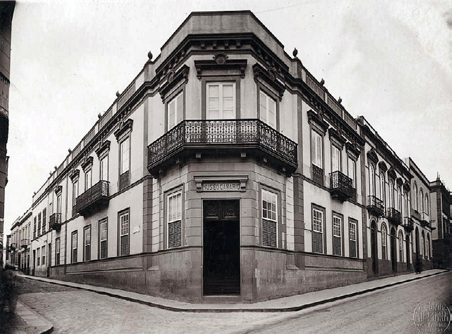
Fig. 3.1. Fachada de El Museo Canario (AMC-CFH-000552, ca. 1930)
3.1.1. Donaciones y compras
De entre las pintaderas que ingresan en la sociedad científica mediante donación o adquisición en estas fechas de finales del XIX, sorprenden por su cuantía las documentadas en Gáldar y Agüimes. Y ello en buena medida podría ponerse en relación con el hecho de levantarse las villas históricas sobre los asentamientos prehispánicos que ahí existían –tal y como diversos trabajos arqueológicos llevados a cabo en la actualidad han puesto de manifiesto–, circunstancia que propiciaba el hallazgo, intencionado o no, de yacimientos.
Comenzando por el caso de Gáldar, efectivamente la riqueza arqueológica de la zona, con un elevado número de conjuntos muy accesibles, facilitó e impulsó la recuperación de materiales tanto por parte de personas vinculadas al museo como de particulares, los cuales en unos casos donaron sus hallazgos a la institución y en otros conformaron importantes colecciones privadas. Hay que considerar también que, junto a los hallazgos derivados de búsquedas intencionales, los descubrimientos casuales de yacimientos entre los habitantes de la villa no eran infrecuentes. El carácter agrícola de la zona implicó una habitual remoción de los terrenos así como la ejecución de obras de arquitectura hidráulica que supusieron el descubrimiento –pero también la destrucción– de algunos enclaves (véase, por ejemplo, J. Batllori, 1900).
Un claro reflejo de todo ello son las frecuentes donaciones a El Museo Canario de materiales aborígenes galdenses, entre los que no faltaron las pintaderas. Según el acta de la Junta Directiva de El Museo Canario de 27 de diciembre de 1886, el entonces director de dicha institución, Gregorio Chil y Naranjo, dona una pintadera con tal procedencia. En marzo de 1890 se registra la donación de otras tres por parte del conservador Víctor Grau-Bassas y Mas –siendo una de ellas un fragmento– (AMC/AMC 1320). Y así, las donaciones de pintaderas galdenses por parte de personas vinculadas de una forma u otra a la sociedad científica se suceden: Antonio Pérez Molina4, una pintadera “encontrada en una cueva de Gáldar”, constando como fecha de entrada en el museo el 26 de noviembre de 1899 (El Museo Canario, 1900: 27; AMC/AMC 1219; 1340); Francisco Rodríguez Reyes5, tres pintaderas y un fragmento, siendo las fechas de ingreso de una de las piezas completas y del fragmento, mayo de 1880 y 20 de julio de 1882 respectivamente6, especificándose como procedencia de este último “cuevas de Gáldar” (AMC/AMC 1219; 1320; 1376); Pablo Padilla, dos pintaderas el 1 de julio de 1884 (AMC/AMC 1219; 1320; 1376); Miguel Maffiotte y La Roche7, una pintadera el 21 de febrero de 1887 (AMC/AMC 1219; 1320; 1376); y, finalmente, según la Junta Directiva de 26 de enero de 1937, Simón Benítez Padilla8 donaría otra pintadera proveniente de Gáldar. A todo ello hay que sumar la venta que un particular, Francisco Suárez Rivero, hace al museo el 21 de agosto de 1885 de un lote de materiales arqueológicos de diversa naturaleza y procedencia, en el que se incluían “dos pintaderas encontradas en Gáldar”, siendo el coste de las mismas 30 pesetas (AMC/AMC 12).
Lo cierto es que, salvo para el caso concreto de la pieza recuperada por Antonio Pérez en una cueva, no existe dato alguno sobre las características de los contextos de los restantes hallazgos. Sabemos, por diversas publicaciones, que algunos de los donantes habían efectuado exploraciones a título particular en el entorno de Gáldar, pero en ningún caso se recogen en ellas alusiones a la recuperación de pintaderas9.
Las características arqueológicas de la villa de Gáldar facilitaron también la formación de algunas colecciones privadas, cuya existencia es puesta en conocimiento de El Museo Canario. Una consulta a las actas de la Junta Directiva correspondientes a los momentos finales del XIX permitirá observar la preocupación de la institución por obtener esas series, alegando en algunos casos el temor a que terminaran pasando a manos extranjeras10. Finalmente dos de ellas serían adquiridas por el museo. Así, el 11 de febrero de 1892 se efectúa la compra por 3750 pesetas de un importante número de materiales arqueológicos entre los que figuraban 20 “pintaderas de barro completas” y 20 “incompletas”11, encontrándose entre las primeras una “con distinto dibujo por cada extremo”. (AMC/AMC 31). Dado que el museo solo alberga dos pintaderas que cumplan tal característica, y que una de ellas ingresa en el año 1999, será la segunda, inventariada con el n.º 3128, la que debió de formar parte de ese lote de materiales adquirido. El único dato que se conoce sobre el hallazgo de dichos restos es el proporcionado por el secretario de la sociedad, Amaranto Martínez de Escobar, quien comunica a la junta que “había visitado en la misma jurisdicción de Gáldar varias cuevas de los antiguos canarios bastante curiosas, donde se habían encontrado la mayor parte de los objetos adquiridos” (AMC/AMC LAJDMC n.º 1, sesión de 13-II-1892, p. 354)12.
La otra compra se llevó a cabo en 1897, tras un informe del también socio corresponsal en Gáldar, Enrique Blanco, indicando la existencia en dicha villa de dos coleccionistas destacados por la importante cantidad de piezas que reunían: Antonio Pérez Molina y Manuel Romero y Caballero. Los materiales que éstos poseían –entre los que se encontraban “13 pintaderas de barro” según el inventario recogido en las actas de la Junta Directiva, sesión de 23 de diciembre de 1897– pasaron finalmente a los fondos del museo por la cantidad de 875 pesetas.
Con la información disponible se comprenderán las dificultades existentes para identificar, en la actual colección, las matrices que por las vías descritas entraron en el museo. Tal vez alguna de ellas se corresponda con la registrada en la actualidad con el número 3129, por proceder también de Gáldar y estar reproducida en una placa fotográfica realizada en torno a 1925-1940 (AMC-FFTM-1428) y en la publicación de René Verneau de 1883 dedicada a las pintaderas. Por otra parte, el número de sellos que en la actualidad posee la institución originarios de Gáldar es muy inferior al que, según la documentación administrativa de finales del XIX, entró a formar parte de sus fondos. Cabe plantear, en este sentido, si acaso algunas piezas para las que hoy no se conservan datos no podrían corresponderse con las que entraron en esas fechas procedentes de Gáldar. Los cambios de números de inventario experimentados por los materiales a lo largo del tiempo y la despreocupación por su registro documental imposibilitan cualquier conclusión en ese sentido.
Tal y como apuntamos anteriormente, una de las fuentes de ingreso de materiales en el museo vino proporcionada por las obras rurales y urbanas que sacaban a la luz yacimientos arqueológicos. Hasta estos momentos de fines del XIX, las evidencias aborígenes puestas así al descubierto quedaban destruidas si es que no pasaban antes a manos de coleccionistas privados. Las actas de la Junta Directiva de la sociedad reflejan una clara preocupación por ese tipo de situaciones, ante las que se adoptan medidas como los avisos que se pasan a los trabajadores de obras públicas y a algunos socios corresponsales en municipios para que se recojan los objetos arqueológicos que aparezcan en el transcurso de los trabajos y los entreguen a la institución científica (AMC/AMC LAJDMC n.º 1, sesión de 20-V-1884).
Esa iniciativa, si bien representa un importante paso en la preservación de materiales arqueológicos, por otro lado pone de manifiesto uno de los principales problemas que lastró el conocimiento histórico de las poblaciones aborígenes durante mucho tiempo: la prioridad conferida al objeto, sobre el cual se pone el peso de la investigación del pasado. La primacía dada a las piezas, y especialmente a aquéllas de características singulares, lleva a emanciparlas del contexto arqueológico del que formaban parte, que es el que, hoy entendemos, le confiere su significado histórico. Solo interesaba que los materiales salieran ilesos, sin importar la pérdida del entorno al que se asociaban.
Lo cierto es que la fundación del museo supuso que la preocupación por la conservación de los vestigios patrimoniales comenzara a calar en parte de la sociedad. Un ejemplo de ello es el aviso que la institución recibe, en agosto de 1881, sobre el hallazgo en Agüimes de un conjunto de materiales con ocasión de unas labores de mejora en los terrenos agrícolas propiedad de Juan Ignacio Herrera, ubicados en “las inmediaciones de la expresada villa”13. A fin de proceder a la adquisición de los objetos descubiertos, se trasladan a este lugar el conservador Víctor Grau-Bassas y el oficial preparador Gabriel Garachico, siéndoles entregado un conjunto de materiales integrado por “treinta sellos o amuletos de la más exquisita forma, varias vasijas de barro (...) un carrete de piedra y varios huesos aguzados” encontrados junto a unas “piedras llanas (lajas)” (V. Grau-Bassas, 1881: 358-359). La inspección visual que el conservador realiza de la zona le lleva a deducir que no existía ningún tipo de arquitectura o cavidad a la que pudieran asociarse tales evidencias.
La ubicación de dichos hallazgos tal vez pueda ponerse en relación con el asentamiento aborigen recientemente identificado en el subsuelo del actual casco histórico, que debió de constituir el Agüimes aborigen al que aluden las fuentes etnohistóricas. Las excavaciones realizadas en la zona (V. Alberto y J. Velasco, 2003; J. Velasco y V. Alberto, 2005) pusieron al descubierto evidencias que serían reflejo de un destacado asentamiento en este entorno.
Con fecha 1 de diciembre de 1881, el mismo propietario de los terrenos de Agüimes donde había tenido lugar el hallazgo descrito dona, junto con tres recipientes cerámicos, una pintadera (AMC/AMC, 1219; 1320 y 1376). En la documentación del museo donde se recoge la entrada de estas piezas se indica que son originarias de Agüimes, sin más aclaraciones, por lo que se ignora si proceden del mismo enclave arqueológico del que se exhumaron las treinta pintaderas.
En el mismo año –concretamente el 15 de julio de 1881– tiene lugar el ingreso de otra pintadera de manos del socio fundador, y también tesorero de El Museo Canario, Juan Melián y Caballero. De ella solo se conoce que procede del término municipal de Agüimes (AMC/AMC 1219; 1320 y 1376).
Como hemos insistido, en la mayor parte de las ocasiones resulta imposible relacionar las alusiones a hallazgos de matrices con la pieza original. Sin embargo, para el descubrimiento arriba descrito, tal vez pueda arrojar algo de luz la publicación de René Verneau de 1883, en la que el autor recoge los dibujos de algunas de las pintaderas que en ese entonces formaban parte del fondo de arqueología. Señala que el museo poseía en ese momento un conjunto de “42 pintaderas, de las cuales 30 han sido halladas hace 2 años en Agüimes, y el resto provienen de Gáldar y Tirajana” (p. 2). De acuerdo con esta afirmación, cabría suponer que los dibujos que recoge de algunas de las pintaderas, según él procedentes de Agüimes, se corresponderían con las aparecidas durante los trabajos en tierras de cultivo a las que antes hacíamos referencia, o con alguna de las dos donadas en el mismo año. De acuerdo con las ilustraciones que ofrece el autor, esas pintaderas serían las registradas en la actualidad con los números 3032, 3049, 3061, 3062, 3064, 3073, 3080, 3082, 3089, 3091, 3103, 3122, 3133, 3162, 3169, 3171, 3175, 3179 y 3208.
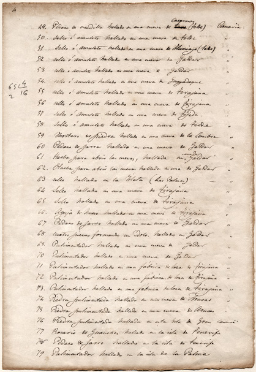
Fig. 3.2. Fragmento de un inventario de materiales arqueológicos de El Museo Canario anterior a marzo de 1881, en el que figuran las cuatro pintaderas procedentes de Tirajana (AMC/AMC 1211)
La documentación administrativa generada por la sociedad científica en las fechas que nos ocupan alude a la donación de pintaderas procedentes de otros puntos de la geografía insular, como “Santa Lucía”, Arguineguín, Tara o Tirajana. Una diversidad de origen que pone de manifiesto la intensa actividad de recopilación desarrollada en los inicios de los estudios prehistóricos en Gran Canaria. Indagar en la historia de tales ingresos ayudará no solo a conocer mejor la información existente sobre los ámbitos arqueológicos de los que proceden, sino también a profundizar en el modelo de actuaciones desarrolladas en torno a los restos arqueológicos.
Así, procedentes de Tirajana aparecen registradas, en diversa documentación administrativa del museo, siete pintaderas. Cuatro de ellas son recogidas en lo que probablemente sea el primer inventario de materiales arqueológicos de la sociedad científica (AMC/AMC 1211), anterior a julio de 1881. En él se hace constar la existencia, en esas fechas, de 4 “sellos o amuletos” hallados “en una cueva de Tirajana”. Por la monografía que sobre las pintaderas publica René Verneau en el año 1883, sabemos que un número indeterminado de esas cuatro matrices había sido regalado a Gregorio Chil por Domingo José Navarro14.
Por lo que respecta a los demás sellos de Tirajana, uno fue donado por Agustín Millares Torres15 en octubre de 1881 (AMC/AMC LAJDMC n.º 1, sesión de 17-X-1881; AMC/AMC Oficios y Correspondencia 1881)16, dos en los días 7 y 13 de octubre de 1886 por Pablo Padilla y Gregorio Chil respectivamente (en este último caso se trataba de un fragmento) (AMC/AMC 1376), y finalmente consta el vaciado de un fragmento hallado en Santa Lucía de Tirajana, donado por Justina Rondot17 y registrado en el museo el 20 de abril de 1893.
Lo cierto es que, de entre las matrices que por las fechas señaladas pasaron a formar parte del fondo del museo, tan solo una aparece en la actualidad como originaria de Tirajana (n.º de inventario 3087). Esta misma pieza es reproducida mediante dibujo por René Verneau en el estudio que aborda sobre las pintaderas (1883), haciéndola proceder de Santa Lucía de Tirajana.
Es escasísima la información arqueológica existente sobre estos hallazgos. El único dato facilitado al respecto es el ya referido de las cuatro pintaderas registradas en el primer inventario del museo, en el que se las hace proceder de “una cueva de Tirajana” (AMC/AMC 1211). Para el caso concreto de al menos algunas de estas cuatro piezas, podemos acudir también a la mencionada publicación de René Verneau. Al reflexionar sobre la significación de las pintaderas, el autor cuestiona la interpretación religiosa defendida por Chil, tomando como elementos de justificación los contextos de los hallazgos de las treinta pintaderas de Agüimes y de varias de Tirajana. Así, para estas últimas –que, como recordemos, fueron regaladas, según el autor, a Gregorio Chil por Domingo José Navarro– señala que “En este hallazgo [de Agüimes] nada milita en favor de la opinión del doctor Chil, y al contrario confirma la del Dr. Grau-Bassas, que piensa que allí debió establecerse un taller de alfarería. Lo que hemos dicho se aplica también a las pintaderas de Tirajana regaladas al doctor Chil por D. José Navarro. El examen del terreno donde se han encontrado y los datos comunicados a D. Diego Ripoche no pueden dejar ninguna duda sobre este particular” (1883: 10). Lo cierto es que, aunque no especifica el contexto del hallazgo, cabría pensar, de acuerdo con dichos datos, que tal vez fuera un ambiente doméstico aquél al que habría que adscribir tales piezas, si bien siempre desde la prudencia que exige la ausencia de cualquier otra documentación en torno al origen.
De otra parte, por diversas publicaciones sabemos que tanto Agustín Millares (1882) como René Verneau (1987: 187-189) y el propio Gregorio Chil (2006: 211 y 240) llevaron a cabo exploraciones a título particular en el valle de Tirajana. Es posible, pues, que parte de las donaciones de pintaderas de Tirajana arriba enumeradas responda a tales actividades, si bien la ausencia de referencias a las intervenciones que sacaron a la luz esos materiales origina un total desconocimiento sobre las características y localización de los hallazgos. Se entenderá que esta pobreza informativa y la riqueza arqueológica de la zona18 imposibiliten cualquier acercamiento más preciso a los posibles contextos en los que se documentaron las piezas.
Continuando con el ingreso de pintaderas en el museo, hay que señalar que con fecha de 30 de noviembre de 1889 consta la entrada de una procedente de La Aldea de San Nicolás, regalada por el agente del Banco de España en Guía, José Tresguerras Melo, al director de El Museo Canario, Gregorio Chil. Según indicación del donador, fue “encontrada en unos majanos” (AMC/AMC LAJDMC n.º 1, sesión de 3-XII-1889; AMC/AMC 3841). Podría plantearse que la referencia “Aldea de San Nicolás” se corresponda con el yacimiento hoy conocido como Caserones, ubicado en la margen derecha del barranco de igual nombre, en el área de su desembocadura. Una asociación que no parece tan peregrina si consideramos que en la fecha de la donación este enclave había sido explorado y descrito por algunos investigadores como Víctor Grau-Bassas (1980) o René Verneau (1987), refiriéndose a él como un poblado en La Aldea, sin otra denominación. De ser cierta esta atribución, el hallazgo de la pintadera tendría que sumarse a los documentados en las excavaciones de los años 1970 y 1980, a los que posteriormente se hará referencia.
El yacimiento arqueológico de Guanchía (Teror) fue también objeto de exploraciones en estas fechas de finales del siglo XIX. Concretamente sería Víctor Grau-Bassas quien estudiara el enclave, recogiendo un cráneo, una mano de mortero y una pintadera hoy por hoy sin identificar. Los únicos datos de los que disponemos para esta matriz son los proporcionados por los inventarios de la época (AMC/AMC 1209; 1376), en los que se indica que con fecha 1 de julio de 1887 Víctor Grau-Bassas dona un ejemplar cuadrado al museo procedente de Guanchía. Se entenderá así que con la información disponible no pueda establecerse el uso o usos del espacio al que la pieza se encontraba vinculada. Tan solo cabe señalar que para el asentamiento de Guanchía, localizado en la margen izquierda del barranco de Teror, se reconocen en la actualidad unas veinte cuevas artificiales de carácter doméstico. Cabría pensar que, dada la recogida de un cráneo por parte del mencionado autor en su expedición al conjunto, debió de existir en las proximidades de la zona de hábitat un área funeraria, no documentada en la actualidad.
Con absoluto desconocimiento de la procedencia, en los primeros años del siglo XX tiene lugar la donación de una pintadera (n.º de inventario 3130) por parte de Nicolás Díaz-Saavedra, capitán ayudante de plaza y socio de número de El Museo Canario entre 1903 y 1907 (J. Pérez de Barradas, 1944: 57).
Probablemente uno de los ejemplos más representativos del valor conferido al objeto como fuente de información per se, al margen del ambiente arqueológico en el que estuvo inscrito, sea la realización de compras de materiales para las que no se recoge prácticamente dato alguno sobre su procedencia o circunstancias de hallazgo. De algunas de estas adquisiciones hechas por el museo se conservan los recibos, a través de los cuales conocemos la entrada de al menos tres lotes de materiales aborígenes en los que se incluían pintaderas. Concretamente en los días 3 y 15 de marzo y 26 de abril del año 1886, Agustín del Castillo –socio fundador de El Museo Canario y abogado de profesión–, Francisco M. de León Falcón19 y Miguel Padilla y Moreno –tesorero de El Museo Canario– venden respectivamente al museo 4, 3 y 7 pintaderas junto a otros registros arqueológicos de diversa naturaleza. La única alusión a la procedencia de esas series era su hallazgo en “las cuevas de los canarios” (AMC/AMC 12)20. Sobra decir que con la información disponible resulta imposible la identificación de estas matrices entre la serie que hoy por hoy conserva el museo.
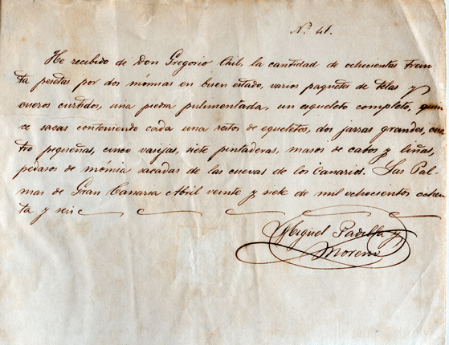
Fig. 3.3. Recibo de 830 pesetas por la compra de materiales arqueológicos que El Museo Canario realiza a Miguel Pardilla y Moreno en el año 1887. Entre el abundante material adquirido constan siete pintaderas. Obsérvese que la única referencia a la procedencia de este lote de objetos es la de “cuevas de los Canarios” (AMC/AMC 12)
El valor conferido al material aislado de cualquier contexto arqueológico estuvo determinado, en parte, por su consideración de indicador del estado de evolución cultural en el que se encontraban los primeros grupos humanos que ocuparon las islas y de su desarrollo interno, tomando como base la periodización elaborada para la prehistoria francesa (por ejemplo, G. Chil, 1876-1891). Una forma de abordar el pasado que, en parte, hay que relacionar con la arqueología francesa del momento, con la que Canarias mantenía estrechos vínculos. De esta forma se explica cómo desde el propio seno del museo, que concentraba las principales personalidades de la investigación prehistórica canaria del momento, se fomentara el ingreso de materiales sin importar las medidas arbitradas para ello, ya que el objeto tenía suficiente entidad por sí solo para informar sobre las características de la sociedad que lo había generado y los diferentes estadios que definían su evolución, al margen de la posición estratigráfica, de la relación con el resto de materiales y, en definitiva, del ambiente en el que habían quedado depositadas tales evidencias.
3.1.2. El coleccionismo
Uno de los problemas a los que se enfrenta el patrimonio arqueológico a fines del siglo XIX es la actividad de los coleccionistas. Efectivamente, puede detectarse como una parte de los vestigios prehistóricos pasan a convertirse en la propiedad privada de algunas personas, que incluso en ocasiones llegan a ofrecer su exhibición. Por supuesto, no todos los restos eran objeto del interés de estos coleccionistas, existiendo una preferencia por aquellos elementos estéticamente atractivos y bien conservados, encontrándose las pintaderas en la nómina de las piezas deseadas.
Un ejemplo es la colección arqueológica que el V conde de la Vega Grande de Guadalupe, Fernando del Castillo y Westerling, llegó a formar. Socio de El Museo Canario desde el 26 de noviembre de 1879 (AMC/AMC LAJDMC n.º 1, sesión de 26-XI-1879) había reunido en vida una importante muestra de material prehispánico, encargando a sus hijas y yerno que tras su muerte fuera donada a la sociedad científica. Es así como el 20 de abril de 1901 tiene lugar la entrada en la institución de una parte de la colección, en la que figuraba una pintadera “rectangular prolongada, con mango roto. Su dibujo (...) es una combinación sencilla de rombos diminutos” (L. Millares, 1901: 12) Diversa documentación del momento recoge la relación de los objetos donados, pero, una vez más, se ignora el lugar concreto del que fueron exhumados, pues al hacer alusión a este aspecto se indica que “la mayor parte de estos objetos fueron encontrados en Arguineguín, algunos en el barranco de Guayadeque y uno en Mogán” (L. Millares, 1901: 12). No solo resulta imposible, pues, determinar el lugar del hallazgo, sino la propia identificación de las pintaderas.
Con la entrega de este lote de materiales se especifica que aún permanecía en manos de familiares parte de la colección de Fernando del Castillo, estando programada su entrega al museo junto con aquellos otros vestigios que sus descendientes reunieran a raíz de las “rebuscas por ellos proyectadas en la extensa zona de Arguineguín, Mogán y Guayadeque” (1901: 10). Lo cierto es que no sabemos si producto de una nueva donación de lo que restaba de la colección del conde o resultado de las nuevas rebuscas emprendidas por sus allegados, el 7 de diciembre de 1901 los fondos del museo se veían nuevamente ampliados con la donación, entre otras piezas, de seis pintaderas por parte de Pedro del Castillo y Manrique de Lara, yerno del difunto conde de la Vega Grande, abogado y miembro de El Museo Canario. La diversa documentación museística en la que se registran dichas piezas sitúa el origen de las mismas en “Arguineguín” (por ej. AMC/AMC 1236; 1349 y 3841)21.
En la segunda mitad del siglo XIX investigadores como Sabino Berthelot o René Verneau (1987; 2005) aplicaron el topónimo de Arguineguín a los restos de un poblado por ellos documentado en el entorno de la desembocadura del barranco de igual nombre22. Es probable, por tanto, que los materiales donados y registrados como originarios de “Arguineguín” procedieran de dicho enclave arqueológico ya conocido y visitado por esas fechas. Si bien de él apenas quedan hoy testimonios –caso del yacimiento de El Pajar–, las descripciones realizadas por los autores referidos y las intervenciones arqueológicas de las décadas de 1970 y 1980 permiten afirmar que debió de tratarse de un asentamiento de considerables dimensiones, integrado por viviendas de piedra y una necrópolis tumular23. La excavación de una de las estructuras de habitación en 1977 por parte de Mauro S. Hernández Pérez, catedrático de la Universidad de Alicante, permitió la obtención de una fecha radiocarbónica a partir de una muestra de carbón procedente de un nivel de incendio que originó el abandono de la casa, que dio como resultado el 480 d.C. (1470±110 AP) (AMC/AMC 1642).
Otra importante colección de material aborigen de diversos puntos de la isla debió de poseer Miguel Maffiotte y La Roche, tal y como se deduce de sus donaciones al museo y de algunas referencias de autores contemporáneos a él, como Sabino Berthelot (1980). Sabemos por este autor que Miguel Maffiotte le da en préstamo “para copiarlas” tres matrices, las cuales, según una publicación anónima de en torno a 1909 (Historia de las islas Canarias), habían sido halladas por su padre, Pedro Maffiotte Arocha. Berthelot indica que “estos tres objetos del arte cerámico, de la época prehistórica, escondidos bajo una capa de polvo y restos humanos, mezclados con fragmentos de alfarería, fueron sacados, los dos primeros, de una gruta de Gran Canaria, y el otro, el sello redondo, de uno de los túmulos de la misma isla”. Se trataría de la primera y una de las escasas referencias a la identificación de pintaderas en contexto funerario. De cualquier forma, hemos de señalar que las procedencias atribuidas por Sabino Berthelot a algunas de las piezas arqueológicas que recoge en sus publicaciones se han demostrado erróneas, razón por la que la información que ofrece sobre las pintaderas de Miguel Maffiotte debe ser tomada con precaución24.
A partir de los dibujos ofrecidos por el cónsul francés de las tres matrices pertenecientes a dicha colección (1980: grabado nº 12) sabemos que una de ellas no forma parte en la actualidad de los fondos de El Museo Canario, de otra se conserva el vaciado registrado con el número 3105, y, finalmente, la circular se corresponde con la número 3056. En cuanto a la localidad de procedencia, señala que Miguel Maffiotte designó a estas piezas como “sellos de los guanartemes de Gáldar”. De acuerdo con ello, habría que preguntarse si la expresión empleada se basaba en la procedencia de las piezas o tan solo se trataba de una forma de definirlas, relacionándolas con los grupos dirigentes de la sociedad aborigen, una de cuyas sedes, al menos en los tiempos epigonales de esta formación social, se encontraba en Gáldar. Lo cierto es que a partir de esta publicación, el origen galdense de al menos dos de las piezas es mantenido por otros autores. René Verneau (1883) reproduce la 3056, haciéndola proceder de Gáldar. De igual manera, la publicación anónima a la que antes hacíamos mención recoge los dibujos editados por Sabino Berthelot (1980 [1879]) de las matrices 3056 y 310525, atribuyéndoles igual origen.
Las colecciones del conde de la Vega Grande o la de Miguel Maffiotte no fueron las únicas para las que existe constancia de la presencia de pintaderas. Otra muestra de materiales que las incluía fue la de Sebastián Pérez Yanes en Tenerife, más conocida como Gabinete Casilda de Tacoronte.
Tras la muerte, en la cuarta década del siglo XIX, del coleccionista Juan Meglioriny y Spínola, residente en la ciudad de Santa Cruz de Tenerife, su heterogénea colección –en la que se incluían objetos arqueológicos– es puesta a la venta, siendo comprada en su mayoría por Sebastián Pérez. Este hombre, más conocido como Sebastián Casilda, iría enriqueciendo la colección original con materiales arqueológicos de las islas, objetos de ciencias naturales, etc., conseguidos por diversos medios. Surge así el Gabinete Casilda de Tacoronte, expuesto al público en la planta baja de la casa que sirvió de residencia a su propietario. En el inventario de 1884 que realiza Juan Bethencourt Alfonso de los fondos de este gabinete (M.A. Fariña, 1994), se registra la existencia de tres pintaderas, las cuales fueron regaladas al coleccionista por un amigo. A su muerte, en 1868, los fondos del gabinete pasan a manos de quien fuera su heredero y albacea, Diego Lebrun, quien, tras recibir diferentes ofertas de compra, termina vendiéndolos al grancanario residente en Argentina, Fernando Cerdeña. En 1889 tenía lugar, así, la salida de la colección a tierras argentinas. Este traslado despertó el interés de quien había sido primer conservador de El Museo Canario, Víctor Grau-Bassas, al encontrarse residiendo en esos momentos en La Plata, ofreciéndose junto con Gabriel Garachico, antiguo oficial preparador de la misma institución, a organizar el material para su nueva exhibición. Una carta de Víctor Grau-Bassas a Juan Padilla26 revela cómo tres pintaderas de la colección son enviadas por él a Gran Canaria, ingresando en el museo (AMC/Colección documental Víctor Grau-Bassas VIII/25).
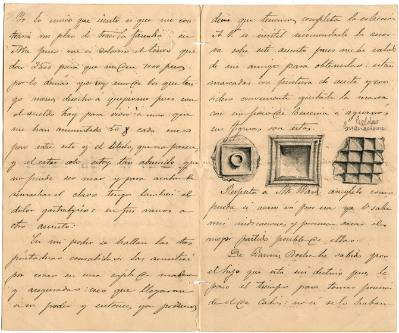
Fig. 3.4. Fragmento de la carta remitida por V. Grau-Bassas desde la Plata (Argentina) el 4 de octubre de 1889 a Juan Padilla, informándole del envío a El Museo Canario de tres pintaderas (AMC/VGB VIII/25)
A través de los dibujos que Víctor Grau-Bassas incluye en la misiva, sabemos que esas tres matrices son las hoy conservadas en la sociedad científica con los números de registro 3083, 3090 y 311127. Sin embargo existen ciertas contradicciones en cuanto a la suma de pintaderas que originariamente poseía Sebastián Casilda. Una de las primeras referencias a ellas la ofrece Sabino Berthelot, quien, a partir de las fotografías que le remite Diego Lebrun –recordemos que fue el heredero de la colección Casilda–, las reproduce en su publicación del año 1879 (1980: grabado nº 10), pudiendo contabilizarse cuatro matrices. Con esta cantidad coincide R. Verneau, ya que al abordar su estudio sobre las pintaderas (1883) refiere que en posesión de Diego Lebrun existían cuatro. De igual manera, el inventario que Juan Bethencourt realiza de los materiales expuestos en el Gabinete Casilda en 1884 –por tanto con anterioridad al traslado de los mismos a Argentina– recoge el dibujo de cuatro pintaderas que describe como “pintaderas del Guanarteme de Gáldar” (M.A. Fariña, 1994: 543 y 553). Tanto en las ilustraciones de este autor como en las de Berthelot, tres de los sellos coinciden con los dibujados por Grau-Bassas y conservados hoy en el museo, pero el cuarto no ha podido ser identificado con ninguno de los que en la actualidad forman los fondos de dicha sociedad científica28.
Más reducida es la cuantía de objetos que llegan a parar a manos del sacerdote de Arucas Pedro Marcelino Quintana Miranda. Durante las obras de desorriba29 realizadas “en una de las lomadas y laderas de la Hoya de San Juan colindantes al barranco de las vegas, en donde actualmente se alza el importante distrito urbano de Montaña Cardones” (AMC/SJS caja 69, carp. 3, doc. 1)30, quedaron al descubierto estructuras de piedra y diverso material arqueológico: dos ídolos, cuatro pintaderas, fragmentos de recipientes cerámicos, un mortero y un recipiente de piedra (S. Jiménez, 1945: 33). Los restos fueron recogidos y entregados en la década de 1910 a Pedro M. Quintana. En 1944 el comisario provincial de excavaciones arqueológicas, Sebastián Jiménez Sánchez –con ocasión de los trabajos de documentación de yacimientos arqueológicos en el término municipal de Arucas–, solicita al clérigo información sobre posibles hallazgos casuales en la zona. Es entonces cuando Pedro. M. Quintana le muestra los materiales, recogiendo el comisario la información conocida en torno a su hallazgo y las características de las piezas (S. Jiménez, 1945 y 1946). Tras la muerte del religioso, los materiales pasarían a depositarse en El Museo Canario (F. Caballero y A. Castro, 2002). De las cuatro pintaderas documentadas, tres son las registradas hoy en el museo con los números 3123, 31045 y 3172, desconociéndose el paradero de la cuarta.
Aunque sin relación con El Museo Canario, es de destacar la serie aborigen reunida por el militar valenciano Mariano Jornet Perales a raíz de su traslado a Gran Canaria entre junio de 1916 y enero de 1917, la cual ha sido estudiada y publicada por Mauro S. Hernández (2004). Durante su estancia en la isla, Mariano Jornet se hizo con diverso material arqueológico recogido durante la visita a una finca de Gáldar llamada “Las Cuevas”. Este topónimo hace referencia a un conjunto troglodita de factura artificial que forma parte del poblado aborigen de Las Cruces, por lo que, tal vez, los hallazgos podrían estar relacionados con este asentamiento prehispánico. La colección, fundamentalmente integrada por recipientes cerámicos y cuatro pintaderas, sería donada por el propio militar en 1952 al Museo de Prehistoria de la Diputación de Valencia, donde aún hoy se conserva.
Finalmente, René Verneau (1883) indica que en posesión del abogado y periodista Juan de Quesada y Déniz31 existían dos pintaderas. En la documentación administrativa del museo no hay constancia de que estas matrices llegaran a ser donadas a la sociedad científica, desconociéndose en la actualidad el destino de las mismas.
3.1.3. “Exploraciones” y “rebuscas”
Si bien una parte de las pintaderas abordadas hasta estas líneas se incorporan a los fondos del museo como producto de donaciones, compras, hallazgos casuales vía obras o también de exploraciones privadas realizadas con fines de investigación, otras fueron el resultado de prácticas arqueológicas realizadas dentro del marco institucional establecido con la creación de El Museo Canario.
Sería el director del establecimiento, Gregorio Chil y Naranjo, quien en la sesión de la Junta Directiva de 26 de marzo de 1886 presentara un proyecto para regular las actividades arqueológicas, aprobado en la misma asamblea. Este reglamento, publicado en 1886, especificaba desde el primer artículo que el fin de las prácticas era enriquecer el museo con “objetos pertenecientes a los aborígenes”. Establecía además una distinción entre las exploraciones y las rebuscas, éstas últimas realizadas en sitios que ya habían sido examinados pero que eran susceptibles de aportar nuevos materiales. Y fijaba que las intervenciones debían ser solicitadas a la Junta Directiva por personas que fueran miembros del museo, previa entrega de una memoria sobre la potencialidad arqueológica del lugar elegido. En caso de aceptarse la actuación, los responsables habrían de entregar al museo, una vez realizada la exploración o rebusca, “una reseña de la exploración, un croquis del lugar explorado y su descripción (...) y haciendo la más exacta descripción de los objetos hallados, del lugar donde se han encontrado y su procedencia (...)”. Sin embargo, pese a la documentación exigida, las piezas tuvieron un valor preferente por encima del contexto de aparición, obviando cuestiones tan importantes como la posición del objeto en el yacimiento, su relación con el resto de materiales y todas aquellas cuestiones metodológicas que hoy se consideran imprescindibles para la más veraz interpretación de los espacios arqueológicos y su consiguiente reconstrucción histórica. Esa prioridad queda perfectamente reflejada no solo en las publicaciones de las intervenciones realizadas en las fechas, sino también en el artículo 5º del propio reglamento, al establecer que las “rebuscas solo podrán efectuarse por el personal del museo o individuos que pertenezcan a su Junta Directiva, toda vez que (...) son los únicos que pueden tener conocimiento exacto de los objetos que en los gabinetes existen; y sería en cierto modo, inútil o innecesario aglomerar mayor número de los que se poseen hasta en cantidad excesiva”, lo que condujo en muchos casos a una recogida selectiva de las evidencias halladas.
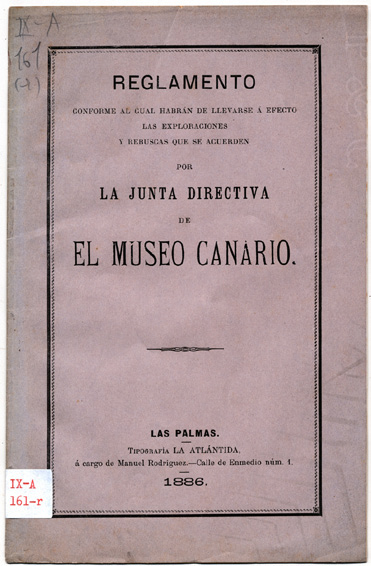
Fig. 3.5. Portada del Reglamento conforme al cual habrán de llevarse a efecto las exploraciones y rebuscas que se acuerden por la Junta Directiva de El Museo Canario (1886), propuesto por G.Chil y Naranjo
Esta “arqueología del objeto” queda puesta de manifiesto cuando acudimos a las características de los materiales que entre fines del XIX y principios del XX entran en la institución museística: hay una clara primacía de aquellos artefactos bien conservados y completos, teniendo una escasa representación los fragmentos32.
En este marco, no existía interés alguno por hacer un registro de las superficies arqueológicas expuestas durante la excavación. Sintomática de esta realidad es la escasa documentación gráfica que encontramos de los sitios intervenidos, la cual, cuando se realizaba, se reducía a un croquis del perímetro de la cueva o estructura excavada. Ello explica en buena medida que desconozcamos el contexto arqueológico de muchas de las pintaderas recuperadas en esas fechas, viéndose imposibilitada una integración más clara de las mismas en la sociedad aborigen y ocasionando que durante mucho tiempo hayan sido objeto de interpretaciones subjetivas.
Siguiendo el protocolo establecido por el reglamento, Juan Padilla solicita a la Junta Directiva una exploración al yacimiento de Tara, que es autorizada en la sesión de 6 de julio de 1887, destinándose para su ejecución la cantidad de 250 pesetas. El resultado de los trabajos realizados en Tara por el mencionado autor y Gregorio Chil fue el hallazgo de “una pintadera, un vasijo completo, ambos objetos pertenecientes a los indígenas, dos figuras de barro, varios fragmentos de molinos de mano y otros varios de jarros o vasijas”. Todo ello se completó con una planta “del pueblo que allí existía, siguiéndose por los restos y vestigios allí encontrados” (AMC/AMC LAJDMC n.º 1, sesión de 28-XII-1887, p. 270). El libro de asientos de ingresos del museo de 1880 a 1900 recoge la entrada de la pintadera con fecha de septiembre de 1887 (AMC/AMC 1376). Con posterioridad, Gregorio Chil donaría al museo otras dos pintaderas producto de las visitas que, a título particular, realizara al yacimiento (una de las cuales sabemos, por el archivo del museo, que entró en noviembre de 1888).
Fruto de esas expediciones es la elaboración de una descripción física del enclave por parte de Gregorio Chil, sin referencia alguna a la práctica o no de excavaciones arqueológicas en la zona, razón por la que desconocemos si los materiales recuperados fueron resultado de ese tipo de intervenciones o bien fueron recogidos en superficie. El yacimiento es definido por el médico como un denso grupo de viviendas, que destacaban por su número, dimensiones y complejidad. Así, por ejemplo, señala cómo en muchos casos las cuevas, excavadas artificialmente, estaban integradas por una estancia central a la que se abrían otras laterales, tal y como todavía hoy día puede contemplarse. Formando parte de este conjunto, el investigador apunta la existencia de una necrópolis “en los lomos del mismo nombre [Tara]” (G. Chil, 1899: 9), que hoy por hoy no ha podido documentarse. Pese a las descripciones que ofrece del poblado, no disponemos de datos contextuales sobre el hallazgo de las pintaderas, siendo imposible, por tanto, determinar a qué fines concretos estaban destinados los espacios en los que fueron recuperadas.
Debido a la ausencia de descripciones de las tres pintaderas recopiladas en estas expediciones al conjunto teldense, resulta muy difícil identificar cuáles de las nueve procedentes de Tara que posee actualmente el museo podrían responder a las documentadas en esas fechas. Sin embargo, dado que de esas nueve dos pertenecieron –como tendremos ocasión de comentar– a la colección de Pedro Hernández Benítez, y cuatro no figuran ni en las placas fotográficas de materiales arqueológicos de 1925-1940 ni en el inventario que de los fondos del museo elaborara el arqueólogo y antropólogo José Pérez de Barradas entre 1938 y 1939, cabría plantear, a modo de hipótesis, que fueran dos de las tres que restan –que sí están recogidas en dichas fuentes– las donadas por Gregorio Chil, y que se corresponden con las hoy registradas con los números 3104 y 3184. La morfología y el estado de conservación de ambas coinciden con las escuetas descripciones que los inventarios de material cerámico de finales del XIX y principios del XX (AMC/AMC 1209, 1210 y 1236) ofrecen para las dos pintaderas de Tara donadas por Chil33.
Podemos afirmar así que el yacimiento arqueológico de Tara ha proporcionado un destacado número de pintaderas, si bien de parte de ellas se desconoce la fecha y circunstancias de hallazgo34.
Todo lo señalado hasta aquí da una perfecta idea del especial interés que en la segunda mitad del siglo XIX surge por conocer el pasado prehistórico de la isla de una forma directa. Un interés que trata de satisfacerse mediante la búsqueda y visita de yacimientos y, muy especialmente, a través de la recolección del registro material dejado por las poblaciones aborígenes.
Vemos, pues, cómo las exploraciones arqueológicas se convirtieron en algo frecuente desde finales del XIX. En unos casos tuvieron un carácter institucional, puesto que fueron impulsadas y organizadas desde El Museo Canario, y en otros fueron realizadas a título personal por parte de investigadores unas veces y de aficionados otras, lo que dio lugar en este último caso a la formación de importantes colecciones privadas.
Si atendemos a quiénes fueron los protagonistas de esas actividades, veremos que mayoritariamente se inscribían en un segmento concreto de la población grancanaria: una burguesía local dedicada a profesiones liberales como la medicina o la abogacía, y que ocupaba, por tanto, cargos destacados en la sociedad de finales del siglo XIX. El deseo de conocer la historia aborigen de la isla les llevó a protagonizar la búsqueda de enclaves arqueológicos y la recogida de materiales representativos de esas sociedades. Se entenderá así que la formación relativa al trabajo de campo fuera muy deficiente.
Además, hay que tener en cuenta que, si bien diversos investigadores europeos prestaron atención a la prehistoria canaria, ese interés se centró, las más de las veces, en el material bioantropológico –dada la asociación que en ese tiempo se plantea entre el reciente hallazgo del hombre de Cro-Magnon y la población aborigen–. Sin duda, esto determinó que la participación europea en la arqueología canaria no estuviera protagonizada por arqueólogos propiamente dichos, sino por investigadores con una formación antropológica a los que poco o nada preocupaba el incipiente método arqueológico.
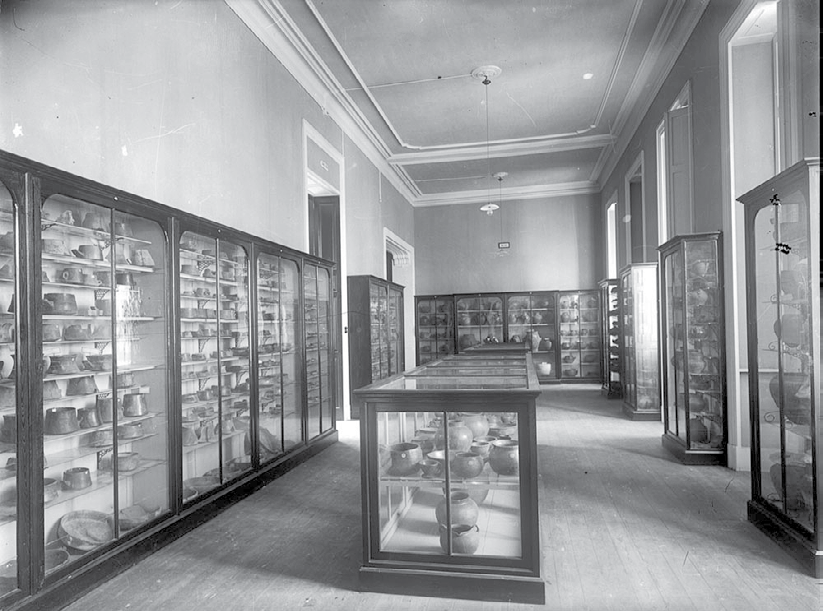
Fig. 3.6. Vitrinas de El Museo Canario dedicadas a la exposición de recipientes cerámicos. Entre finales del siglo XIX y principios del XX, la mayor parte de piezas que entran en la institución son objetos completos, como los que se muestran en esta imagen, producto de una recogida selectiva de materiales en los yacimientos arqueológicos (AMC-FFTM-000414, ca. 1935)
3.1.4. Los intercambios
Las corrientes de pensamiento del momento, con un importante peso del evolucionismo y también del difusionismo, llevaron a que el intercambio de materiales arqueológicos entre instituciones fuera una práctica habitual. Con ello se perseguía establecer comparaciones entre las evidencias materiales de diferentes poblaciones arqueológicas, a partir de las cuales determinar en qué momento de la evolución cultural debía situarse a los grupos humanos estudiados, o bien reconstruir el modelo de difusión que explicaba la existencia de ciertas manifestaciones. Ello tuvo también su reflejo en la propia concepción museográfica de la época, en la que la exhibición de objetos de diversa procedencia se convirtió en norma. Es en este marco en el que, entre finales del siglo XIX y principios del XX, desde El Museo Canario se propicia la recepción de materiales arqueológicos de otros ámbitos geográficos, como Sudamérica, Japón, etc., al tiempo que se lleva a cabo el envío de originales y reproducciones de piezas aborígenes a otros centros museísticos de España y el extranjero –principalmente Francia–.
De esa situación no escaparían las pintaderas. El 2 de octubre de 1894 entran en el museo, producto de una donación del socio honorario Diego Ripoche, los vaciados realizados por él de doce pintaderas de barro y una de madera procedentes respectivamente de México y Venezuela (AMC/AMC LAJDMC n.º 2, sesión de 28-XI-1894)35. De igual modo, en la documentación catalográfica del museo se indica el envío de una pintadera cuadrada de Gáldar (n.º 220) a Madrid –sin especificación del establecimiento beneficiario–, de la cual la sociedad científica conservaría un molde (AMC/AMC 1244 y 1298). Otra matriz original recibiría el museo del Trocadéro en París (F. de las Barras de Aragón, 1929).
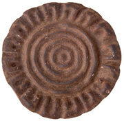
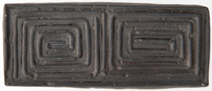
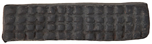
Fig. 3.7. Vaciados en escayola de pintaderas procedentes de Cueva de Arene Candide (Savona, Liguria, Italia) (n.º de inventario 39977), Colombia (n.º de inventario 39978) y México (n.º de inventario 39982), elaborados y donados a El Museo Canario por Diego Ripoche y Torrens
La salida de sellos de las islas con destinos nacionales e internacionales no solo se produce con los originales, sino muy especialmente con réplicas en yeso elaboradas a partir de un sistema de moldes36. Muestra de ello son los donativos de vaciados de pintaderas por parte de René Verneau y Diego Ripoche al director del Museo Antropológico Nacional de Madrid, Manuel Antón y Ferrándiz (F. de las Barras de Aragón, 1929), o también el del primero al Museo de Historia Natural de Madrid (S. Calderón, 1884)37.
Pero junto a las salidas de materiales arqueológicos efectuadas dentro del marco institucional que en esos momentos representaba El Museo Canario, existieron también otros movimientos protagonizados por investigadores y colaboradores de instituciones de fuera de la isla, interesados en enriquecer los fondos de esos establecimientos. Un ejemplo de ello es la serie de tres pintaderas que, según René Verneau (1883), poseía el Gabinete Científico de Tenerife, una de las cuales había sido regalada a su director, Juan Bethencourt, en Santa Lucía de Tirajana. Cuando el gabinete desaparece, parte de sus fondos pasan al Museo Municipal de Santa Cruz de Tenerife y, finalmente, al Museo Arqueológico de Tenerife (M.A. Fariña, 1983), creado en 1958, donde hoy se encuentran las tres matrices (L. Diego, 1973).
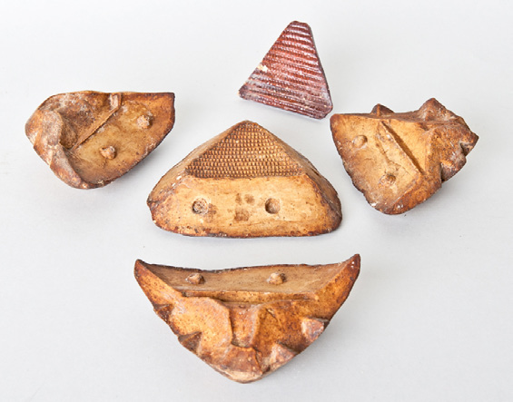
Fig. 3.8. Molde y vaciado de pintadera de Gran Canaria (n.º de inventario 3039)
Si bien una buena parte de las pintaderas abordadas hasta aquí aparecen repetidamente registradas en la diferente documentación generada por el museo entre finales del XIX y principios del XX, existen unas pocas cuya presencia en los fondos de la institución solo se encuentra referenciada una vez, sin que en los inventarios realizados con posterioridad a su supuesta fecha de entrada se recoja mención alguna a ellas38. Éste es el caso de seis pintaderas, tres de ellas halladas en cuevas de Telde, una en la Isleta y las otras dos en cuevas de Tejeda y Guayadeque. Lo cierto es que, salvo para el caso de Telde, no se encuentran en los fondos actuales de El Museo Canario matrices registradas con esas procedencias. Para la pintadera de la Isleta existe cierta información adicional, proporcionada por Sabino Berthelot. Al hablar de la necrópolis tumular que existió en dicho enclave, el autor francés señala que entre los objetos encontrados en ella había “pequeñas cuentas de tierra arcillosas (...) leznas y punzones de hueso, (...) sellos o moldes para estampar, en tierra cocida muy dura, cuyo plano inferior muestra dibujos simétricos de una perfecta regularidad (...)” (S. Berthelot, 1980: 148).
3.2. LAS DÉCADAS DE 1920 Y 1930
Durante los años veinte y treinta del siglo XX, desde El Museo Canario se siguen impulsando exploraciones a diversos enclaves de la isla, que aportan la identificación de nuevos yacimientos y la consiguiente recuperación de materiales que pasan a engrosar las colecciones de la entidad. En cualquier caso, los procedimientos de trabajo con los que se resuelven las actuaciones arqueológicas en nada varían con respecto a lo indicado para las intervenciones de finales del XIX y principios del XX. En realidad se trata de una situación que, si bien está especialmente arraigada en Canarias, no parece ajena al resto del territorio nacional39.
Entre esas “excursiones científicas” cabe destacar las realizadas a los conjuntos de La Angostura y Acusa, dada la recuperación en ellos de pintaderas. Por lo que respecta al primero, según el inventario realizado entre 1938 y 1939 por Pérez de Barradas, José Moreno Naranjo40 visita el yacimiento donando después al museo una pintadera con dicha procedencia. En una entrevista que el periódico Hoy (23 de septiembre de 1933) hace al directivo de El Museo Canario Juan del Río Ayala41, se refiere que miembros de dicha institución –el entrevistado, los directivos Tomás Arroyo Cardoso y Antonio Doreste García y el auxiliar de preparador interino José Naranjo Suárez42– realizan una exploración de las cuevas de La Angostura43. La excavación abordada en una de las cavidades puso al descubierto los restos de un hogar, fragmentos de cerámica y una muela de molino. Según Juan del Río, la zona había sido anteriormente visitada por el socio del museo José Moreno Naranjo, quien recoge varios cráneos y otros objetos que no especifica, los cuales depositó en la institución. A tenor de la información proporcionada por José Pérez de Barradas en su inventario, entre el material recuperado se encontraría una pintadera (n.º 3159). Dada la ausencia de cualquier otra información, no puede precisarse la ubicación exacta del hallazgo dentro del poblado, desconociéndose si éste se produjo en el ambiente de cuevas de habitación, de almacenamiento, funerarias o en el entorno próximo al yacimiento. En definitiva, nos enfrentamos de nuevo a la desinformación que conlleva una recogida de material carente de unos procedimientos de trabajo arqueológico rigurosos44, desinformación que no tiene otra consecuencia que la de limitar la capacidad del material de servir de fuente de conocimiento histórico.
En tales circunstancias, solo cabe señalar que el yacimiento de La Angostura, del que supuestamente procede la pintadera 3159, ocupa la margen izquierda del barranco de Guiniguada, conformando un poblado integrado por cuevas artificiales de habitación, graneros y solapones funerarios. El área de hábitat se ordena en varios andenes comunicados entre sí mediante pasillos excavados en la toba.
Un año después, en 1934, el museo promueve una nueva exploración, esta vez en el entorno de Acusa (Artenara), que sería llevada a cabo por casi todos los directivos que participaron en los trabajos de La Angostura (Antonio Doreste, Tomás Arroyo y Juan del Río), a los que se suma el socio José Moreno Naranjo. De los resultados de estos trabajos se desconoce casi todo. Los únicos datos de los que se dispone se reducen a los proporcionados por el acta de la Junta Directiva sobre el hallazgo de “4 momias de un nuevo tipo y varios cráneos” (AMC/AMC LAJDMC n.º 5, sesión de 20-XI-1934, p. 74). Posteriormente, en 1936, Antonio Doreste, en la sesión de la Junta Directiva de 17 de marzo, “propone completar las exploraciones verificadas en la zona de Acusa, realizando una expedición al pago de Acusa Verde” (AMC/AMC LAJDMC n.º 5, sesión de 17-III-1936, p. 112)45. Los resultados de esta segunda exploración se recogen en el periódico El Tribuno (16 de abril de 1936), en un artículo del socio de número de la institución, José Martín Naranjo, quien relata el ascenso a una cavidad en la que se abrían diez silos, con abundante material: granos de cebada, agujas de hueso, “palos redondos”, esteras de junco, higos, pintaderas, etc. Esta descripción permite adscribir la cueva a un espacio de almacenamiento o granero. En cuanto a la identificación de los sellos, sabemos por una memoria de secretaria de El Museo Canario relativa al año de 1936 (AMC/AMC 4185), que se trataba de una sola pieza. El único dato disponible lo ofrece el párroco Pedro Hernández Benítez, quien señala que en ese año el auxiliar preparador del museo, José Naranjo, halla una pintadera en el interior de una cueva de Acusa (n.º de inventario 3146) (P. Hernández, 1944).
El complejo arqueológico de la Mesa de Acusa (Artenara)46, en la zona noroeste de la cuenca de Tejeda, presenta una densa ocupación que se traduce en diversos poblados en cuevas que rodean toda la base de la mesa. En ellos se distinguen zonas de hábitat, almacenamiento, depósitos funerarios y otros espacios de posible adscripción cultual47.
Se dispone para el entorno de Acusa de dos fechas radiocarbónicas realizadas sobre madera y piel de una momia, recogidas ambas durante las referidas exploraciones de la década de 193048. Las dataciones obtenidas (M. Fusté, 1958-1959: 21) han sido calibradas (E. Martín, 2000), resultando un 420 d.C.-630 d.C. para la madera y un 550 d.C.-780 d.C. para la muestra de piel. Es preciso aclarar que estas fechas tan solo nos informan de un momento concreto de la ocupación, sin que el poblamiento de la zona tenga que reducirse exclusivamente a ese tiempo, sobre todo si tenemos en cuenta la densidad de evidencias arqueológicas que acoge.
También por la década de 1930 tiene lugar la entrada de una pintadera (n.º de inventario 3174) procedente de La Aldea de San Nicolás, según se deduce de las anotaciones signadas a tinta en la misma pieza (“Aldea de San Nicolás, 1933”), sin que exista otra documentación sobre las circunstancias y localización del hallazgo. Por el acta de Junta Directiva de 2 de junio de 1931 conocemos la entrada en esa fecha de otra matriz con igual procedencia, producto de una donación efectuada por Juan Sánchez Milán y Enrique Siemens (AMC/AMC LAJDMC n.º 4, sesión de 2-VI-1931, p. 161 y 162).
Entre las fuentes documentales a las que puede acudirse para reconstruir la trayectoria seguida en la formación de la colección de pintaderas, hay que citar también los fondos y colecciones fotográficas de El Museo Canario49. Una parte de las imágenes que los integran está dedicada a registrar los materiales arqueológicos existentes en la institución en la época que ahora nos ocupa, resultando de especial interés las placas que reproducen pintaderas. Dado que la ejecución de dichas placas se sitúa en los intervalos de 1925-1940 y 1936-1940, todos los sellos en ellas incluidos habrían ingresado en la institución con anterioridad a la última fecha, por alguna de las vías ya descritas. Así, a través de estas representaciones ha podido determinarse que las piezas 3178 y 3052, para las que únicamente se conoce la indicación de su genérica procedencia –Telde y La Aldea–, tuvieron que haber entrado en el museo antes del período 1936-1940 (AMC-FFTM-1865 y 1863).
Estos fondos fotográficos ponen de manifiesto que desde su fundación en 1879 hasta los años 1936-1940, la sociedad científica había reunido un número mínimo de 134 pintaderas, lo que representa el 63% de las que en la actualidad forman su colección. Ello da una idea no solo del intenso ejercicio de recopilación de materiales arqueológicos desarrollado entre finales del XIX y principios del XX, sino también de una práctica de selección del material recopilado a la que con anterioridad hicimos alusión.
Cotejando las piezas recogidas en las placas fotográficas de esa época con la información de la que hoy se dispone de cada una de ellas, se observa un dato muy significativo. La casi totalidad de las pintaderas50 que han llegado hasta nosotros sin documentación alguna pueden identificarse en dichas imágenes (a excepción de las inventariadas con los números 3212, 3217 y 3224). Esta situación es perfectamente ilustrativa de lo que hemos venido reiterando: de una parte, unos procedimientos de documentación deficientes que abocan irremediablemente a la confusión y pérdida de información y, de otra, la propia concepción de los materiales arqueológicos como elementos con valor propio, lo que tendría su reflejo en los trabajos de campo y de gabinete.
Siguiendo la trayectoria marcada por la formación de la colección de pintaderas de El Museo Canario, entramos en el período de la guerra civil española. Sin duda el conflicto representó un importante receso en la actividad arqueológica, que puede observarse no solo en la práctica ausencia de intervenciones por parte de la sociedad científica, sino también en la propia suspensión de la publicación de su principal elemento de difusión, la revista El Museo Canario.
Cerca ya del final de la contienda, llega a Gran Canaria José Pérez de Barradas y Álvarez de Eulate, arqueólogo, antropólogo y americanista. El tiempo que duró su estancia, entre noviembre de 1938 y enero de 1939, lo dedicó al estudio del material arqueológico prehispánico que en esos momentos integraba los fondos de El Museo Canario. Producto de ello fue la elaboración de un Catálogo de la colección de cerámica y objetos arqueológicos (1944) que se encontraban depositados en dos salas de la institución. Ese trabajo supone un importante aporte al conocimiento de la serie de matrices que en esas fechas poseía el establecimiento. Por este inventario sabemos que la sociedad científica reunía en tales fechas un total de 127 pintaderas de barro cocido. Pero además, la relación posee una especial importancia a la hora de identificar el origen de algunas de ellas, ya que, de otra manera, hoy no poseeríamos documentación alguna51. Sorprende, sin embargo, que ya entonces quedara manifiesta la escasa documentación existente para un porcentaje elevado de estos materiales (el 80% –102 de 127– carecía de indicación de origen). Ello, en parte, viene a ser el reflejo, una vez más, del desinterés por la aplicación de unas normas sistematizadas de documentación de los materiales, que permitieran conservar correctamente la información existente sobre las piezas52. De hecho, la totalidad de las pintaderas que han llegado hasta nosotros con procedencia desconocida, ya figuran en la relación del autor sin otro dato más que su descripción física.
El inventario elaborado por José Pérez de Barradas también pone de manifiesto los modelos de trabajo al uso en el ámbito de la arqueología de campo. Llama la atención el elevado número de pintaderas que hasta esa fecha habían sido depositadas en la sociedad científica si lo comparamos con la cuantía que entra en décadas posteriores, y muy especialmente a partir de los años 80, observándose un descenso significativo de la cifra. La explicación a tal variación ha de buscarse en el cambio de objetivos y de concepción de la arqueología en Canarias. A partir de la década de los 70 las intervenciones en los yacimientos responden a proyectos de investigación concretos que tratan de buscar respuesta a diversos interrogantes en torno a la sociedad aborigen o bien se encuadran en una arqueología de urgencia. En cualquier caso, casi desaparecen aquellos trabajos y “rebuscas” realizados por aficionados y orientados a la mera recogida de piezas arqueológicas, y se incrementa la calidad de las intervenciones. Frente a la tarea de recopilación de materiales que fueran vistosos y que se consideraran “representativos” de las sociedades aborígenes, ahora se cuidan al máximo las actuaciones en los yacimientos y el estudio del registro arqueológico en relación con los espacios en los que se documentan, como vías de reconstrucción histórica.
La propia andadura de la revista que publica El Museo Canario incidió en cierta medida en la pobreza documental de algunas de las piezas. Muchas de las actuaciones arqueológicas realizadas fueron dadas a conocer a través de ese órgano de difusión. Sin embargo los continuos problemas económicos que amenazaban la vida de la sociedad obligaron en diversas ocasiones a estrictos recortes presupuestarios que afectaron a la edición de la revista. Ello supuso que en los períodos de 1882 a 1899 y de 1905 a 1933 no saliera a la luz ningún número, de modo que las “exploraciones y excavaciones”, o las donaciones que tuvieron lugar en esas fechas, vieron restringida, si no cancelada, su difusión, conociéndose en el mejor de los casos a través de otros medios como la prensa o mediante su relación en las actas de la Junta Directiva.
3.3. LA COLECCIÓN DE PINTADERAS DURANTE EL PERÍODO DE LA COMISARÍA DE EXCAVACIONES ARQUEOLÓGICAS
Tras el paréntesis que para la actividad arqueológica supusieron los años de la Guerra Civil, el protagonismo que en el ámbito de la arqueología había tenido el museo pasaría ahora a manos de la Comisaría Provincial de Excavaciones Arqueológicas. La instauración del franquismo tuvo para la arqueología consecuencias de carácter institucional (M. Díaz, 1997), dirigidas en parte a garantizar la centralización de toda actividad desarrollada en ese campo. En 1939 se creaba la Comisaría General de Excavaciones Arqueológicas (Orden de 9 de marzo de 1939, BOE n.º 73 de 14 de marzo de 1939, p. 1476), cuyo principal objetivo era el control administrativo y técnico de las excavaciones. Y en 1941 se autorizaban los nombramientos de comisarios provinciales y locales (Orden de 30 de abril de 1941, BOE n.º 134 de 14 de mayo de 1941, pp. 3429-3430), entendidos como “Delegados de la Comisaría General” y por tanto enteramente dependientes de ella.
Pero la elección de los cargos provinciales y locales no vino determinada en muchos casos por una adecuada preparación arqueológica sino por afinidad a las ideas políticas del régimen, lo que dio lugar a un marcado estancamiento, cuando menos, de los métodos y resultados de los trabajos. Ello explica que para la provincia de Las Palmas fuera el maestro y funcionario de la Junta de Obras Públicas, Sebastián Jiménez Sánchez, sin formación arqueológica alguna pero con grandes dosis de afición a ella, quien estuviera al frente de la Comisaría Provincial de Excavaciones Arqueológicas durante todo el tiempo de existencia de esta institución, y al frente de la entidad que en 1955 la sustituye –la Delegación Provincial– hasta 1969, fecha en la que ésta queda suprimida.
Prospecciones, excavaciones y labores de limpieza fueron llevadas a cabo sistemáticamente por Sebastián Jiménez a lo largo del tiempo que desempeñó los cargos descritos, recogiendo estas intervenciones en las memorias reglamentarias, así como en diversas publicaciones (fundamentalmente en la revista Faycán, cuya creación y coste corrieron de su cargo). Pese a la intensidad de sus intervenciones en el patrimonio arqueológico –que supusieron un valioso inventario de los yacimientos existentes en la isla– y a la preocupación por que estas labores fueran publicadas, las deficiencias en la metodología y sistemas de excavación y la falta de un objetivo claro a la hora de abordar las intervenciones o, lo que es igual, la ausencia de preguntas a las que dar respuesta a través de esas labores, volvieron a dejar vacíos de información histórica muchos yacimientos y registros arqueológicos en ellos recuperados.
En otras palabras, podríamos afirmar que la lectura de los yacimientos y, por tanto, de los materiales que formaban parte de ellos, continuaba llena de carencias. Poco se distanciaba, pues, la situación existente de lo que sucedió en los inicios de la arqueología en Canarias, cuando los principales objetivos que guiaban las intervenciones se centraban en la elaboración de plantas o trazados de cuevas y estructuras, y en la mera recolección de materiales. La despreocupación por un sistema de registro riguroso queda puesta de manifiesto en la práctica ausencia de apartados metodológicos en las publicaciones de las actuaciones protagonizadas por el comisario. Puede afirmarse, así, que las formas de registro durante este período casi no experimentaron variaciones o avances53.
Un buen ejemplo de lo señalado lo tenemos en artefactos como las pintaderas. Entre los materiales exhumados en este período como producto de las intervenciones efectuadas por el comisario provincial, figura un destacado número de sellos para los que se dispone, por las razones aludidas, de escasos datos contextuales. La gran mayoría de las memorias y publicaciones elaboradas por Sebastián Jiménez en torno a las excavaciones y prospecciones que realiza, centran la atención en las descripciones morfométricas de los materiales exhumados y de los espacios que los albergaban, minimizando cualquier otra información sobre el yacimiento. En otras palabras, sus memorias se reducen en la mayoría de las ocasiones a una relación meramente descriptiva de los lugares arqueológicos y de las piezas recuperadas. De ahí que cuando abordemos los hallazgos de sellos hechos por el comisario, únicamente podamos señalar el yacimiento en el que fueron recuperados, sin determinar su relación con el resto de objetos que se exhuman, la zona exacta de su localización, la función de los espacios en los que se documentan y un largo etcétera.
En total son 31 las pintaderas recuperadas por Sebastián Jiménez como producto de sus actividades arqueológicas en la isla. Sin duda, este elevado número de matrices da una idea de la extensa actividad por él desplegada. Así, entre 1942 y 1943 el yacimiento arqueológico tradicionalmente conocido como Cenobio de Valerón fue objeto de intervenciones orientadas a su excavación y limpieza. Estas labores permitieron poner al descubierto nuevas oquedades y abundante material: industria lítica, elementos lignarios, malacofauna, óseo animal, óseo humano, recipientes cerámicos y una pintadera (n.º de inventario 3131) (S. Jiménez, 1944 y 1946).
El granero de Valerón se encuentra ubicado en el barranco de igual nombre, en la montaña del Gallego (Guía). Está integrado por un destacado número de cubículos, llegando a contabilizarse más de 350, distribuidos en varias alturas y articulados entre ellos por rampas, escalones o pasillos. El granero forma parte de un conjunto más amplio, en el que se incluyen cuevas de habitación excavadas artificialmente y cuevas funerarias (El Morro). Por sus características, debió de estar destinado al almacenamiento de cereales y probablemente también de otros productos. No se trata del único ejemplo en la isla de Gran Canaria; bien al contrario, estos espacios han sido identificados en diversos puntos de la geografía insular, lo que da cuenta de la importancia de la actividad agrícola en la configuración de la economía de los antiguos canarios. El carácter colectivo que puede intuirse de sus dimensiones y las cada vez más abundantes evidencias de una estructuración jerárquica de esta sociedad, hacen pensar en la práctica de un control de los productos almacenados en estos graneros, que supera el núcleo familiar estricto.
Es en ese contexto donde Sebastián Jiménez documenta una pintadera, pero sin aportar su ubicación exacta o su relación espacial con los restantes materiales arqueológicos.
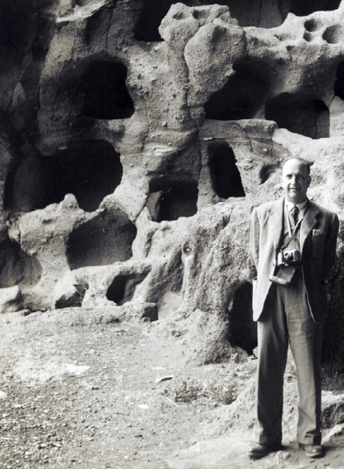
Fig. 3.9. Sebastián Jiménez Sánchez en el Cenobio de Valerón (Santa María de Guía, Gran Canaria) (AMC/SJS caja 71, cap. 7, doc.1)
Uno de los términos municipales en los que el comisario desarrolló una intensa labor de prospecciones y excavaciones fue el de La Aldea de San Nicolás, particularmente en el área de la desembocadura del barranco de La Aldea. Se trata de una zona que debió de acoger una densa ocupación aborigen, a juzgar por las abundantes evidencias de estructuras de piedra, túmulos y otras manifestaciones prehispánicas. La primera campaña la desarrolla en el año 1943, en los yacimientos de Los Caserones, La Caletilla y Bocabarranco, excavando “montículos de piedra, paredes fragmentarias y cimientos”. Estos trabajos le permiten recuperar un abundante registro de carácter doméstico, compuesto por industria lítica (molinos y morteros de piedra, hachas, etc.), fragmentos de recipientes cerámicos, malacofauna, industria ósea, un ídolo y una pintadera (n.º de inventario 3221). En la memoria de excavaciones el autor no especifica la procedencia exacta de esta última, si bien por el pie de foto de la pieza (S. Jiménez, 1946, lám. XXVIII) y por unas notas mecanografiadas inéditas, sabemos que fue recuperada en La Caletilla, “entre las ruinas del poblado ciclópeo” (AMC/SJS caja 84, carp. 1, doc.4).
Según Sebastián Jiménez, el yacimiento de la Caletilla estaba conformado por cuatro estructuras de piedra y ocho túmulos. Cuando se realizó la carta arqueológica de La Aldea, en 1990, se documentaron cuatro túmulos, cuatro estructuras de piedra, así como alineaciones de piedra seca con tendencia oval y circular, observándose que parte del yacimiento había quedado destruido a raíz de unas obras viarias (AMC/AMC 1369).
Entre 1947 y 1951 las labores agrícolas y las intervenciones arqueológicas de Sebastián Jiménez en lo que él define como áreas colindantes con el poblado de Los Caserones ponen al descubierto un importante número de pintaderas.
Así, en el año 1947 los trabajos agrícolas llevados a cabo en unos terrenos conocidos con el topónimo de Pie del Molino de Caserones –al pie de la ladera en la que se encuentra el yacimiento de Los Caserones– sacaron a la luz diversas evidencias arqueológicas, entre las que se encontraba una “pintadera fraccionada”. Comunicado el hallazgo a la comisaría de excavaciones, Sebastián Jiménez realiza una excavación en la zona, recopilando diverso material: recipientes cerámicos, dos ídolos, mortero de piedra y otros objetos de industria lítica, así como varias pintaderas. La presencia de estos restos es entendida por el comisario como resultado de los arrastres originados desde el poblado de Los Caserones hasta la base de la ladera donde fueron identificados. Se trataría, pues, de acumulaciones producto de la erosión natural, quedando los materiales hallados descontextualizados de su depósito original. Esta intervención no llegó a ser publicada, conservándose el original mecanografiado en el archivo de El Museo Canario (AMC/SJS caja 69, carp. 6, doc. 5) y carente de ilustraciones, lo que dificulta la identificación de las matrices. Tan solo hemos podido encontrar coincidencias con cuatro de las seis halladas, concretamente se trata de las hoy registradas con los números 3132, 3158, 3164 y 322554.
Un año después de esta intervención, en 1948, excava en otra zona, según el comisario, colindante con el yacimiento de Los Caserones y conocida como “Hoya de Caerillos (o Caiderillos) de los Caserones”. En ella documenta un variado registro arqueológico, cuya presencia explica, igual que en el anterior enclave referido, a partir de torrenteras que atraviesan el poblado de Los Caserones y depositan en “la falda de la hoya existente entre el citado barranco de la Aldea y el mentado poblado aborigen una serie de material terroso vario... Entre ese material vario producto de fuertes aluviones, iban múltiples vestigios de los hogares o casas cruciformes ciclópeas de Los Caserones...” (AMC/SJS caja 69, carp. 7, doc. 2, pp. 4 y 7). El material recogido estaba conformado por recipientes cerámicos, ídolos, industria lítica, madera y cuatro pintaderas de las que dos presentaban un estado completo (n.º de inventario 3038 y 3050) y las otras eran fragmentos (n.º 3204, no siendo identificada la cuarta).
La riqueza arqueológica de los terrenos situados en la base del yacimiento lleva al comisario provincial a abordar dos nuevas campañas, en 1949 y 1951, en las zonas que él denomina Los Acarreaderos y Arrastres de Caserones respectivamente. Recopila diversas evidencias cuya presencia en esta área él considera ser producto de las mismas condiciones que en los anteriores hallazgos: de “la especial circunstancia de encontrarse el yacimiento en la falda de una montaña colindante con el lecho del Barranco [que] ha permitido que las denudaciones en las casas altas del poblado primitivo, por los efectos de los fuertes arrastres de lluvias, llevaran hacia la parte inferior de la zona cuantos despojos y material del hogar encontraron a su paso” (AMC/SJS caja 70, carp. 1, doc. 155). Junto con abundantes restos de recipientes cerámicos y un ídolo, recupera en la campaña de 1949 dos pintaderas completas (una de ellas se corresponde con el n.º de inventario 305956) y un fragmento de otra (n.º de inventario 3084); y en 1951 tres pintaderas fragmentadas (n.º de inventario 3051, 3140 y 3167) (S. Jiménez, 1952).
Prueba de la prolífica actividad arqueológica de Jiménez Sánchez es una nueva intervención en el año 1952 en el entorno de Los Caserones, concretamente en un conjunto que él denomina Los Morros de Caserones, que sitúa colindando “casi al suroeste con el rico y extenso yacimiento de los Caserones (...) encontrándose por tanto en la parte media de las montañas que por la margen derecha tiene el Barranco de la Aldea de San Nicolás” (1953: 17-18). En él llega a contabilizar hasta siete estructuras de piedra, que define como viviendas en función de su tipología: planta cruciforme en el interior y oval en el exterior. A raíz de las excavaciones practicadas en ellas, documenta industria lítica, malacofauna y material cerámico conformado por fragmentos de recipientes y siete pintaderas. Éstas últimas se corresponden con los números de inventario 3069, 3107, 3170, 3202, 3219, 3220 y 3226.
Nuevamente, unos trabajos agrícolas en los terrenos propiedad de Francisco Díaz, colindantes con el yacimiento de Los Caserones, sacan a la luz restos arqueológicos muebles que, en 1955, llevan a Sebastián Jiménez a abordar una labor de prospección en la zona (S. Jiménez, 1956; 1960; 1962). Como había sucedido en casos anteriores, la memoria que elabora de esta actuación se limita a la descripción de los objetos hallados, sin otra información contextual más que la de definir el área intervenida como “derrumbadero formado por tierras de acarreos”. De esta forma, el inventario que ofrece lo integran fragmentos de recipientes cerámicos, industria lítica, ídolos y pintaderas, ascendiendo el número de éstas últimas a seis (n.º de inventario 3046, 3055, 3099, 3223 y 3231, no siendo posible la identificación de una de ellas).
De las matrices halladas por Sebastián Jiménez en el conjunto arqueológico de Los Caserones, hemos indicado cómo algunas no se han documentado entre los ejemplares que actualmente se encuentran en El Museo Canario. Para el caso concreto de dos de ellas puede confirmarse que no figuran en la institución, ya que se conservan las fotografías realizadas por el propio comisario. La razón de esta ausencia reside en la entrega que éste hace en 1959 a su homólogo en la provincia de Santa Cruz de Tenerife, Luis Diego Cuscoy, de una serie de materiales prehistóricos de Gran Canaria entre los que se encontraban esas dos matrices procedentes del conjunto de Los Caserones. La entrega tenía por objeto el “intercambio con material arqueológico de la isla de Tenerife” (AMC/SJS caja 82, carp. 5, doc. 13). A partir de la descripción física que de las mismas hace el comisario de Las Palmas en la relación del material enviado a Diego Cuscoy y de las fotografías antes referidas, puede afirmarse que las dos matrices se corresponden con las pintaderas sin identificar localizadas en “Pie de Molino de Caserones” y “Los Acarreaderos”. El destino de las mismas sería el Museo Arqueológico de Tenerife, inaugurado en 1958, del que Diego Cuscoy fue su primer director y donde aún se conservan (L. Diego, 1973 y 1983).
Sorprende, sin duda, que aún en fechas tan avanzadas de la centuria se continúen desarrollando unas prácticas de intercambio que recuerdan mucho a las atrás descritas para finales del XIX y principios del XX.
Por último, cabe indicar que formando parte de la colección de pintaderas de El Museo Canario se encuentran dos (n.º de inventario 3205 y 3214) que presentan signada su procedencia: “Aldea de San Nicolás”. Dado que estas piezas no se incluyen en las placas fotográficas de pintaderas (fechadas, como ya hemos indicado, entre 1925 y 1940) ni en el inventario de Pérez de Barradas, y que el sistema de signado es igual al que figura en la mayor parte de las matrices recuperadas por el comisario, podría afirmarse que fueron producto de los trabajos de campo desarrollados por la Comisaría Provincial de Excavaciones Arqueológicas en el entorno de Los Caserones.
A raíz de todo lo apuntado, se aprecia que el conjunto arqueológico de Los Caserones destaca en cuanto al número de pintaderas documentadas, una cuantía incrementada décadas más tarde a raíz de nuevos trabajos arqueológicos, como tendremos ocasión de abordar posteriormente.
A pesar de estar ya mediado el siglo XX, no son extraños los casos de obras que ponen al descubierto depósitos arqueológicos y que son silenciados hasta después de su completa destrucción. Ello, sin duda, es una prueba de que aún a estas alturas de la centuria, y pese a las diversas legislaciones que tratan de proteger el patrimonio arqueológico, no existe una conciencia social de la importancia de su preservación y del especializado tratamiento del que debe ser objeto como recurso histórico.
En el año 1944, la construcción de un cuartelillo de la marina en Hoya del Paso, en el barranco de Guanarteme, puso al descubierto una serie de estructuras prehispánicas. Pese a la importancia del hallazgo, no se dio cuenta a la comisaría de excavaciones y las construcciones fueron arrasadas, ordenando el arquitecto de las obras, Rafael Masanet, la recogida y guarda de los materiales que aparecieran, los cuales fueron posteriormente entregados al comisario. Sebastián Jiménez trata de hacer una reconstrucción del espacio a partir de las descripciones que le ofrecen el maestro y el arquitecto del cuartelillo. De acuerdo con ello, habían sido identificadas tres estructuras circulares de piedra, en cuyo interior “aparecieron abundantes cenizas, caparazones de moluscos, una olla color negro conteniendo granos de trigo tostado y cenizas, y algunos fragmentos de cerámica” (S. Jiménez, 1946: 147), materiales que llevan al comisario a interpretar estos recintos como cocinas. En las proximidades se situaba otra construcción de piedra y un túmulo en el que se encontraron depositados los restos óseos correspondientes a un individuo. Además del registro arqueológico recuperado en dichas áreas, Sebastián Jiménez señala que una “gran parte del material cerámico recogido lo fue en los derrumbaderos inmediatos y otra buena parte, incluso morteros, piedras redondas y molinos lo fue al hacerse el desmonte, apareciendo a tres y cuatro metros de profundidad (...). La tierra de este desmonte es producto de los arrastres de lluvias, pues, no en vano el yacimiento está ubicado en la base de la ladera” (S. Jiménez, 1946: 151).
Entre el material del que se le hace entrega se encontraba una pintadera (n.º de inventario 3120) de la que se desconoce la ubicación exacta de su hallazgo; esto es, ignoramos si estaba asociada a alguna de las estructuras domésticas descritas por los autores de la construcción naval, al túmulo, o si, por el contrario, su deposición fue producto de esos supuestos arrastres de lluvia. Una vez más, nos encontramos con la desinformación tan característica que rodea a los materiales exhumados sin la adecuada metodología.
Sebastián Jiménez no fue el único cargo oficial en el ámbito de la arqueología de la isla de Gran Canaria durante el período de la dictadura. En el año 1943 el párroco de la iglesia de San Juan de Telde, Pedro Hernández Benítez, fue nombrado comisario local de ese término municipal, desarrollando diversas visitas a yacimientos de la zona y recopilando vestigios que en muchos casos tuvieron como destino engrosar la colección arqueológica que tenía en propiedad, razón, esta última, por la que en 1954 es destituido de su cargo. En 1988 la colección es depositada por sus herederos en El Museo Canario.
Entre los materiales por él reunidos se encontraban los procedentes de un hallazgo realizado en Tara (Telde) en el año 1932, durante la roturación de unos terrenos agrícolas propiedad de Andrés Calderín. De este descubrimiento solamente se dan a conocer las piezas recuperadas, sin mención al contexto arqueológico en el que se produjeron los hallazgos: abundantes fragmentos de recipientes cerámicos, material lítico (molinos, tres piezas interpretadas como betilos, etc.) así como dos pintaderas (n.º de inventario 31223 y 31224) (AMC/SJS caja 78, carp. 16, doc. 37). Años después, en 1944, y a raíz de ese descubrimiento casual, Sebastián Jiménez lleva a cabo la “exploración y excavación” del mismo terreno, documentando material cerámico, industria lítica, así como una estructura de piedra en cuyo interior, bajo lo que semejaban ser los restos del derrumbe de la techumbre, recupera malacofauna y fragmentos cerámicos (S. Jiménez, 1946).
El yacimiento arqueológico de Tara, en el término municipal de Telde, al que ya hicimos alusión al referir los trabajos de campo de fines del siglo XIX, está integrado por un importante conjunto de cuevas artificiales y estructuras de piedra, destacando las primeras por su cuantía y complejidad de diseños, ya que en muchos casos sus plantas están definidas por una estancia principal a la que se adosan otras, abriéndose en las paredes alacenas. A juzgar por estas características, debió de conformar un importante asentamiento prehispánico, tal y como pone de manifiesto Leonardo Torriani al indicar que sobre Tara y Cendro “afirman los antiguos (y también se demuestra así por sus ruinas) que eran de grande superficie y llegaban al número de catorce mil casas” (1999: 219).
Pedro Hernández fue también presidente de la sección canaria de la Sociedad Española de Antropología, Etnografía y Prehistoria, en una de cuyas sesiones académicas, celebrada el 13 de enero de 1948, hace una disertación sobre Enterramientos de aborígenes canarios en Telde (1949). El interés de esta comunicación reside en la breve referencia que hace a la necrópolis aborigen ubicada en el malpaís del barranco de la Gallina, en el mencionado término municipal. Según el autor, las labores de roturación llevadas a cabo en esta zona originaron la aparición de “fragmentos de recipientes cerámicos, una pintadera, gánigos y una cuchara de pala” (1949: 155). Restos con esta procedencia no figuran entre los fondos del museo ni en la colección particular del párroco donada a la sociedad científica por su sobrino. En cualquier caso, se trataría de una de las escasas alusiones a la presencia de matrices en espacios sepulcrales, cuyas circunstancias de hallazgo, al igual que sucede con las restantes documentadas en entornos de esta naturaleza, están llenas de incertidumbres57. Los vestigios tumulares del barranco de la Gallina, junto con los documentados por el comisario provincial en el Cascajo de Belén (S. Jiménez, 1952) o Maipés de Jinámar (S. Jiménez, 1960b), debieron de constituir una importante necrópolis, delimitada, al menos en parte, por un muro de piedra, y levantada mediante el aprovechamiento de las escorias volcánicas que conforman la geografía del enclave. De ella apenas si quedan vestigios en la actualidad, debido a la extracción de picón e intensa industrialización de la zona (AMC/AMC 1371).
En definitiva, uno de los problemas más acuciantes que durante la época de actuación del comisariado afectaría a las pintaderas, y por extensión al resto del registro arqueológico, viene dado por la pobreza de información contextual, que no es sino el resultado de la escasa cualificación arqueológica de quienes estaban al frente de las comisarías provincial y local, una carencia que en muchos casos fue la norma de estos cargos para el resto de España.
3.4. LAS PINTADERAS EN EL MARCO DE LOS NUEVOS PROCEDIMIENTOS DE TRABAJO ARQUEOLÓGICO
Es a finales de los años 60 cuando empieza a tomarse conciencia de las deficiencias de los trabajos arqueológicos abordados hasta entonces. La significación de los materiales empieza a entenderse ahora en relación con el entorno arqueológico en el que se recuperan, poniéndose en marcha unas intervenciones más rigurosas. Esta situación vino especialmente impulsada por la creación del Departamento de Arqueología y Prehistoria de la Universidad de La Laguna, por cuanto implicó la formación de profesionales que conocían de primera mano las metodologías y los sistemas de trabajo más adecuados. Sin duda, esta circunstancia representó un importante cambio en la práctica arqueológica con respecto a las décadas anteriores, dando lugar a un enriquecimiento de la información obtenida de los yacimientos y materiales exhumados.
En la provincia de Las Palmas una mayoría de las intervenciones realizadas en los años setenta fue promovida por El Museo Canario58. Ello fue posible, de una parte, a raíz de la creación en su seno de una comisión de arqueología. En el acta de la sesión de la Junta Directiva de 17 de marzo de 1971 se aprobaron y constituyeron una serie de “comisiones auxiliares de trabajo” integradas por socios y directivos. Entre ellas se encontraba la Comisión de Prehistoria y Etnografía –también conocida como comisión de arqueología– integrada por José M. Alzola, Manuel Hernández, Carlos Bosch, Lothar Siemens y Jesús Cantero. Su función era la de desarrollar “trabajos de campo y gabinete, ordenará las colecciones de los almacenes, renovará el etiquetado de las vitrinas, etc. (...)” (AMC/AMC LAJDMC n.º 9, sesión 14-XI-1973, f. 111), así como también la elaboración de una carta arqueológica de Gran Canaria, que supuso “la visita y estudio de los yacimientos conocidos, así como la exploración de zonas poco frecuentadas”.
Los trabajos de prospección llevados a cabo por esta comisión permitieron la identificación de algunos enclaves arqueológicos hasta el momento desconocidos, paralelamente a la recogida de evidencias arqueológicas de superficie. El yacimiento de Solana del Pinillo constituye un buen ejemplo de ello. Este poblado troglodita ocupa ambas márgenes del barranco de igual nombre, tributario del barranco de Siberio, en el sector sur de la cuenca de Tejeda. Está conformado por cuevas de habitación y abundantes graneros ubicados en la ladera derecha del barranco, y cuevas funerarias en la opuesta. El reconocimiento de este enclave por parte de la comisión supuso la recogida de diverso material de superficie, entre el que se encontraba un fragmento de pintadera (n.º de inventario 2805) (Comisión de Arqueología de El Museo Canario, 1974). Sin embargo, la ausencia de cualquier información sobre estas intervenciones imposibilita atribuir una ubicación espacial a esta pieza, no pudiendo determinar el ambiente arqueológico al que estaba asociada (cuevas de habitación, graneros, etc.).
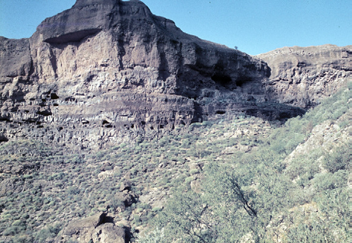
Fig. 3.10. Poblado de La Solana del Pinillo (Tejeda)
Pero además de los trabajos realizados por la comisión, el museo impulsó y dirigió también actuaciones arqueológicas mediante la concesión de becas y partidas presupuestarias a arqueólogos recién licenciados, miembros del Departamento de Prehistoria y Arqueología de la Universidad de La Laguna en unos casos y de universidades de la península en otros, para la ejecución de excavaciones y la elaboración de la carta arqueológica de Gran Canaria (si bien el desarrollo de esta última fue parcial). Ejemplos de ello fueron las excavaciones abordadas en Guayedra (Agaete) por Celso Martín de Guzmán, en el barranco de Guayadeque a cargo de Mauro Hernández Pérez, en Los Caserones (La Aldea de San Nicolás) a cargo de M.ª de la Cruz Jiménez, o en La Restinga (Telde) por Juan Francisco Navarro59.
De entre estas actuaciones son de destacar las desarrolladas en Majada de Altabaca (Valle de Guayedra, Agaete) y Los Caserones (La Aldea de San Nicolás), por cuanto que en ellas tuvo lugar la recuperación de matrices.
Por lo que al primer yacimiento se refiere, se trata de un poblado de superficie ubicado en un promontorio en la margen derecha de la confluencia de los barranquillos de Altabaca y Caideros. Sebastián Jiménez, al realizar excavaciones en la zona entre finales de 1959 y comienzos de 1960, llega a contabilizar una veintena de estructuras de piedra, y llama la atención sobre la abundante presencia de malacofauna en superficie, además de la cual documenta industria lítica (especialmente fragmentos de molinos y morteros) y fragmentos de recipientes cerámicos.
Fue Celso Martín de Guzmán quien abordaría diversas campañas de prospecciones y excavaciones entre 1977 y 1981, en las que identifica hasta cinco construcciones de piedra seca con carácter de habitación. En 1977 excava dos estructuras. En la primera (EH-1), con una planta de tendencia cruciforme, exhuma una pintadera (n.º de inventario 3114), pero la falta de datos precisos en torno a la excavación de esta unidad impide conocer cualquier otra información arqueológica sobre la pieza60.
Por lo que respecta a la construcción que él designa con el número 2, donde recoge el ejemplar 3040, halla los restos de dos hogares, a los que se asocia una destacada presencia de malacofauna. Además de ello, ofrece la relación de otros artefactos y ecofactos recogidos en el interior de esta construcción: restos óseos de ovicápridos, recipientes cerámicos e industria lítica entre la que se incluyen molinos circulares y naviformes. De esta forma, y suponiendo que la pintadera no fuera producto de un depósito secundario, podríamos afirmar su relación con un contexto doméstico.
Otra nueva campaña de excavación en el año 1978 saca a la luz una tercera estructura (EH-3) de tendencia circular, en la que se distinguen dos niveles arqueológicos correspondientes a otros tantos momentos de ocupación. Es en el designado por Celso Martín como nivel arqueológico “A” donde documenta una pintadera (n.º de inventario 3188) junto con restos de recipientes cerámicos, material lítico (lascas y pico), malacofauna y evidencias óseas de ovicápridos y suidos. A juzgar por la posición estratigráfica, este nivel se correspondería con el segundo momento de ocupación de la estructura.
La información generada en torno a los trabajos de campo desarrollados a lo largo de estas dos campañas muestra contradicciones en torno a la procedencia de una cuarta pintadera (n.º de inventario 3206), ya que en unos casos su hallazgo se sitúa en la estructura número 1 (C. Martín, 1982 y referencia signada en la pieza) y en otros en la 3 (C. Martín, 1980).
Una información arqueológica más detallada y completa se observa ya en las publicaciones relativas a las campañas de excavación de 1980 y 1981 realizadas en el mismo yacimiento, en las que se identifica una cuarta construcción de piedra seca y planta cruciforme (E-4). Bajo un primer nivel de revuelto, con diverso material arqueológico, se hallaron restos de maderas quemadas que el autor hace corresponder con el desplome del techo ocasionado por un incendio, el cual originaría el abandono de la vivienda. Levantados los restos de este desplome se documentó el suelo de ocupación, en el que fue identificado un hogar al que estaba asociada una microcerámica y, “perfectamente contextuado (...) un sello-pintadera [n.º de inventario 3074], en terracota, de diseño circular con apéndice y que se encontró prácticamente en el centro de la vivienda” (C. Martín, 1982: 307). Además de estos registros, fue también exhumado un repertorio muy similar al observado para las otras construcciones de superficie: fragmentos de un molino naviforme y piezas cerámicas. Fuera de la vivienda y próximos a su entrada y paredes se localizaron un fragmento de ídolo antropomorfo, industria ósea y un fragmento de pintadera (n.º de inventario 3211). También en el exterior de esta cuarta estructura fue recuperada otra matriz (n.º de inventario 3060).
En definitiva, son siete las pintaderas aportadas por los trabajos arqueológicos desarrollados en el poblado de Majada de Altabaca, algunas de las cuales, tal y como se ha expuesto, fueron exhumadas en posición primaria en contextos domésticos.
Para este yacimiento arqueológico se dispone de dataciones obtenidas a partir de las vigas parcialmente carbonizadas de la techumbre de la construcción 4 y de los carbones vegetales del hogar de la número 361, correspondientes a los mismos niveles donde fueron documentadas las pintaderas de ambas estructuras. Los análisis de carbono 14 arrojaron unas fechas de 770 d.C. y 1250 d.C. respectivamente. Se trata de un dato que nos estaría hablando de un uso prolongado de este poblado, pero también de un extendido empleo en el tiempo de unas piezas como las pintaderas.
Por lo que respecta al yacimiento de Los Caserones (La Aldea de San Nicolás), fue entre 1977 y 1978 cuando las profesoras de la Universidad de La Laguna María de la Cruz Jiménez Gómez y María del Carmen del Arco Aguilar desarrollaron una serie de prospecciones y excavaciones enmarcadas dentro de un proyecto de investigación que tenía por objeto el “estudio sistemático del poblamiento aborigen de esta zona [La Aldea de San Nicolás]” (M.ª C. Jiménez y M.ª C. del Arco, 1984). Los Caserones constituye un núcleo de ocupación conformado por estructuras de carácter doméstico elaboradas en piedra seca y una necrópolis tumular. Una de las primeras descripciones de este asentamiento corresponde al conservador del museo Víctor Grau-Bassas, quien, en el marco de las exploraciones arqueológicas que empezaban a desarrollarse a finales del siglo XIX, visita el yacimiento y ofrece una idea de la importante extensión que debió de ocupar: “Allí se reconoce la existencia de un pueblo muy numeroso: allí aparecen las construcciones que he venido llamando goros, pero de mayor tamaño (10 y 12 metros) y en número que yo estimo de 800 a 1.000 (...) ocupan una considerable extensión que yo calculo en dos kilómetros cuadrados a la margen derecha del barranco desde su orilla hasta el pie de las montañas del Carrizo (...). A la margen izquierda del barranco y a la altura de las construcciones antedichas y muy arrimados al risco se encuentran multitud de sepulturas construidas con cierto esmero pero iguales a las de Mogán (...). Los materiales empleados son las lajas. Hay bastantes visibles pero un gran número deben estar cubiertas por los desprendimientos de la colina superior” (1980: 41).
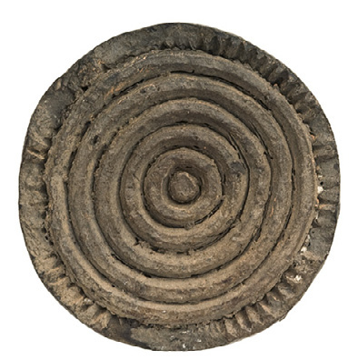
Fig. 3.11. Pintadera hallada en una casa de piedra del poblado Majada de Altabaca (Valle de Guayedra, Agaete) (n.º de inventario 3074)2 cm.
La riqueza arqueológica que se deduce de ese texto ha llegado hasta nuestros días considerablemente mermada como consecuencia de las actividades agrícolas y del imparable proceso urbanístico al que se ha visto sometida la zona desde aquella época. De hecho, ya Sebastián Jiménez, en la década de 1940, contabilizaría un número muy inferior al indicado por Grau-Bassas: “más de 87 ruinas de viviendas de estructura ciclópea, en su mayoría encallejonadas”. Los trabajos de M.ª C. Jiménez y M.ª C. del Arco permitieron identificar únicamente cuatro casas de piedra y cuatro túmulos, reconociendo la existencia de otros restos que podrían corresponder a más construcciones. De ellas se excavaron dos viviendas y otros tantos túmulos62.
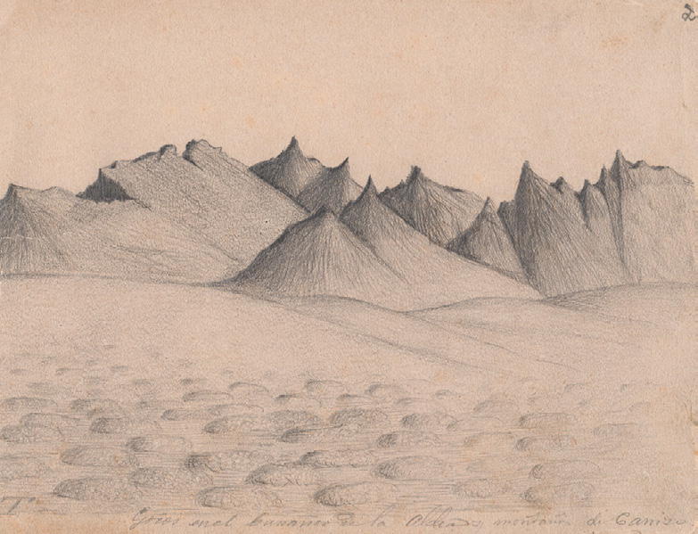
Fig. 3.12. Dibujo del poblado de Caserones (La Aldea de San Nicolás, Gran Canaria), realizado por Víctor Grau-Bassas a finales del siglo XIX (AMC/VGB)
Por lo que a las casas se refiere, presentaban una planta cruciforme en el interior y oval en el exterior, distinguiéndose diferentes niveles de ocupación desde época aborigen hasta el período de conquista y colonización castellanas, como se dedujo de un hallazgo numismático del siglo XV y de la presencia de restos de cerámica de importación. En el nivel prehispánico fue documentado un hogar central y se exhumaron unos registros materiales muy similares a los identificados en otras áreas de habitación: recipientes cerámicos, industria lítica y fauna terrestre y marina. Sabemos también que en el proceso de los trabajos desarrollados en las viviendas y en el designado como “túmulo 1” se recuperaron hasta cuatro pintaderas. Sin embargo, la información ofrecida sobre el hallazgo de las mismas es ciertamente confusa, hasta el punto de no poder determinar con seguridad si su origen debe situarse en las viviendas, en el túmulo o en los alrededores de estas construcciones. Por una parte, en el inventario elaborado por M.ª C. Jiménez de los materiales exhumados a lo largo de dos campañas tan solo se hace referencia a dos pintaderas (siendo una de ellas un fragmento) recuperadas en el “Túmulo nº 1” de Los Caserones (excavado en 1978), no existiendo en la relación de materiales de las casas 3 y 4 (excavadas durante las campañas de 1977 y 1978) ninguna alusión al hallazgo de este tipo de piezas. Ello entra en contradicción con el número de sellos que se depositan en el museo procedentes de esta intervención, que asciende a una pintadera completa y 3 fragmentos. Resulta imposible, por otra parte, identificar cuáles de ellas corresponden a las dos que según el inventario fueron identificadas en el túmulo nº 163.
Esa confusión no parece aclararse tampoco en el artículo que las autoras dedican a los ídolos y pintaderas de La Aldea (1984), ya que al referir la procedencia de estas piezas tan solo indican, en unos casos, el número de la zona en la que fueron descubiertas –sin explicación previa del espacio físico al que corresponde ese dígito–, el año de la campaña y si se trata de un hallazgo de superficie64.
Solamente cabría plantear, ciñéndonos a una cuestión de toponimia y tratando de dar un poco de luz a esta situación, que, dado que la campaña de 1977 se centra en dos casas de piedra de Los Caserones y en un túmulo ubicado en la zona conocida como Lomo de Los Caserones, y que, según las autoras, las dos pintaderas halladas durante la campaña de ese año (n.º de inventario 30750 y 30751) procedían de “Los Caserones” y no de “Lomo de Los Caserones”, entonces dichos sellos debieron de ser recuperados en el ambiente de las casas de piedra que se excavan. En la misma línea, cabría deducir que dos pintaderas que ellas señalan procedentes de la campaña de 1978 podrían ser las correspondientes al nivel 1 del túmulo 1 de Los Caserones65.
Tras esta intervención, en las décadas de 1980 y 1990 se llevan a cabo nuevas actuaciones en la zona, como la excavación del túmulo de Lomo Granados (M.ª C. Jiménez, J.C. Hernández y A. Valencia, 1992-1993), prospecciones con ocasión de la elaboración de la carta arqueológica de La Aldea de San Nicolás (AMC/AMC 1369), etc. Pero de entre ellas hay que destacar las excavaciones desarrolladas en dos campañas, entre los años 1998 y 1999, bajo la dirección de José M.ª Domínguez Peña y otros, ya que durante estos trabajos vuelven a exhumarse algunas pintaderas. Las labores consistieron en la limpieza de las dos casas que habían sido excavadas con anterioridad por M.ª de la Cruz Jiménez y M.ª del Carmen del Arco, y en la excavación de los testigos que habían dejado en su interior. Así, a la campaña del 98 corresponde un fragmento de pintadera recogida en superficie en los alrededores del yacimiento (n.º de inventario 29795). La del 99 se centró en la construcción designada como n.º 4, recuperando un fragmento de pintadera en el estrato superficial del testigo que se encontraba adosado a la esquina noroeste de la estructura (n.º de inventario 29796). Si bien estamos ante un hallazgo de superficie, sí podemos decir que, igual que en otros casos aquí expuestos, el resto de pintadera parece estar asociado, por su ubicación, a un ambiente doméstico.
Las numerosas intervenciones arqueológicas a las que se ha visto sometido el yacimiento de Los Caserones han permitido también contar con una relativamente amplia serie de dataciones. En concreto, las fechas por radiocarbono obtenidas sobre restos de madera para dos viviendas y construcciones tumulares de Lomo Granados (M.ª C. Jiménez, J.C. Hernández y A. Valencia, 1992-1993) y Los Caserones (M.ª C. del Arco et al., 1977-1979; E. Martín, 2000)66 sugieren un uso dilatado de este entorno por parte de sus habitantes prehispánicos. A la intensidad temporal y espacial de su ocupación debieron de contribuir las propias condiciones biogeográficas, especialmente favorables para una economía de marcado carácter agrícola como la que parece caracterizar a la población preeuropea de Gran Canaria. Si bien es cierto que no podemos asociar ninguna de las piezas de barro referidas a un nivel concreto de ocupación datado, no deja de ser tentador ver en estas piezas un uso tan prolongado como el del yacimiento en el que se inscriben.
Para finalizar este apartado, cabe citar el hallazgo fortuito, en 1980, de restos óseos humanos en unas cuevas del barranco Guiniguada. Comunicado el descubrimiento a El Museo Canario, éste emprende la prospección de la zona y la excavación de algunas de las oquedades funerarias. La inspección permitió reconocer la existencia de lo que debió de ser un importante poblado aborigen, al que los autores de los trabajos designan como conjunto Guiniguada-Las Huesas, ubicado en la margen derecha del mencionado barranco, en una zona relativamente próxima a su desembocadura. Está integrado por una necrópolis en cuevas y solapones naturales –de los que llega a contabilizarse hasta un número de treinta–, y por agrupaciones de cavidades naturales y artificiales de habitación, en cuyo interior se abren silos y alacenas. A todo ello hay que sumar la presencia de estructuras de piedra seca que, en función del registro en ellas aparecido (M. Adolfo Manso, 1975-1976), pudieron haber tenido un uso doméstico. La existencia de este asentamiento se conoce ya desde finales del siglo XIX, pues Diego Ripoche hace alusión a unas cuevas aborígenes en Las Huesas (1880)67.
Entre las áreas de carácter habitacional, sin duda destaca el conjunto de El Drago, formado por 24 cavidades excavadas en la toba y distribuidas en diferentes pisos. Su constante reutilización hasta fechas no muy lejanas ha tenido como consecuencia la pérdida de los depósitos arqueológicos existentes en su interior. Es en las laderas inferiores de ese asentamiento, que actuaron como vertederos, donde las prospecciones efectuadas por El Museo Canario permitieron recuperar diverso material, entre el que figuraban fragmentos de recipientes cerámicos y una pintadera (n.º de inventario 3145). El yacimiento debió de ofrecer un registro arqueológico más rico a juzgar por la información oral recogida de algunos mayores de la zona que habían reutilizado las cavidades, ya que “recordaban los hallazgos de pintaderas, idolillos y vasijas de barro, tanto en el interior de las cuevas como en los vertederos de las mismas” (J. Cuenca y C. García, 1980-1981).
3.5. INVENTARIOS ARQUEOLÓGICOS, INTERVENCIONES Y HALLAZGOS CASUALES ENTRE FINALES DEL SIGLO XX Y PRINCIPIOS DEL XXI
Los cambios experimentados en la arqueología canaria desde finales de los 60 han afectado también a otro aspecto del patrimonio como es la gestión de su conservación. Efectivamente, a partir de esas fechas la preocupación por la protección de los testimonios arqueológicos se materializa en la puesta en marcha de una serie de medidas cuyo desarrollo y aplicación se irán intensificando a lo largo del tiempo. Así, empezando la década de 1970 se asiste a la ejecución de proyectos de acondicionamiento y cerramiento como los de la Cueva Pintada, La Guancha o el Cenobio de Valerón, entre otros.
Éste último interesa ahora, especialmente, porque con fecha de 1972 entra en El Museo Canario una pintadera originaria de dicho enclave (n.º de inventario 3142), sin que hoy se conserve ningún otro dato sobre la misma. Sabemos que un año antes se había iniciado la restauración de este granero colectivo, que tenía por objeto la adecuación del acceso al yacimiento. Según una información recogida por la Comisión de Arqueología de El Museo Canario en su artículo Inventario de yacimientos rupestres de Gran Canaria (1974), José Naranjo Suárez –oficial preparador de El Museo Canario desde 194068– realiza, con ocasión de esas obras de mejora, una excavación de la que exhumó abundante material: “en un relleno de tres metros se extrajeron numerosos molinos y morteros, apreciándose así mismo patellas, carbón, etc.” (1974: 209). Dada la coincidencia de fechas, cabría pensar que la pintadera que pasa a formar parte de la sociedad científica en 1972 procedente del Cenobio fuera documentada por el conservador durante el desarrollo de su intervención arqueológica.
Al tiempo, la creciente preocupación por la protección de los yacimientos existentes en las islas da lugar a partir de los años 80 a una intensificación de las actividades dirigidas a la documentación e identificación de la composición de ese patrimonio69. En otras palabras, se toma conciencia de la necesidad de conocer para poder proteger. Es así como en las décadas de 1980 y 1990 se asiste al desarrollo de numerosos proyectos de elaboración de cartas arqueológicas y planes especiales, que se convierten en las herramientas de gestión y preservación del patrimonio arqueológico70.
De esta forma, la creación en el seno de El Museo Canario de un Servicio de Arqueología a mediados de la década de 1980 se tradujo en el encargo, por parte del Gobierno de Canarias primero y del Cabildo de Gran Canaria después, de la realización de cartas arqueológicas y planes especiales de diversos términos municipales y áreas geográficas de la isla de Gran Canaria. Estas labores dieron lugar a la recogida de algunas producciones aborígenes, entre las que figuraban pintaderas.
Un ejemplo de ello lo constituye el Plan Especial de la Cuenca de Tejeda, que significó el inventario de los yacimientos arqueológicos comprendidos en dicho entorno y, en ocasiones, la recogida de aquel material de superficie que, por su exposición, sufría riesgo de desaparecer. Éste último es el caso de un fragmento de pintadera (n.º de inventario 36871) recuperado en una de las oquedades de un granero del poblado de La Candelaria, en la base de la Mesa de Acusa. Las cuevas que integran este enclave se distribuyen en dos niveles con usos diferenciados, estando en el superior los espacios de carácter funerario y de almacenamiento. Éste último está formado por un conjunto de más de una decena de cavidades artificiales abiertas en el interior de un solapón natural, conservando, varios de los silos, orificios y ranuras que indican el empleo de cierres. Una de las cavidades, ubicada en la zona central del granero, presenta la particularidad de estar decorada mediante un punteado blanco sobre fondo negro (conocida por ello como Cueva de las Estrellas), abriéndose en su suelo varias cazoletas71. Es en un silo próximo a ésta última donde, con ocasión de los trabajos de elaboración del plan especial, se recuperó en superficie el referido fragmento de pintadera, además de restos de cerámica y argamasa, ésta última igualmente presente en paredes y techo.
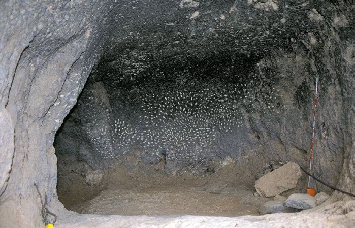
Fig. 3.13. Cueva de las Estrellas (Acusa, Artenara)
También en este mismo período de la década de los 80 pasan a formar parte de los fondos del museo cuatro nuevas matrices provenientes del entorno de Tirma, si bien se desconocen los procedimientos de su hallazgo. La documentación relativa a ellas existente en la sociedad científica (AMC/AMC 1251) indica que una (n.º de inventario 3068) fue hallada en Tirma, sin especificación del yacimiento concreto de origen dentro de ese amplio complejo arqueológico, ingresando en el museo en el año 1983. Las otras tres proceden de Las Casillas de Tirma, y pasan a formar parte de los fondos de la institución en 1983 (n.º de inventario 3058) y 1986 (n.º de inventario 2823 y 2824)72.
La zona arqueológica de Tirma se encuentra ubicada en el litoral de Artenara y está integrada por un destacado número de vestigios arqueológicos: casas de piedra, túmulos, cuevas de habitación y funerarias, así como otras construcciones de posible carácter cultual. Las primeras referencias al topónimo de Tirma aparecen recogidas en las fuentes etnohistóricas, en las que se define como un lugar de carácter sagrado. La zona fue visitada a finales del siglo XIX por Víctor Grau-Bassas, quien documenta “en las faldas de la montaña de Tirma (...) bastantes vestigios de casas canarias hasta el número de 19, pero muchas de ellas han desaparecido bajo modernas construcciones” (1980: 54).
Entre los diversos yacimientos arqueológicos que integran el complejo, cabe destacar aquí el conocido como Casillas Canarias, por ser éste el enclave de procedencia de parte de la serie de pintaderas a las que antes hacíamos mención. Está conformado por más de una veintena de estructuras de piedra seca con carácter de habitación y, vinculadas a ellas, construcciones tumulares. En el contexto de las casas abundan, en superficie, las evidencias materiales características de las áreas destinadas a usos domésticos: recipientes cerámicos, industria lítica tallada y fauna terrestre (ovicápridos) y marina.
En definitiva, solo cabe indicar que para las pintaderas recuperadas en este enclave carecemos de información sobre el área concreta del hallazgo: casas de piedra, túmulos, alrededores del yacimiento...
Quizá uno de los principales problemas a los que se ha enfrentado en los últimos años el patrimonio arqueológico haya sido el intenso crecimiento urbano. En muchos casos las obras públicas y privadas se han proyectado sobre áreas de valor patrimonial, circunstancia que ha originado la puesta en marcha de una arqueología de urgencia que trata de paliar las negativas consecuencias de tales actuaciones. De hecho, casi podríamos afirmar que una buena parte de los trabajos que entre fines del siglo XX y principios del XXI se han desarrollado tienen un carácter de “salvamento”. Este panorama queda perfectamente reflejado en la creación de un marco legal que regula tales situaciones (Ley 16/85, de 25 de junio, del Patrimonio Histórico Español y Ley 4/1999, de 15 de marzo, de Patrimonio Histórico de Canarias). La concienciación social de preservación de los vestigios históricos y la normalización legal de las situaciones descritas han hecho que el hallazgo casual de los mismos en áreas objeto de remociones del terreno ya no quede, en una parte mayoritaria de los casos, silenciada, sino que se proceda a su puesta en conocimiento de las autoridades competentes, viéndose de esta forma asegurada la salvaguarda de la información histórica que representan tales evidencias.
Un ejemplo que debe traerse a colación, por haber proporcionado algunas de las piezas objeto de este trabajo, es el de El Tejar. Se trata de un enclave arqueológico localizado en la margen izquierda del barranco Guiniguada. Fue puesto al descubierto en 1987 por el propietario del solar donde se ubica, quien, al realizar unas labores de acondicionamiento del terreno, sacó a la luz algunos restos arqueológicos entre los que se encontraban dos pintaderas. Informado El Museo Canario, las obras quedaron paralizadas.
Es posible que las dos pintaderas halladas en ese momento se correspondan con las registradas con los números 7838 y 11042, ya que, según los inventarios de la Comisión y del Servicio de Arqueología de El Museo Canario (AMC/AMC 1243), ambas procedían de “El Tejar. La Angostura” y entraron en el museo un año después del descubrimiento de dicho enclave, en 1988, teniendo como información adjunta que se trataba de un material de superficie.
En 1997, la entonces Área de Patrimonio Histórico del Cabildo de Gran Canaria encargó la ejecución de una intervención en la zona, al objeto de documentar la potencialidad arqueológica. Los trabajos, dirigidos por las arqueólogas Rita Marrero y Milagrosa García, permitieron evidenciar la existencia de dos estructuras de piedra seca –una de tendencia circular– y abundante material prehispánico en niveles de revuelto: cerámica, fauna (fundamentalmente ovicápridos), industria lítica y una pintadera (n.º de inventario 29619). Ésta última aparece en la primera de las cuatro tallas que se distinguen por encima de la construcción circular. No se llega, sin embargo, a conclusiones claras en cuanto al carácter prehispánico de las alineaciones de piedra ni en cuanto a la procedencia del material mueble hallado, planteándose incluso la posibilidad de que la presencia de éste último fuera producto del aporte de tierras de otras zonas al solar (R. Marrero y M. García, 1997).
La situación descrita llevó a una nueva campaña de excavaciones por parte de la empresa Tibicena en 2001, que perseguía aclarar la adscripción cultural del enclave (A. Ascanio et al., 2004). Entre los niveles identificados conviene detenernos en el superficial, por cuanto de aquí proceden también las evidencias materiales recuperadas en 1997. En él se observó que los materiales arqueológicos (cerámicas, industria lítica...) se mezclaban con materiales sub-actuales, con orientaciones que apuntaban a una remoción de este nivel, y que los autores atribuyen a las “sorribas agrícolas, ya que el mismo yacimiento se encuentra en un antiguo bancal agrícola”. Se trata, por tanto, de un nivel “relacionado con labores agrícolas de abancalamiento que se produjeron en esta zona a finales del siglo XIX y principios del XX”. En este sentido cabría plantear que el material de revuelto documentado también en la anterior campaña (entre el cual recordemos que había aparecido una pintadera) respondería no tanto a un aporte de tierras foráneas, como se propuso en un principio, sino más bien a la simple alteración del yacimiento como consecuencia de las remociones del terreno. Lo cierto es que los trabajos permitieron confirmar la filiación prehispánica de parte de las hiladas de piedra sacadas a la luz en la anterior campaña, llegando a documentar hasta tres estructuras.
La excavación se centró en una de las construcciones, que mostraba morfología circular y a la que se adosaba otra que, aunque afectada por la obra de una carretera, parecía estar definida por la presencia de alcobas laterales. Las características presentadas por la primera unidad y la naturaleza y relaciones espaciales del material que albergaba en su interior, tal vez estuvieran hablando de un espacio relacionado con actividades de producción alimentaria, en el que la fauna doméstica tuvo un especial protagonismo.
Los resultados de estos trabajos conducirían, en el año 2002, a una segunda campaña por parte de la misma empresa con el objetivo de seguir profundizando en la significación histórica del enclave, recuperándose una nueva pintadera. Se excava ahora la segunda construcción identificada en la anterior intervención, documentándose un espacio que estaba, también, funcionalmente asociado a actividades de procesado de alimentos.
Las dataciones obtenidas por Carbono 14 para estas dos estructuras, sitúan su uso entre la segunda mitad del siglo VII y principios del XV (J. Morales, 2010).
Otro ejemplo de intervención arqueológica desarrollada a partir de un hallazgo casual son los sondeos efectuados por la empresa Arqueocanaria S.L. en el año 2003, en una parcela del área galdense de San Sebastían-Barrio del Hospital, donde las remociones de tierra para su urbanización sacaron a la luz restos arqueológicos (Arqueocanaria S.L., 2003). Los trabajos de campo pusieron al descubierto estructuras de piedra y abundante material de filiación prehispánica y, en menor medida, histórica, recuperándose dentro del primer grupo dos pintaderas (n.º de inventario 42901 y 42902). Las características de las evidencias documentadas apuntan a un uso doméstico de este espacio en época aborigen.
Junto a las intervenciones desarrolladas a raíz de hallazgos casuales, otras actuaciones abordadas en el marco de proyectos de investigación han aportado también pintaderas. Este es el caso de la excavación arqueológica que, en 1990, lleva a cabo Rosa Schlueter Caballero (2009) en una estructura de piedra que forma parte del conjunto arqueológico de Las Fortalezas, en Santa Lucía. Los materiales recuperados permiten atribuir un carácter doméstico a esta construcción, en cuyo interior, y en un nivel de revuelto, se recupera un fragmento de pintadera (n.º de inventario 42900).
Pese a todos los recursos puestos en marcha para la protección del patrimonio arqueológico (legislación, difusión de resultados de investigación, etc.), no han dejado de existir actuaciones que inciden negativamente en él, dando lugar a una alteración de enclaves arqueológicos que, ante todo, supone la desaparición de una fuente de información trascendental para el proceso de reconstrucción del pasado. Ello puede ejemplificarse con una situación que afecta directamente al material que estamos aquí estudiando. Con fecha de agosto de 1998 son depositados en El Museo Canario dos fragmentos correspondientes a igual número de pintaderas (n.º de inventario 32422 y 32423), hallados dentro de una bolsa junto con otro material en un solar de Almatriche. La pérdida de unos datos tan significativos como la procedencia de estos restos, la naturaleza del yacimiento del que formaban parte, las características del contexto en el que se encontraban depositadas... ha hecho que estas matrices pierdan gran parte de su valor como recurso de información histórica sobre la sociedad que las produjo.
Por las mismas razones aludidas, resultan también perniciosas aquellas recogidas de materiales en superficie realizadas al margen de cualquier proyecto de intervención arqueológica. Si bien es cierto que en muchos de los casos tales actuaciones están hechas sin otro propósito que el de intentar asegurar que ese material no desaparezca, su recogida por personas no cualificadas implica que la documentación que aportan sufra importantes carencias que hubieran podido evitarse de haber sido recuperadas con los criterios adecuados. En las últimas décadas la entrada de piezas en El Museo Canario por esta vía ha disminuido pero no cesado, siendo las pintaderas uno de los materiales afectados en ese sentido. Concretamente, en la última década del siglo XX y primera del XXI han ingresado por estos medios un total de 7 pintaderas, procedentes de Los Corralillos (Agüimes) (n.º de inventario 30767), Los Caserones y Lomo de Los Caserones (La Aldea de San Nicolás) (n.º 32421 y 29487), Barranco de Chamoriscán (San Bartolomé) (n.º 31035 y 31036), El Baladero (Telde) (n.º 29793) e Ingenio (Santa Lucía) (n.º 29485). En la reducida o ausente información arqueológica de estos sellos cabe detenernos ahora para poner de manifiesto, una vez más, las negativas consecuencias que para la reconstrucción del pasado prehispánico conlleva una recuperación de material arqueológico desprovista de la aplicación de unos sistemas de trabajo rigurosos y adecuados.
Así, para el caso del fragmento de Los Corralillos, la información oral facilitada por su hallador indica que fue encontrado en el año 1976 sobre el muro interior de una cueva natural del enclave, “frente al roque Aguayro”.
Sobre el resto hallado en Los Caserones –yacimiento al que ya hicimos alusión por la recuperación de pintaderas en el curso de diversos trabajos arqueológicos– la forma de recogida del mismo imposibilita saber la localización original de la pieza, no pudiéndose determinar si se encontraba asociada al área de carácter habitacional o a la zona funeraria del conjunto arqueológico.
En cuanto a la pintadera de Lomo de Los Caserones, hay que señalar que esta toponimia alude al área funeraria del mismo conjunto arqueológico de Los Caserones, si bien al tratarse de un hallazgo de superficie, sin datos sobre su procedencia exacta, no es posible vincularla con seguridad a ningún contexto. Más aún si tenemos en cuenta que no puede descartarse la localización de estructuras domésticas en las proximidades de las construcciones funerarias.
Otros tres fragmentos de pintaderas –dos de ellos formando parte de una misma pieza– se localizaron junto con un fragmento de ídolo y otro de borde de recipiente cerámico, en una estructura de habitación de piedra seca en el barranco de Chamoriscán, en el término municipal de San Bartolomé de Tirajana, según información proporcionada por su hallador. Sin embargo, las prospecciones realizadas en este barranco para la elaboración de la carta arqueológica de San Bartolomé de Tirajana no documentaron la existencia en él de vestigios arqueológicos, razón por la que resulta imposible abordar ningún otro aspecto del yacimiento de procedencia de esas matrices. Únicamente cabe señalar la existencia en los aledaños de ese barranco de algunos conjuntos arqueológicos integrados por estructuras de piedra, concretamente en dos pequeños morros del área conocida como Monteleón y en el barranco de la Negra.
Una situación similar parece presentar la pieza hallada en superficie junto a una casa actual de Ingenio en Santa Lucía, espacio para el que la carta arqueológica de ese término municipal no registra la existencia de evidencias arqueológicas.
Por su parte, la pintadera procedente del enclave de El Baladero fue puesta al descubierto durante la realización de unas obras públicas en la calle Bailadero, que afectaron al yacimiento. Este conjunto, ubicado en el barrio histórico de San Francisco de Telde, está integrado por varias cuevas artificiales y una serie de canales y cazoletas, adscritas a lo que tradicionalmente se ha designado con el nombre de almogarén y por tanto entendidas como un espacio de fines cultuales. Según el hallador, el sello apareció al pie de un muro de factura prehispánica levantado en el exterior de las cuevas, junto con material lítico y abundantes restos óseos de ovicápridos y suidos (F. Peinado).
Finalmente, la inventariada con el número 3148 procedería, según la relación de pintaderas de la década de 1980 (AMC/AMC 1251), de Casa Ayala (Las Palmas de Gran Canaria). Su inclusión en este inventario y la ausencia de la pieza en los elaborados con anterioridad a 1980, incluyendo el realizado por Celso Martín a fines de los 70 (1984), sitúan su entrada en el museo entre finales de los 70 y los años de 198073. De acuerdo con los inventarios del museo de la década de 1980, junto a la pintadera se recogieron otros artefactos arqueológicos que por su naturaleza (abundantes fragmentos de recipientes cerámicos y fragmentos de molino) parecen estar indicando un contexto arqueológico, cuanto menos, no funerario. Si consideramos la ausencia de cualquier información en torno a la aparición de estos artefactos, no resultará demasiado arriesgado plantear que pudieran responder a algún hallazgo casual por parte de un particular, que finalmente fue depositado en la sociedad científica. Nuevamente nos enfrentamos a unos restos para los que se desconoce todo sobre el entorno arqueológico que los dota de significado.
Vemos, pues, cómo las formas de recuperación de todos esos hallazgos imposibilitan el acceso a cualquier información relativa a los contextos en los que se encontraban insertos.
Como ha quedado puesto de manifiesto a lo largo del recorrido que acabamos de ofrecer sobre el ingreso de las pintaderas en el museo y su procedencia, son muchas las lagunas que existen en torno a los contextos históricos en los que estas piezas fueron recuperadas. En unos casos, ello responde a que fueron exhumadas en períodos en los que los métodos de registro en las actuaciones arqueológicas quedaban en un segundo plano, obviándose, por consiguiente, una parte destacada de la información que el trabajo riguroso en el yacimiento es capaz de proporcionar. En otros, las pintaderas fueron recuperadas en niveles de superficie. Visto esto, entenderemos las dificultades que entraña la comprensión histórica de tales producciones.
Son, pues, escasas las matrices que han sido documentadas en contextos arqueológicos primarios. Sin embargo, un dato parece destacar: si consideramos estas últimas y las halladas en superficie, son los ambientes domésticos –principalmente espacios de habitación, aunque tampoco faltan los destinados al almacenamiento o graneros– aquellos a los que las pintaderas están vinculadas. Las únicas excepciones se corresponden con dudosas informaciones, como las proporcionadas por Sabino Berthelot o Hernández Benítez sobre el hallazgo de pintaderas en túmulos.
De otra parte, no parece tratarse de elementos escasos o aislados, al menos si nos atenemos a la cuantía de pintaderas proporcionadas por algunos yacimientos como Tara, El Tejar, Los Caserones, Las Casillas de Tirma o Majada de Altabaca. Se trata, por tanto, de un material generosamente representado tanto en lo que se refiere a su dispersión geográfica como a su concentración en aquellos yacimientos en los que se registra su presencia. Se observa además cómo el volumen de matrices documentadas en cada núcleo de población va casi paralelo a la intensidad de ocupación del enclave. Parece, así, que nos enfrentamos a unos elementos que formarían parte de la cotidianidad de estas poblaciones, como semeja evidenciar también su frecuente asociación con series materiales a priori de carácter doméstico. Es probable que en estos aspectos puedan encontrarse elementos de juicio sobre los que explicar el papel histórico de las pintaderas entre los antiguos canarios.
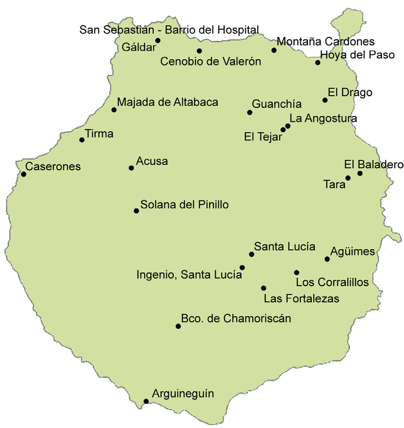
Fig. 3.14. Mapa de Gran Canaria con indicación de procedencia de las pintaderas de barro cocido de El Museo Canario
Notas al capítulo 3
-
En el siglo XIX se asiste en Europa, y particularmente en Francia, al impulso científico de los trabajos prehistóricos, muestra de lo cual son publicaciones como las de Mortillet o Boucher de Perthes, cuyas periodizaciones de la prehistoria francesa fueron ampliamente aceptadas y aplicadas en España, y ejercieron una especial influencia en investigadores canarios como G. Chil y Naranjo.
-
Tales sistemas de ingresos estaban perfectamente estipulados, hasta el punto de contemplarse, en los capítulos de Presupuestos y de Gastos de la institución, los conceptos “Adquisiciones” y “Exploraciones y rebuscas”.
-
Estas circunstancias tal vez no fueran sino el reflejo de una particular manera de aprehender el material arqueológico como elementos “autónomos”, capaces de dar información por sí solos, quedando en un segundo plano el sitio arqueológico en el que era documentado y por tanto cualquier información relativa a las condiciones de su hallazgo.
-
Antonio Pérez efectuó diversas actividades de reconocimiento arqueológico en la comarca de Gáldar, llevado por su interés en el pasado aborigen (J. Batllori, 1900).
-
Nombrado corresponsal en Gáldar en Junta Directiva de 2 de mayo de 1881 por sus donativos al museo (AMC/AMC LAJDMC n.º 1, p. 141).
-
Dado lo temprano de la fecha de ingreso de estas dos piezas, puede servirnos la publicación de René Verneau sobre las pintaderas de Gran Canaria (1883). En ella el autor ofrece una representación gráfica de algunas de las matrices que en esos momentos se encontraban entre los fondos del museo, con indicación de la procedencia. Cotejando esos datos con las descripciones morfológicas que de las pintaderas donadas por Francisco Rodríguez se recogen en algunos documentos administrativos de la institución, podría pensarse que tal vez la pieza completa de mayo de 1880 se corresponda con alguna de las registradas hoy con los números 3108 y 3118. En cuanto al fragmento, según el Catálogo de pintaderas de la década de 1980 (AMC/AMC 1251) se correspondería con el registrado hoy con el número 3157.
-
Miguel Maffiotte era socio corresponsal de El Museo Canario en La Laguna (trienio de 1905 a 1907) (El Museo Canario, 1904-1905: 82), así como miembro (académico de número) del Gabinete Científico de Santa Cruz de Tenerife (L. Diego, 1994).
-
Bibliotecario de El Museo Canario.
-
Un ejemplo son las visitas realizadas por Gregorio Chil, que no estaban dentro de las exploraciones organizadas desde el museo. En su libro Estudios históricos, climatológicos y patológicos de las islas Canarias señala lo siguiente: “He visto en aquella villa varias y hermosas cuevas, teniendo que entrar en algunas arrastrándome, y me ha sorprendido luego su gran extensión y el gusto exquisito de los trabajos en ellas practicados. Yo creo que si se hiciesen excavaciones con los métodos de exploración que poseemos, se podrían encontrar muchos objetos que enriquecerían la historia de las islas. (...) Así mismo examiné lo que llaman allí la audiencia de los canarios, que no es otra cosa que una porción de malas cuevas abiertas alrededor de un patio redondo, con salidas al mismo” (2006: 220).
-
“El Sr. Chil hizo manifestación a la junta de que debe procurarse averiguar la importancia y valor que tengan objetos encontrados en Gáldar, por exploradores de aquella villa y cuyos objetos pertenecieron a los primitivos habitantes de esta isla, pues pudiera ser conveniente su adquisición, antes que personas extrañas nos priven de ellas para enriquecer museos extranjeros. Se acordó: pasar oficio al Dr. Dn. Enrique Blanco, nuestro socio corresponsal en aquella villa, interesándole para que por los medios que estime procedentes haga las averiguaciones oportunas sobre los tales objetos, su autenticidad, importancia científica, y su valor aproximado apreciando esa misma importancia” (AMC/AMC LAJDMC n.º 2, sesión de 24-II-1897, pp. 20-21).
-
“El Sr. Chil hizo manifestación de que en poder de algunos individuos de la villa de Gáldar, se encontraba gran cantidad de antiguas jarras canarias, preciosas pintaderas y una colección riquísima de objetos pertenecientes a los indígenas que complementarían, de seguro, la parte antropológica de nuestro museo, y expresando el Sr. Chil que podrían adquirirse todos esos objetos por la suma de 3750 pesetas (...)” (AMC/AMC LAJDMC n.º 1, sesión de 1-VII-1891, pp. 339-340).
-
No sabemos si en relación o no con dichos hallazgos está la descripción que Amaranto Martínez de Escobar hace en 1900 de una cueva en Gáldar, con presencia de “letreros o figuras talladas en la propia roca”, y en la que se documenta “un esqueleto humano, cuyo cráneo se hallaba colocado entre dos piernas, junto al costado del Poniente, izquierda entrando, y en el suelo vasijos diversos, pintaderas, agujas de hueso y otros útiles que hoy figuran en nuestro Museo” (1900: 377).
-
La conservación de estos materiales se debe al aviso que el hijo del propietario de los terrenos –Francisco Herrera– da a los trabajadores para que procedan a la salvaguarda de los mismos. Este hecho muestra, sin duda, el interés y la preocupación que un sector de la población grancanaria, no necesariamente vinculado con los ámbitos científicos, empieza a sentir por las manifestaciones del pasado aborigen.
-
Domingo José Navarro fue el primer presidente de la Sociedad Científica El Museo Canario.
-
Agustín Millares Torres fue socio fundador de El Museo Canario.
-
Concretamente, en dicho libro de actas de la Junta Directiva se indica su hallazgo en el “Valle de Tirajana”.
-
Esposa de René Verneau.
-
El valle de Tirajana debió de ser un área densamente ocupada a juzgar por la existencia de importantes poblados como el de Tunte, el ubicado en la Fortaleza Grande y el de la Fortaleza Chica, además de otros yacimientos arqueológicos.
-
Es posible que se trate del nieto de Francisco María de León y Falcón (F. Fernández, 1952-1967) –este último destacado en el ámbito militar y político insular de la primera mitad del siglo XIX (J. Domínguez, C. Moreno y C. Ginés, 2005)–, funcionario de Hacienda, si bien desconocemos la relación que tenía con la institución museística.
-
La trascripción de alguno de los documentos generados a raíz de la compra de material arqueológico ilustra perfectamente la concepción que se tenía de estas evidencias a fines del siglo XIX. Así, el 15 de marzo de 1886, Francisco M. de León Falcón vende al museo por 245 pesetas “ochenta cráneos completos, varios pedazos de momias, siete jarros entre ellos algunos completos, tres pintaderas y seis sacos de huesos en buen estado sacados de las cuevas de los canarios” (AMC/AMC 12).
-
También el hermano de Fernando del Castillo, Juan del Castillo y Westerling, debió de poseer una colección de materiales arqueológicos, parte al menos de la cual ingresa en el museo en algún momento comprendido entre la fundación de la institución (1879) y la muerte de Juan del Castillo (febrero de 1900), pues consta en el archivo de El Museo Canario una relación de “Objetos de los Guanches, enviados por el expositor Don Juan del Castillo y Westerling, encontrados todos en la isla de Gran Canaria” (AMC/AMC 76). Figuran en este inventario “dos sellos” que, como el resto de material que remite al museo, carecen de cualquier dato arqueológico.
-
Tal vez este enclave se corresponda con el poblado de Arguineguín, descrito en las crónicas e historias de la conquista.
-
En este sentido son sin duda ilustrativas las palabras de Sabino Berthelot cuando, al referirse al yacimiento, indica que las “habitaciones se hallan colocadas en varias filas alrededor de un gran circo, en medio del cual se ven las ruinas de un edificio más considerable que los otros (...). Grandes y sólidas vigas de laurel (barbusano), madera casi incorruptible cubren aún algunas de estas habitaciones, cuya forma es elíptica, presentando interiormente tres alcobas (...). El hogar se halla colocado cerca de la puerta de entrada (...). El pueblecito de Arguineguín podía contener cerca de 400 casas de la forma ya indicada” (1978: 104-105).
-
El propio Diego Ripoche señala que “por lo que respecta a los utensilios y armas que se dicen encontrados en las antiguas tumbas de la Isleta, es cuestión dudosa (...)” (D. Ripoche, 1880-1881: 341).
-
Recordemos que de esta última pieza no se conserva el original sino un vaciado.
-
Juan Padilla fue socio fundador de El Museo Canario (AMC/AMC LAJDMC n.º 1).
-
No sabemos por qué motivo M.A. Fariña y A. Tejera (1998) no incluyen en su catálogo la pintadera 3111, y en su lugar recogen la 3112, que no figura ni entre las reproducidas por Víctor Grau-Bassas en su misiva a J. Padilla ni en el grabado de Sabino Berthelot. Tal vez ello se deba a una confusión derivada de la similitud formal entre esas dos piezas.
-
Extrañamente, ninguna de estas piezas es recogida en la relación que, pocos años después de la realizada por Bethencourt, en 1887, elabora el catedrático de francés del Instituto de Canarias de La Laguna, Eugenio de Sainte-Marie. Similares discrepancias se producen con otros materiales como las momias, tal y como J.M. Alzola apuntó (1980). Así, mientras el catálogo de Sainte-Marie recoge cinco momias, Gregorio Chil, cuando visita la colección en abril de 1889, en un intento de compra en representación del museo, señala la existencia de unas “ocho o diez momias”, mientras Grau-Bassas señala en La Plata “cinco momias”. En opinión de Alzola, ello podría responder a que Eugenio de Sainte-Marie olvidara inventariar algún almacén del gabinete.
-
Desorribar: “Desmontar, allanar o igualar terrenos, especialmente para convertir laderas en plantíos” (C. Corrales, D. Corbellla y M.A. Álvarez, 1992: 367-368).
-
Diversas investigaciones desarrolladas en torno al lugar exacto del hallazgo indican que éste debió de producirse en lo que hoy se conoce como El Carril (A.M. Jiménez, septiembre-diciembre 1996).
-
Juan de Quesada y Déniz, licenciado en Derecho y periodista de profesión, fue admitido como socio de número de El Museo Canario en la sesión de la Junta Directiva de 26 de noviembre de 1879 (AMC/AMC LAJDMC n.º 1) y nombrado socio corresponsal en Madrid en sesión de octubre de 1881 (AMC/AMC LAJDMC n.º 1), ciudad en la que había fijado su residencia desde 1878. A través de los libros de actas de la Junta Directiva de El Museo Canario, sabemos que poseía una colección de historia natural que termina donando a la institución en 1880 (AMC/AMC LAJDMC n.º 1, sesión de 19-IV-1880).
-
En este sentido, uno de los materiales más ilustrativos son los recipientes cerámicos.
-
Así, por ejemplo, en una de esas relaciones (AMC/AMC 1236) llega a especificarse que una de dichas piezas, de morfología cuadrada, se encontraba restaurada. Si tenemos en cuenta que de todas las pintaderas procedentes de Tara solo la número 3104 presenta tales características, podría afirmarse con razonable certeza que fue ésa la donada al museo por Gregorio Chil como producto de las visitas particulares que realizó al yacimiento.
-
Concretamente nos referimos a las registradas con los números 3071, 3072, 3139, 3141 y 3210. Si consideramos que estas piezas, a excepción de la 3071, no fueron incorporadas por Pérez de Barradas en el catálogo que elabora entre 1938 y 1939, y que sí aparecen registradas (con la salvedad de la 3210) en el catálogo de pintaderas elaborado por el museo en la década de 1980 (AMC/AMC 1251), cabría suponer que debieron de entrar en ese intervalo de tiempo. En el caso de la 3071, aparece ya reproducida en una placa fotográfica de entre 1936 y 1940 (AMC-FFTM-1863), por lo que su ingreso en la institución tuvo que tener lugar durante o antes de dicho intervalo de fechas.
-
Diego Ripoche confeccionó los vaciados de un elevado número de pintaderas de diferentes procedencias: las americanas que formaban parte de la colección del Musée d’Ethnographie de París, así como algunas de Venezuela e Italia a partir de imágenes recogidas en diversas publicaciones (D. Ripoche, 1901).
-
En el museo se conservan en la actualidad 38 moldes, todos ellos pertenecientes a matrices que están reproducidas en las placas fotográficas realizadas en torno a 1925-1940. La cuantía de moldes debió de ser bastante superior a la que hoy se conserva, pues Diego Ripoche señala que el número de pintaderas conocidas a fecha de 1901 era de “un centenar” (1901: 105), y que “la mayor parte de las pintaderas canarias han sido vaciadas o modeladas por mí” (p. 105).
-
La salida de vaciados de pintaderas se puede rastrear también avanzado el siglo XX, como la realizada con ocasión de la creación, en la posguerra, del Seminario de Historia Primitiva del Hombre de la Facultad de Filosofía y Letras de Madrid. Este envío de vaciados tenía por objeto enriquecer las colecciones creadas “para uso y formación etnológica de los estudiantes” (J. Martínez Santa-Olalla, 1945: 102).
-
Esta situación es reflejo de las deficiencias en el ejercicio de una función museística como la documentación, hoy considerada esencial para la salvaguarda de toda la información existente en torno al objeto.
-
Para hacernos una idea de ello, décadas más tarde, estando ya en funcionamiento la Comisaría General de Excavaciones Arqueológicas, el arqueólogo británico O.G.S. Crawford cuestiona en su publicación de 1953, Archeology in the field, la metodología arqueológica empleada en España (M. Díaz y M. Ramírez, 2001).
-
José Moreno Naranjo fue socio de número de El Museo Canario desde 1889 (AMC/AMC LAJDMC n.º 1, sesión 1-V-1889), siendo nombrado socio protector en 1932 por sus frecuentes donaciones de material arqueológico, geológico y entomológico (AMC/AMC LAJDMC n.º 4, sesión 14-X-1932).
-
Juan del Río Ayala fue vocal de El Museo Canario en el año 1933, dimitiendo del cargo en diciembre del mismo año. Participó en diversas labores arqueológicas organizadas desde El Museo Canario, como las exploraciones a Acusa, La Angostura o Valle de Agaete entre otras.
-
José Naranjo Suárez fue “Ayudante” (AMC/AMC LAJDMC n.º 5, sesión 12-XI-1932) y “Auxiliar temporero del gabinete de preparaciones” de El Museo Canario (AMC/AMC LAJDMC n.º 5, sesión 17-VIII-1933), hasta que en 1940 es nombrado “Oficial preparador de El Museo” (AMC/AMC LAJDMC n.º 6, sesión 20-VIII-1940). Participó en algunas de las exploraciones arqueológicas realizadas por el establecimiento en la década de los 30, como la efectuada al Valle de Agaete en 1934, e incluso aparece dirigiendo las excavaciones que esta institución protagoniza en el enclave de El Agujero (AMC/AMC LAJDMC, n.º 5, sesión de 26-I-1935).
-
Por las actas de la Junta Directiva de El Museo Canario sabemos que estas mismas personas son protagonistas de buena parte de las labores arqueológicas que por esas fechas realiza el museo, como las exploraciones en 1934 del Valle de Agaete (AMC/AMC LAJDMC, n.º 5, sesión de 25-IV-1934), de Acusa (sesión de 20-XI-1934), o las excavaciones que esta institución protagoniza en el mismo año en el enclave de El Agujero (sesión de 26-I-1935).
-
Prueba de ello es que prácticamente hasta la década de 1970, en ninguna de las publicaciones en las que se abordan intervenciones arqueológicas se hace alusión a los métodos de excavación empleados, ofreciéndose tan solo la descripción física de la cueva o estructura que acoge el depósito y las características formales de los materiales documentados.
-
“La Junta resuelve para subvenir a los gastos que originase, abrir una inscripción entre los socios y abonar la cantidad que pueda faltar con cargo a lo presupuestado para esas atenciones” (AMC/AMC LAJDMC n.º 5, sesión de 17-III-1936).
-
El topónimo de Acusa como poblado aborigen aparece recogido en las crónicas de la conquista. Por ejemplo, López Ulloa señala al respecto que “Distante deste poco espacio [de Tejeda] están otros dos lugares que llaman Acusa y Artenara, sufragáneos del beneficio de Gáldar” (F. Morales, 2008: 321).
-
Entre los núcleos trogloditas identificados en el Plan especial de Protección, Conservación y Restauración del Patrimonio Arqueológico de la Cuenca de Tejeda (AMC/AMC 1637) se encuentran los de Fortamaga-El Hornilllo en la fachada S-SO, con más de treinta cuevas de habitación y almacenamiento; la Candelaria, con una veintena de cavidades y Acusa Seca-El Álamo en la fachada E-SE, para el que se contabilizan hasta 40 cuevas.
-
Las dataciones fueron encargadas en 1957 por la Junta Directiva de El Museo Canario al profesor Dr. Hl. De Vries, del Natuurkundig Laboratorium der Rijks-Universiteit te Groningen (Holanda), junto con muestras procedentes de otros yacimientos. El objetivo era, según Miguel Fusté (1958-1959), poder aclarar las hipótesis que en esas fechas se planteaban en torno al modelo de poblamiento de la isla.
-
Desde sus comienzos, la sociedad científica contó con los servicios de fotógrafos profesionales como Luis Ojeda Pérez o Teodoro Maisch, siendo a este último a quien se atribuyen las imágenes de las pintaderas. Los objetivos de este servicio quedan perfectamente recogidos en las actas de Junta Directiva de la institución, cuando “El Dr. Chil hace presente a la Junta la conveniencia de nombrar un fotógrafo de El Museo Canario, no solo para dar a conocer por medio de fotografías los objetos de mérito reconocido que encierran nuestros Gabinetes, sino para formar un precioso álbum propiedad del Establecimiento. Aceptada desde luego la proposición, indicó al efecto al conocido y reputado fotógrafo D. Luis Ojeda Pérez; quien fue aceptado desde luego, acordándose se le haga saber oficialmente.” (AMC/AMC LAJDMC n.º 1, sesión 3-VI-1889, f. 295).
-
N.ºs de inventario 3033 a 3037, 3039, 3041 a 3045, 3047, 3048, 3053, 3054, 3057, 3063, 3065 a 3067, 3070, 3075 a 3079, 3081, 3085, 3086, 3088, 3095, 3098, 3100, 3101, 3106, 3109, 3110, 3112, 3113, 3115 a 3117, 3119, 3121, 3125 a 3128, 3134 a 3138, 3143, 3144, 3147, 3149 a 3156, 3160, 3163, 3165, 3166, 3168, 3173, 3176, 3177, 3180 a 3183, 3185 a 3187, 3189, 3209, 3212, 3213, 3215/3218, 3216, 3217, 3222, 3224, 3227 y 3229.
-
Un ejemplo de ello es el caso de las pintaderas n.º 3093, 3092, 3094, 3097 y 3102, ya que la única información existente hoy sobre ellas es la proporcionada por la relación de Pérez de Barradas, que las hace proceder de Agüimes en el primer caso, y las restantes como “posiblemente de Agüimes”. Desconocemos cuándo se produce la entrada de estas piezas y el yacimiento concreto del que fueron recuperadas, aunque si consideramos que las únicas referencias conservadas sobre hallazgos arqueológicos en dicho entorno se corresponden con el ya descrito a fines del siglo XIX por V. Grau-Bassas, tal vez entonces estas piezas pudieran estar relacionadas con dicho descubrimiento.
-
Este problema no es privativo de las pintaderas, sino que hay que hacerlo extensivo al resto de materiales recopilados hasta ese entonces. Una buena muestra de ello es la siguiente nota que José Pérez de Barradas introduce al comienzo del catálogo: “Cuando no se menciona procedencia es que no hay indicación alguna (...)” (1944: 2).
-
Esta situación no es exclusiva del archipiélago. Sumamente ilustrativa resultan las palabras de J. Estévez y A. Vila (2006) cuando, al referirse a la arqueología de la España franquista, señalan: “El encallamiento en la teoría de los años cuarenta y cincuenta estuvo acompañado también de un estancamiento, si no de un retroceso, en lo referente a técnicas de excavación, que no se pusieron a nivel europeo hasta finales de los sesenta (...). Igual que en esas excavaciones de los años de posguerra, los cuadernos de campo siguieron estando llenos de interpretaciones subjetivas, faltaban plantas, estratigrafías, mapas de distribución” (p. 92).
-
Parte de esta identificación ha sido posible a partir de la relación de yacimientos arqueológicos que explora y estudia entre 1946 y 1951, publicada en la revista Faycán de 1952, en la que figura una escueta referencia a esta intervención y se ofrece la imagen de algunos de los materiales recuperados, entre ellos tres de las pintaderas, de las cuales una no se encuentra en la colección del museo.
-
También hace referencia a este yacimiento y a sus trabajos, con el hallazgo de pintaderas junto con un ídolo femenino, en Falange, 23 de julio de 1950.
-
La información de esta intervención arqueológica nunca llegó a publicarse, conociéndose a través de un texto mecanografiado que no ofrece imágenes de las matrices halladas. Es a partir de la descripción escrita elaborada por el autor y de la información proporcionada por la signatura de las piezas como se ha podido llevar a cabo la identificación de estos hallazgos. Sin embargo, para una de las pintaderas no ha sido posible establecer tal correspondencia.
-
Tal vez este hallazgo sea el mismo que el referido por el comisario local en un artículo publicado con anterioridad, en el que señala la aparición de una pintadera en “una sepultura de Telde” (1944: 23).
-
La presencia del director general de Bellas Artes, José Miguel Alzola, entre los miembros de la directiva de El Museo Canario es un elemento de especial relevancia en el protagonismo que en estos momentos tiene la institución en el desarrollo de diversas actividades arqueológicas. La consulta de las actas de la Junta Directiva del museo en estos años pone de manifiesto la preocupación no solo por el desarrollo de excavaciones arqueológicas sino también por la conservación y protección de los yacimientos conocidos.
-
“Se acuerda librar las siguientes cantidades: para la de Guayadeque, 60.000 pesetas a favor del profesor Mauro Hernández Pérez; 25.000 para la de Guayedra, a favor de don Celso Martín de Guzmán y 30.000 para sufragar los gastos de planos y dibujos de cerámica de la excavación de Jinámar” (AMC/AMC LAJDMC, n.º 9, sesión del 3-IX-1976).
-
En cierta medida, este sesgo puede explicarse por el interés, vigente aún, de identificar a través del registro arqueológico la existencia de grupos cultural y racialmente diferenciados en la prehistoria de Gran Canaria: aquél que desarrolla su vida en cuevas y el que construye estructuras de piedra para vivir y depositar a sus muertos. En este sentido, el valle de Guayedra proporciona a C. Martín una fuente de estudio para tales planteamientos. Esta podría ser una de las razones que llevan al arqueólogo a poner el acento en los materiales que identifica en uno y otro ambiente, como recursos desde los que justificar la existencia de diferentes “patrones culturales” o grupos étnicos, dejando de lado otros datos informativos que hoy por hoy se consideran imprescindibles para la reconstrucción histórica de estas poblaciones. De ahí que en muchos casos encontremos que interesa por encima de cualquier otro aspecto, ofrecer una relación comparativa de los materiales recuperados en contextos trogloditas de una parte y de estructuras de superficie de otra.
-
Las dataciones radiocarbónicas fueron realizadas en el Laboratorio de Geocronología “Rocasolano” (C. Martín, 1982).
-
Además de un tercer túmulo ubicado en un área próxima conocida como Lomo Granados.
-
En contraste con lo señalado en dicho inventario, las publicaciones elaboradas en torno a la excavación del túmulo de Los Caserones (M. García, 1977-1979; M.ª C. Jiménez y M.ª C. del Arco, 1977-1979) no hacen referencia en ningún caso a la presencia de sellos entre los hallazgos efectuados tanto en los niveles superficiales como en aquéllos propiamente arqueológicos.
-
Así, la única información que ofrecen de tales pintaderas se reduce a que la n.º 30752 fue hallada en “Los Caserones. Aldea de San Nicolás. Campaña de excavaciones 1978, zona 2”; la n.º 30750 en “Los Caserones. Aldea de San Nicolás. Zona 1, hallazgo de superficie, campaña 1977”; la n.º 30751 en “Los Caserones. Aldea de San Nicolás. Hallazgo de superficie, campaña 1977”; y finalmente la 30753 en “Aldea de San Nicolás. Campaña de excavaciones 1978”.
-
De cualquiera de las maneras, según el inventario de materiales de la excavación del túmulo 1 de Los Caserones, las pintaderas supuestamente halladas en él corresponden al nivel 1, definido por las autoras como “una capa de derrumbe de piedras procedente de la estructura constructiva del monumento”, en el cual se constata “la presencia de unos restos que evidencian el asentamiento de gentes más modernas, posteriores, extrañas, y que parecen desconocer el significado real de la construcción. Y ello lo constatamos en base al hallazgo, en este nivel de derrumbe, de un conchero, asentado sobre una estructura funeraria (...) así como al hallazgo de cinco monedas de igual filiación a las localizadas en la casa 3 de la misma zona, donde ocupan también niveles superiores correspondientes a éste del túmulo” (M.ª C. Jiménez y M.ª C. del Arco, 1977-1979: 51). De acuerdo con ello, las dos pintaderas halladas en este ámbito tumular podrían no estar directamente vinculadas a dicha estructura.
-
Las dataciones de las dos viviendas fueron, respectivamente, 1890+150 AP (250 cal. a.C.-450 cal. d.C.) y 1080+110 AP (680-1170 cal. d.C.). La datación del túmulo de Lomo Granados dio un resultado de 1700+ 100 AP (110-560 cal d.C.) y el de Los Caserones 1140+ 100 AP (660-1050 cal. d.C.).
-
René Verneau también alude indirectamente a este conjunto arqueológico cuando, al hacer referencia a las formas de sepultura, indica la existencia de “inhumación en hoyos excavados en plena tierra; por ejemplo D. Ripoche los constató en Las Huesas” (2005: 95).
-
Como se apuntó en páginas anteriores, desde 1932 José Naranjo ya se encontraba vinculado laboralmente a El Museo Canario como ayudante y auxiliar preparador (AMC/AMC LAJDMC n.º 4, sesión 12-XI-1932).
-
Tal y como apunta Belén Martínez Díaz, la Ley de Patrimonio Histórico Español de junio de 1985 fue un claro reflejo del inicio de “una nueva etapa para la protección del Patrimonio Arqueológico y para el desarrollo de la Arqueología en nuestro país” (2002: 224).
-
Si bien es en la década de 1970 cuando se elaboran las primeras cartas arqueológicas desde el Departamento de Arqueología de la Universidad de La Laguna, éstas no tenían como prioridad servir de instrumento de protección del patrimonio, sino que estaban preferentemente orientadas a profundizar en el conocimiento del pasado aborigen.
-
Esas características han llevado a sugerir un significado cultual para la Cueva de las Estrellas.
-
En este asentamiento aborigen de Las Casillas se construyó la casa de uno de los guardas de Tirma. Esta y otras obras levantadas a su alrededor afectaron gravemente al yacimiento. En una visita que en 1985 realiza a la zona el entonces inspector de patrimonio del Gobierno de Canarias, encontró que la familia del guarda conservaba una serie de ídolos y pintaderas hallados por ellos durante los procesos de remoción de tierra (Proyectos Patrimoniales, 2001). Desconocemos si estas piezas llegaron a entrar en el museo. De ser así, algunas de las pintaderas que en la colección de esta institución proceden de Las Casillas de Tirma corresponderían a esa serie. Éste podría ser el caso de las registradas con los números 2823 y 2824, ya que en el inventario de las mismas se recoge como fecha de entrada el año 1986.
-
La fecha de ingreso puede precisarse más si acudimos a la memoria de actividades de El Museo Canario del año 1982, donde se indica la elaboración del inventario de materiales “que, procedentes en su mayor parte de excavaciones realizadas a partir de los años 30, se guardan en los depósitos de nuestro museo”. Entre los inventariados se encontraban la serie procedente de Casa Ayala (El Museo Canario, 1983). Por tanto, de acuerdo con lo arriba apuntado, podría situarse el ingreso de los materiales de Casa Ayala en el marco comprendido entre finales de los 70 (tras el inventario de Celso Martín) y primeros años de la década de los 80.
Throughout the pages that make up this chapter we shall attempt to reconstruct the history of each one of the pintaderas of fired clay from Gran Canaria that form part of the Archaeology Collection of El Museo Canario. On what dates they were incorporated into this institution, through which channels they reached it, or in what contexts they were located are some of the questions that this chapter seeks to address with a twofold purpose. On the one hand, that of trying to show how the ways of recovering the materials and the destinations given to them once exhumed have changed over time, reflecting the changes in archaeology and in the conception of the archaeological heritage; and on the other, that of trying to approach, where this is possible, the environments in which these pieces were found, as a means of facilitating the historical reconstruction of such objects. All the same, this does not mean that in this chapter explanatory proposals for the pintaderas are put forward; the aim is merely to compile whatever information may exist concerning their archaeological contextualisation.
3.1. THE ORIGINS OF THE PINTADERA COLLECTION
The initial shaping of the pintadera collection of El Museo Canario takes place from the very moment of the foundation of this scientific society in the late 19th century, and what is known today about a good part of these pieces cannot be disentangled from the history of the institution that houses them. By extension, it would not be rash to propose that knowing the history of the museum's collection of pintaderas amounts to delving into the path travelled by Canarian archaeology from its beginnings to the present day.
Between 1879 and 1901 a total of 124 pintaderas, coming from different points of the island's geography, became part of the holdings of the museum, which represents 58% of the pieces of this kind that the institution currently houses. It will thus be understood why the archaeological information we possess today on a prominent portion of the stamps is strongly conditioned by the ways of working of that time. The channels through which they were recovered and the qualifications of the protagonists of those undertakings conditioned, as we shall have occasion to see, the archaeological information associated with the pintaderas.
It is for all these reasons that we must begin the present study with the very milieu that spurred the foundation of El Museo Canario. The emergence of this institution at the end of the 19th century can only be understood under the aegis of a group of bourgeois extraction, devoted principally to the liberal professions, interested in fostering and enriching knowledge of the diverse aspects of Canarian culture in fields such as literature, the natural sciences, history and, very especially, the aboriginal past, an interest that can partly be situated within the search for a Canarian identity. Some of its members had been trained at French universities, coming into contact with the scientific and intellectual currents then developing in Europe. These connections were crucial for the inception and development of prehistoric research in the archipelago and, by extension, for the birth of the museum itself1. It is in this milieu that explorations and excavations begin to be carried out at various points of the island's geography, and the first publications on the aboriginal past based on archaeological evidence see the light.
Perhaps it is the preamble of the founding regulations of the Sociedad Científica El Museo Canario that best expresses this idea: "For some time now a truly instructive centre has been missed among us, where there might be gathered together for study (...) all those ancient objects that belonged to the indigenous inhabitants of our country and which reveal much to us of their ancient uses and customs and all that may relate to them (...). The realisation of this idea, the desire to display before the traveller and our fellow countrymen everything curious or interesting that our soil may contain, is the motive that has impelled some lovers of the sciences and of letters to draw up the present Regulations (...)" (1879).
That interest in assembling a broad sample of the legacy of the aboriginal populations for study and exhibition leads the scientific society to set in motion a series of measures for the formation of the collections. Thus, the entry of materials, and therefore of the pintaderas, into El Museo Canario from 1879 until well into the 20th century responded in essence to the three modalities that at that time defined the constitution of museum holdings, not only in our archipelago but also in the rest of the museum institutions of the country. These are: donations, purchases or acquisitions, and what at the time was designated by the name of "explorations and searches", led by members of El Museo Canario itself2.
In this way, between 1880 and 1900, the Libro de Registro de Entradas records that, through such channels, a total of 88 of these pieces — complete pintaderas or fragments — had entered the museum, coming from various points of the island (Agüimes, Arucas, Gáldar, San Nicolás de Tolentino, Teror and Tirajana). However, these abundant finds were affected by inventory and cataloguing systems that suffered from serious deficiencies, to the point that a part or the whole of the archaeological information known about them would come to be lost within a few years — information that was in itself scarce given the characteristics of the undertakings of the period. An illustrative example is the elaboration of different inventories that succeeded one another over time, assigning new inventory numbers to one and the same material, numbers which, on various occasions, were either not recorded on the piece or were recorded by perishable means. The other great problem stemmed from the fact that the inventories frequently mentioned the municipality of origin of the object, but not the archaeological site or the characteristics of the archaeological space in which its recovery had taken place3. Thus, while in some cases this lack of information could be remedied by consulting the publication of the archaeological activities of which they were the product, in others the absence of any complementary data has prevented our knowing more than the municipality in which the piece was located. The logical consequence of all this has been none other than the impossibility, in many cases, of establishing to which pintaderas the inventories of those dates refer, with the result that today we count numerous matrices about which we know practically nothing (provenance, archaeological context, channel of entry, etc.). This explains why for an important number of them we cannot attribute their history.
Fig. 3.1. Façade of El Museo Canario (AMC-CFH-000552, ca. 1930)
3.1.1. Donations and purchases
Among the pintaderas that enter the scientific society by donation or acquisition in these dates of the late 19th century, those documented in Gáldar and Agüimes stand out for their quantity. And this may to a large extent be related to the fact that the historic towns were erected over the pre-Hispanic settlements that existed there — as various archaeological works carried out at the present time have brought to light —, a circumstance that favoured the finding, whether intentional or not, of archaeological sites.
Beginning with the case of Gáldar, the archaeological wealth of the area, with a high number of very accessible complexes, indeed facilitated and spurred the recovery of materials both on the part of persons linked to the museum and of private individuals, who in some cases donated their finds to the institution and in others formed important private collections. It must also be borne in mind that, alongside the finds derived from intentional searching, casual discoveries of sites among the inhabitants of the town were not infrequent. The agricultural character of the area entailed a habitual disturbance of the lands as well as the execution of hydraulic architecture works which supposed the discovery — but also the destruction — of some enclaves (see, for example, J. Batllori, 1900).
A clear reflection of all this are the frequent donations to El Museo Canario of aboriginal materials from Gáldar, among which the pintaderas were not lacking. According to the minutes of the Board of Directors of El Museo Canario of 27 December 1886, the then director of that institution, Gregorio Chil y Naranjo, donates a pintadera of that provenance. In March 1890 the donation of three others is recorded on the part of the conservator Víctor Grau-Bassas y Mas — one of them being a fragment — (AMC/AMC 1320). And so the donations of pintaderas from Gáldar on the part of persons linked in one way or another to the scientific society follow one another: Antonio Pérez Molina4, one pintadera "found in a cave of Gáldar", the date of entry into the museum being given as 26 November 1899 (El Museo Canario, 1900: 27; AMC/AMC 1219; 1340); Francisco Rodríguez Reyes5, three pintaderas and a fragment, the dates of entry of one of the complete pieces and of the fragment being May of 1880 and 20 July 1882 respectively6, the provenance of the latter being specified as "caves of Gáldar" (AMC/AMC 1219; 1320; 1376); Pablo Padilla, two pintaderas on 1 July 1884 (AMC/AMC 1219; 1320; 1376); Miguel Maffiotte y La Roche7, one pintadera on 21 February 1887 (AMC/AMC 1219; 1320; 1376); and, finally, according to the Board of Directors of 26 January 1937, Simón Benítez Padilla8 would donate another pintadera coming from Gáldar. To all this must be added the sale that a private individual, Francisco Suárez Rivero, makes to the museum on 21 August 1885 of a lot of archaeological materials of diverse nature and provenance, in which were included "two pintaderas found in Gáldar", their cost being 30 pesetas (AMC/AMC 12).
The fact is that, except for the particular case of the piece recovered by Antonio Pérez in a cave, no datum whatsoever exists on the characteristics of the contexts of the remaining finds. We know, from various publications, that some of the donors had carried out explorations on their own account in the surroundings of Gáldar, but in no case do these record allusions to the recovery of pintaderas9.
The archaeological characteristics of the town of Gáldar also facilitated the formation of some private collections, whose existence was brought to the knowledge of El Museo Canario. A consultation of the minutes of the Board of Directors corresponding to the final moments of the 19th century will allow us to observe the concern of the institution to obtain those series, adducing in some cases the fear that they might end up passing into foreign hands10. Finally two of them would be acquired by the museum. Thus, on 11 February 1892 the purchase is effected, for 3750 pesetas, of an important number of archaeological materials among which figured 20 "complete clay pintaderas" and 20 "incomplete" ones11, among the former being found one "with a different design at each end". (AMC/AMC 31). Since the museum houses only two pintaderas that fulfil such a characteristic, and since one of them enters in the year 1999, it must be the second, inventoried with the no. 3128, that formed part of that lot of acquired materials. The only datum known about the find of those remains is the one provided by the secretary of the society, Amaranto Martínez de Escobar, who communicates to the board that he "had visited, in the very jurisdiction of Gáldar, several caves of the ancient Canarians of considerable interest, where the greater part of the acquired objects had been found" (AMC/AMC LAJDMC no. 1, session of 13-II-1892, p. 354)12.
The other purchase was carried out in 1897, after a report by the corresponding member of the society in Gáldar, Enrique Blanco, indicating the existence in that town of two collectors distinguished by the important quantity of pieces they had assembled: Antonio Pérez Molina and Manuel Romero y Caballero. The materials they possessed — among which were found "13 clay pintaderas" according to the inventory recorded in the minutes of the Board of Directors, session of 23 December 1897 — finally passed to the holdings of the museum for the sum of 875 pesetas.
With the available information the difficulties will be understood that exist for identifying, in the present collection, the matrices that entered the museum through the channels described. Perhaps one of them corresponds to the one registered at present with the number 3129, since it too comes from Gáldar and is reproduced on a photographic plate made around 1925-1940 (AMC-FFTM-1428) and in the publication of René Verneau of 1883 devoted to the pintaderas. On the other hand, the number of stamps that the institution at present possesses originating from Gáldar is far inferior to that which, according to the administrative documentation of the late 19th century, came to form part of its holdings. It may be asked, in this connection, whether perhaps some pieces for which no data are preserved today might correspond to those that entered at those dates coming from Gáldar. The changes of inventory numbers undergone by the materials over time and the disregard for their documentary registration make any conclusion in that sense impossible.
Just as we pointed out above, one of the sources of entry of materials into the museum was provided by the rural and urban works that brought archaeological sites to light. Up to these moments of the late 19th century, the aboriginal evidences thus uncovered were left destroyed if indeed they did not pass before that into the hands of private collectors. The minutes of the Board of Directors of the society reflect a clear concern over this type of situation, against which measures are adopted such as the notices sent to the workers of public works and to some corresponding members in the municipalities, so that they would collect the archaeological objects that appeared in the course of the works and hand them over to the scientific institution (AMC/AMC LAJDMC no. 1, session of 20-V-1884).
That initiative, while it represents an important step in the preservation of archaeological materials, on the other hand brings to light one of the main problems that weighed down the historical knowledge of the aboriginal populations for a long time: the priority conferred on the object, upon which is placed the weight of the investigation of the past. The primacy given to the pieces, and especially to those of singular characteristics, leads to emancipating them from the archaeological context of which they formed part, which is what, as we understand today, confers upon them their historical meaning. All that mattered was that the materials emerged unscathed, regardless of the loss of the surroundings to which they were associated.
The fact is that the foundation of the museum meant that the concern for the conservation of the heritage vestiges began to take root in part of society. An example of this is the notice the institution receives, in August of 1881, about the find in Agüimes of a set of materials on the occasion of some improvement works on the agricultural lands owned by Juan Ignacio Herrera, situated "in the vicinity of the said town"13. In order to proceed to the acquisition of the discovered objects, the conservator Víctor Grau-Bassas and the official preparator Gabriel Garachico travel to this place, being handed a set of materials made up of "thirty seals or amulets of the most exquisite form, various clay vessels (...) a stone reel and various sharpened bones" found beside some "flat stones (slabs)" (V. Grau-Bassas, 1881: 358-359). The visual inspection that the conservator makes of the zone leads him to deduce that there existed no kind of architecture or cavity with which such evidences could be associated.
The location of those finds can perhaps be related to the aboriginal settlement recently identified in the subsoil of the present historic town centre, which must have constituted the aboriginal Agüimes to which the ethnohistorical sources allude. The excavations carried out in the zone (V. Alberto and J. Velasco, 2003; J. Velasco and V. Alberto, 2005) uncovered evidences that would be a reflection of an outstanding settlement in this setting.
With the date of 1 December 1881, the same owner of the lands of Agüimes where the described find had taken place donates, together with three ceramic vessels, one pintadera (AMC/AMC, 1219; 1320 and 1376). In the museum documentation where the entry of these pieces is recorded it is indicated that they originate from Agüimes, without further clarification, so that it is ignored whether they proceed from the same archaeological enclave from which the thirty pintaderas were exhumed.
In the same year — specifically on 15 July 1881 — the entry takes place of another pintadera from the hands of the founding member, and also treasurer of El Museo Canario, Juan Melián y Caballero. Of it all that is known is that it comes from the municipality of Agüimes (AMC/AMC 1219; 1320 and 1376).
As we have insisted, on most occasions it proves impossible to relate the allusions to finds of matrices with the original piece. However, for the discovery described above, the publication of René Verneau of 1883 may perhaps shed some light, in which the author records the drawings of some of the pintaderas that at that time formed part of the Archaeology Collection. He states that the museum possessed at that moment a set of "42 pintaderas, of which 30 have been found 2 years ago in Agüimes, and the rest come from Gáldar and Tirajana" (p. 2). In accordance with this statement, it could be supposed that the drawings he records of some of the pintaderas, according to him coming from Agüimes, would correspond to those that appeared during the works on farmland to which we referred before, or to one of the two donated in the same year. In accordance with the illustrations the author offers, those pintaderas would be those registered at present with the numbers 3032, 3049, 3061, 3062, 3064, 3073, 3080, 3082, 3089, 3091, 3103, 3122, 3133, 3162, 3169, 3171, 3175, 3179 and 3208.
Fig. 3.2. Fragment of an inventory of archaeological materials of El Museo Canario prior to March of 1881, in which figure the four pintaderas coming from Tirajana (AMC/AMC 1211)
The administrative documentation generated by the scientific society in the dates that occupy us alludes to donations of pintaderas coming from other points of the island's geography, such as "Santa Lucía", Arguineguín, Tara or Tirajana. A diversity of origin that brings to light the intense collecting activity developed at the beginnings of prehistoric studies in Gran Canaria. Investigating the history of such entries will help not only to know better the existing information on the archaeological settings from which they proceed, but also to delve into the model of undertakings developed around the archaeological remains.
Thus, coming from Tirajana there are recorded, in diverse administrative documentation of the museum, seven pintaderas. Four of them are listed in what is probably the first inventory of archaeological materials of the scientific society (AMC/AMC 1211), prior to July of 1881. In it is made record of the existence, at those dates, of 4 "seals or amulets" found "in a cave of Tirajana". From the monograph that René Verneau publishes on the pintaderas in the year 1883, we know that an indeterminate number of those four matrices had been given as a gift to Gregorio Chil by Domingo José Navarro14.
As regards the remaining stamps of Tirajana, one was donated by Agustín Millares Torres15 in October of 1881 (AMC/AMC LAJDMC no. 1, session of 17-X-1881; AMC/AMC Oficios y Correspondencia 1881)16, two on the days 7 and 13 of October of 1886 by Pablo Padilla and Gregorio Chil respectively (in this latter case it was a fragment) (AMC/AMC 1376), and finally there is recorded the plaster cast of a fragment found in Santa Lucía de Tirajana, donated by Justina Rondot17 and registered in the museum on 20 April 1893.
The fact is that, among the matrices that at the indicated dates came to form part of the collection of the museum, only one appears at present as originating from Tirajana (inventory no. 3087). This same piece is reproduced by drawing by René Verneau in the study he undertakes on the pintaderas (1883), making it proceed from Santa Lucía de Tirajana.
Scant indeed is the archaeological information existing on these finds. The only datum provided in this respect is the one already referred to of the four pintaderas registered in the first inventory of the museum, in which they are made to proceed from "a cave of Tirajana" (AMC/AMC 1211). For the particular case of at least some of these four pieces, we can also turn to the aforementioned publication of René Verneau. Reflecting on the significance of the pintaderas, the author questions the religious interpretation defended by Chil, taking as elements of justification the contexts of the finds of the thirty pintaderas of Agüimes and of several of those of Tirajana. Thus, for these latter — which, as we recall, were given as a gift, according to the author, to Gregorio Chil by Domingo José Navarro — he states that "In this find [of Agüimes] nothing militates in favour of the opinion of Doctor Chil, and on the contrary it confirms that of Dr. Grau-Bassas, who believes that a pottery workshop must have been established there. What we have said applies also to the pintaderas of Tirajana given to Doctor Chil by D. José Navarro. The examination of the terrain where they have been found and the data communicated to D. Diego Ripoche cannot leave any doubt on this particular" (1883: 10). The fact is that, although he does not specify the context of the find, one could think, in accordance with those data, that perhaps a domestic environment was that to which such pieces would have to be ascribed, though always with the prudence demanded by the absence of any other documentation around their origin.
On the other hand, from various publications we know that Agustín Millares (1882) as well as René Verneau (1987: 187-189) and Gregorio Chil himself (2006: 211 and 240) carried out explorations on their own account in the valley of Tirajana. It is possible, then, that part of the donations of pintaderas of Tirajana enumerated above responds to such activities, although the absence of references to the interventions that brought those materials to light gives rise to a total ignorance of the characteristics and location of the finds. It will be understood that this informational poverty and the archaeological wealth of the zone18 make impossible any more precise approach to the possible contexts in which the pieces were documented.
Continuing with the entry of pintaderas into the museum, it must be pointed out that, with the date of 30 November 1889, the entry is recorded of one coming from La Aldea de San Nicolás, given as a gift by the agent of the Banco de España in Guía, José Tresguerras Melo, to the director of El Museo Canario, Gregorio Chil. According to the indication of the donor, it was "found in some majanos" (AMC/AMC LAJDMC no. 1, session of 3-XII-1889; AMC/AMC 3841). It could be proposed that the reference "Aldea de San Nicolás" corresponds to the site today known as Caserones, situated on the right margin of the barranco of the same name, in the area of its mouth. An association that does not seem so far-fetched if we consider that at the date of the donation this enclave had been explored and described by some researchers such as Víctor Grau-Bassas (1980) or René Verneau (1987), who referred to it as a village in La Aldea, without any other denomination. Were this attribution true, the find of the pintadera would have to be added to those documented in the excavations of the 1970s and 1980s, to which reference will be made later on.
The archaeological site of Guanchía (Teror) was also the object of explorations at these dates of the end of the 19th century. Specifically it would be Víctor Grau-Bassas who studied the enclave, collecting a skull, a mortar handstone and a pintadera which to this day remains unidentified. The only data we dispose of for this matrix are those provided by the inventories of the period (AMC/AMC 1209; 1376), in which it is indicated that, with the date of 1 July 1887, Víctor Grau-Bassas donates to the museum a square specimen coming from Guanchía. It will thus be understood why, with the available information, the use or uses of the space to which the piece was linked cannot be established. It can only be pointed out that for the settlement of Guanchía, situated on the left margin of the barranco of Teror, some twenty artificial caves of domestic character are recognised at the present time. One could think that, given the collection of a skull on the part of the aforementioned author in his expedition to the complex, there must have existed in the proximity of the habitat area a funerary area, not documented at the present time.
With absolute ignorance of the provenance, in the first years of the 20th century takes place the donation of one pintadera (inventory no. 3130) on the part of Nicolás Díaz-Saavedra, captain adjutant of the garrison and full member of El Museo Canario between 1903 and 1907 (J. Pérez de Barradas, 1944: 57).
Probably one of the most representative examples of the value conferred on the object as a source of information per se, apart from the archaeological environment in which it was inscribed, is the carrying out of purchases of materials for which practically no datum whatsoever is recorded on their provenance or circumstances of find. Of some of these acquisitions made by the museum the receipts are preserved, through which we know of the entry of at least three lots of aboriginal materials in which pintaderas were included. Specifically on the days 3 and 15 of March and 26 April of the year 1886, Agustín del Castillo — founding member of El Museo Canario and lawyer by profession —, Francisco M. de León Falcón19 and Miguel Padilla y Moreno — treasurer of El Museo Canario — sell respectively to the museum 4, 3 and 7 pintaderas together with other archaeological records of diverse nature. The only allusion to the provenance of those series was their find in "the caves of the Canarians" (AMC/AMC 12)20. Needless to say, with the available information the identification of these matrices among the series that the museum preserves to this day proves impossible.
Fig. 3.3. Receipt of 830 pesetas for the purchase of archaeological materials that El Museo Canario makes from Miguel Pardilla y Moreno in the year 1887. Among the abundant acquired material seven pintaderas are recorded. Note that the only reference to the provenance of this lot of objects is that of "cuevas de los Canarios" (AMC/AMC 12)
The value conferred on the material isolated from any archaeological context was determined, in part, by its consideration as an indicator of the state of cultural evolution in which the first human groups that occupied the islands found themselves and of their internal development, taking as a basis the periodisation elaborated for the French prehistory (for example, G. Chil, 1876-1891). A way of addressing the past that must be related, in part, to the French archaeology of the moment, with which the Canaries maintained close ties. In this way it is explained how from the very heart of the museum, which concentrated the principal personalities of Canarian prehistoric research of the moment, the entry of materials was fostered regardless of the measures devised for it, since the object had sufficient standing in itself to inform about the characteristics of the society that had generated it and the different stages that defined its evolution, apart from the stratigraphic position, the relation with the rest of the materials and, in short, the environment in which such evidences had been deposited.
3.1.2. Collecting
One of the problems faced by the archaeological heritage at the end of the 19th century is the activity of the collectors. Indeed, it can be detected that a part of the prehistoric vestiges came to become the private property of certain persons, who even at times go so far as to offer their exhibition. Naturally, not all the remains were the object of the interest of these collectors, there existing a preference for those elements aesthetically attractive and well preserved, the pintaderas being found in the list of the desired pieces.
An example is the archaeological collection that the 5th Count of la Vega Grande de Guadalupe, Fernando del Castillo y Westerling, came to form. A member of El Museo Canario since 26 November 1879 (AMC/AMC LAJDMC no. 1, session of 26-XI-1879), he had assembled during his lifetime an important sample of pre-Hispanic material, entrusting to his daughters and son-in-law that after his death it be donated to the scientific society. Thus it is that on 20 April 1901 takes place the entry into the institution of a part of the collection, in which figured one pintadera "rectangular and elongated, with a broken handle. Its design (...) is a simple combination of tiny rhombi" (L. Millares, 1901: 12). Diverse documentation of the moment records the list of the donated objects, but, once again, the concrete place from which they were exhumed is ignored, for in making allusion to this aspect it is indicated that "the greater part of these objects were found in Arguineguín, some in the barranco de Guayadeque and one in Mogán" (L. Millares, 1901: 12). Not only does it prove impossible, therefore, to determine the place of the find, but also the very identification of the pintaderas.
With the handing over of this lot of materials it is specified that part of the collection of Fernando del Castillo still remained in the hands of relatives, its delivery to the museum being scheduled together with those other vestiges that his descendants might assemble as a result of the "searches projected by them in the extensive zone of Arguineguín, Mogán and Guayadeque" (1901: 10). The fact is that we do not know whether as the product of a new donation of what remained of the collection of the Count or as a result of the new searches undertaken by his relatives, on 7 December 1901 the holdings of the museum found themselves again enlarged with the donation, among other pieces, of six pintaderas on the part of Pedro del Castillo y Manrique de Lara, son-in-law of the late Count of la Vega Grande, lawyer and member of El Museo Canario. The diverse museum documentation in which those pieces are registered situates the origin of the same in "Arguineguín" (e.g. AMC/AMC 1236; 1349 and 3841)21.
In the second half of the 19th century researchers such as Sabino Berthelot or René Verneau (1987; 2005) applied the toponym of Arguineguín to the remains of a village documented by them in the surroundings of the mouth of the barranco of the same name22. It is probable, therefore, that the materials donated and registered as originating from "Arguineguín" proceeded from that archaeological enclave, already known and visited by those dates. Although hardly any testimonies of it remain today — as in the case of the site of El Pajar —, the descriptions made by the authors referred to and the archaeological interventions of the decades of 1970 and 1980 allow us to affirm that it must have been a settlement of considerable dimensions, made up of stone dwellings and a tumular necropolis23. The excavation of one of the dwelling structures in 1977 on the part of Mauro S. Hernández Pérez, professor of the University of Alicante, allowed the obtaining of a radiocarbon date from a sample of charcoal coming from a fire level that originated the abandonment of the house, which gave as a result 480 A.D. (1470±110 BP) (AMC/AMC 1642).
Another important collection of aboriginal material from diverse points of the island must have been possessed by Miguel Maffiotte y La Roche, as can be deduced from his donations to the museum and from some references of authors contemporary with him, such as Sabino Berthelot (1980). We know from this author that Miguel Maffiotte lends him "to copy them" three matrices, which, according to an anonymous publication of around 1909 (Historia de las islas Canarias), had been found by his father, Pedro Maffiotte Arocha. Berthelot indicates that "these three objects of the ceramic art, of the prehistoric period, hidden under a layer of dust and human remains, mixed with fragments of pottery, were taken out, the two first, from a grotto of Gran Canaria, and the other, the round seal, from one of the tumuli of the same island". This would be the first and one of the scarce references to the identification of pintaderas in a funerary context. In any case, we must point out that the provenances attributed by Sabino Berthelot to some of the archaeological pieces he records in his publications have been shown to be erroneous, reason for which the information he offers on the pintaderas of Miguel Maffiotte must be taken with caution24.
From the drawings offered by the French consul of the three matrices belonging to that collection (1980: engraving no. 12) we know that one of them does not form part at present of the holdings of El Museo Canario, of another the plaster cast registered with the number 3105 is preserved, and, finally, the circular one corresponds to number 3056. As to the locality of provenance, he states that Miguel Maffiotte designated these pieces as "seals of the guanartemes of Gáldar". In accordance with this, one would have to ask whether the expression employed was based on the provenance of the pieces or whether it was merely a way of defining them, relating them to the directing groups of aboriginal society, one of whose seats, at least in the epigonal times of this particular social formation, was found in Gáldar. The fact is that from this publication onward, the Gáldar origin of at least two of the pieces is maintained by other authors. René Verneau (1883) reproduces 3056, making it proceed from Gáldar. In the same manner, the anonymous publication to which we made mention before records the drawings published by Sabino Berthelot (1980 [1879]) of the matrices 3056 and 310525, attributing to them the same origin.
The collections of the Count of la Vega Grande or that of Miguel Maffiotte were not the only ones for which record exists of the presence of pintaderas. Another sample of materials that included them was that of Sebastián Pérez Yanes in Tenerife, better known as the Gabinete Casilda de Tacoronte.
After the death, in the fourth decade of the 19th century, of the collector Juan Meglioriny y Spínola, resident in the city of Santa Cruz de Tenerife, his heterogeneous collection — in which archaeological objects were included — is put up for sale, being bought in its majority by Sebastián Pérez. This man, better known as Sebastián Casilda, would go on enriching the original collection with archaeological materials of the islands, objects of natural sciences, etc., obtained by diverse means. Thus arises the Gabinete Casilda de Tacoronte, exhibited to the public on the ground floor of the house that served as residence to its owner. In the inventory of 1884 that Juan Bethencourt Alfonso makes of the holdings of this cabinet (M.A. Fariña, 1994), the existence of three pintaderas is registered, which had been given as a gift to the collector by a friend. At his death, in 1868, the holdings of the cabinet pass into the hands of who was his heir and executor, Diego Lebrun, who, after receiving different purchase offers, ends up selling them to the Gran Canarian resident in Argentina, Fernando Cerdeña. In 1889 took place, thus, the departure of the collection for Argentine lands. This transfer aroused the interest of who had been first conservator of El Museo Canario, Víctor Grau-Bassas, finding himself at those moments resident in La Plata, offering himself, together with Gabriel Garachico, former official preparator of the same institution, to organise the material for its new exhibition. A letter from Víctor Grau-Bassas to Juan Padilla26 reveals how three pintaderas of the collection are sent by him to Gran Canaria, entering the museum (AMC/Colección documental Víctor Grau-Bassas VIII/25).
Fig. 3.4. Fragment of the letter sent by V. Grau-Bassas from La Plata (Argentina) on 4 October 1889 to Juan Padilla, informing him of the sending to El Museo Canario of three pintaderas (AMC/VGB VIII/25)
Through the drawings that Víctor Grau-Bassas includes in the missive, we know that those three matrices are those preserved today in the scientific society with the registration numbers 3083, 3090 and 311127. However certain contradictions exist as to the sum of pintaderas that Sebastián Casilda originally possessed. One of the first references to them is offered by Sabino Berthelot, who, on the basis of the photographs that Diego Lebrun sends him — let us recall that he was the heir of the Casilda collection —, reproduces them in his publication of the year 1879 (1980: engraving no. 10), four matrices being able to be counted. With this quantity R. Verneau coincides, since, when addressing his study on the pintaderas (1883), he refers that in the possession of Diego Lebrun there existed four. In the same manner, the inventory that Juan Bethencourt makes of the materials exhibited in the Gabinete Casilda in 1884 — therefore with anteriority to the transfer of the same to Argentina — records the drawing of four pintaderas that he describes as "pintaderas of the Guanarteme of Gáldar" (M.A. Fariña, 1994: 543 and 553). Both in the illustrations of this author and in those of Berthelot, three of the seals coincide with those drawn by Grau-Bassas and preserved today in the museum, but the fourth has not been able to be identified with any of those that at present form the holdings of that scientific society28.
Smaller is the quantity of objects that end up in the hands of the priest of Arucas Pedro Marcelino Quintana Miranda. During the land-clearing works (desorriba)29 carried out "on one of the hillocks and slopes of the Hoya de San Juan adjoining the barranco de las vegas, where the important urban district of Montaña Cardones now rises" (AMC/SJS caja 69, carp. 3, doc. 1)30, stone structures and diverse archaeological material were uncovered: two idols, four pintaderas, fragments of ceramic vessels, a mortar and a stone vessel (S. Jiménez, 1945: 33). The remains were collected and handed over in the decade of 1910 to Pedro M. Quintana. In 1944 the provincial commissioner of archaeological excavations, Sebastián Jiménez Sánchez — on the occasion of the works of documentation of archaeological sites in the municipality of Arucas —, asks the cleric for information on possible casual finds in the zone. It is then that Pedro M. Quintana shows him the materials, the commissioner recording the known information around their find and the characteristics of the pieces (S. Jiménez, 1945 and 1946). After the death of the religious man, the materials would come to be deposited in El Museo Canario (F. Caballero and A. Castro, 2002). Of the four documented pintaderas, three are those registered today in the museum with the numbers 3123, 31045 and 3172, the whereabouts of the fourth being unknown.
Although without relation to El Museo Canario, worthy of being highlighted is the aboriginal series assembled by the Valencian military man Mariano Jornet Perales as a result of his transfer to Gran Canaria between June of 1916 and January of 1917, which has been studied and published by Mauro S. Hernández (2004). During his stay on the island, Mariano Jornet got hold of diverse archaeological material collected during the visit to an estate of Gáldar called "Las Cuevas". This toponym makes reference to a troglodyte complex of artificial making that forms part of the aboriginal village of Las Cruces, so that, perhaps, the finds could be related to this pre-Hispanic settlement. The collection, fundamentally made up of ceramic vessels and four pintaderas, would be donated by the military man himself in 1952 to the Museo de Prehistoria de la Diputación de Valencia, where it is still preserved today.
Finally, René Verneau (1883) indicates that in the possession of the lawyer and journalist Juan de Quesada y Déniz31 there existed two pintaderas. In the administrative documentation of the museum there is no record that these matrices ever came to be donated to the scientific society, their present fate being unknown.
3.1.3. "Explorations" and "searches"
Although a part of the pintaderas dealt with up to these lines are incorporated into the holdings of the museum as the product of donations, purchases, casual finds by way of works, or also of private explorations carried out with aims of research, others were the result of archaeological practices carried out within the institutional framework established with the creation of El Museo Canario.
It would be the director of the establishment, Gregorio Chil y Naranjo, who at the session of the Board of Directors of 26 March 1886 presented a project to regulate the archaeological activities, approved in the same assembly. This regulation, published in 1886, specified from the first article that the end of the practices was to enrich the museum with "objects belonging to the aborigines". It established moreover a distinction between the explorations and the searches, these latter being carried out in sites that had already been examined but which were susceptible of yielding new materials. And it fixed that the interventions had to be requested from the Board of Directors by persons who were members of the museum, upon prior delivery of a report on the archaeological potentiality of the chosen place. In the event of the undertaking being accepted, those responsible would have to hand over to the museum, once the exploration or search had been carried out, "an account of the exploration, a sketch of the place explored and its description (...) and making the most exact description of the objects found, of the place where they have been found and their provenance (...)". However, despite the required documentation, the pieces had a preferential value above the context of appearance, overlooking questions as important as the position of the object in the site, its relation with the rest of the materials and all those methodological questions that today are considered indispensable for the most truthful interpretation of the archaeological spaces and their consequent historical reconstruction. That priority is perfectly reflected not only in the publications of the interventions carried out at those dates, but also in article 5th of the regulation itself, in establishing that the "searches can only be effected by the personnel of the museum or individuals that belong to its Board of Directors, given that (...) they are the only ones who can have exact knowledge of the objects that exist in the cabinets; and it would be in a certain way useless or unnecessary to agglomerate a greater number of those that are possessed even up to an excessive quantity", which led in many cases to a selective collection of the evidences found.
Fig. 3.5. Cover of the Reglamento conforme al cual habrán de llevarse a efecto las exploraciones y rebuscas que se acuerden por la Junta Directiva de El Museo Canario (1886), proposed by G. Chil y Naranjo
This "archaeology of the object" is brought to evidence when we turn to the characteristics of the materials that between the end of the 19th and the beginning of the 20th century enter the museum institution: there is a clear primacy of those artefacts well preserved and complete, the fragments having a scant representation32.
In this framework, no interest whatsoever existed in making a record of the archaeological surfaces exposed during the excavation. Symptomatic of this reality is the scant graphic documentation that we find of the intervened sites, which, when it was made, was reduced to a sketch of the perimeter of the cave or structure excavated. This explains to a large extent that we are ignorant of the archaeological context of many of the pintaderas recovered at those dates, a clearer integration of the same in aboriginal society being made impossible and occasioning that for a long time they have been the object of subjective interpretations.
Following the protocol established by the regulation, Juan Padilla requests from the Board of Directors an exploration of the site of Tara, which is authorised at the session of 6 July 1887, the quantity of 250 pesetas being destined for its execution. The result of the works carried out in Tara by the mentioned author and Gregorio Chil was the find of "a pintadera, a complete vessel, both objects belonging to the indigenous inhabitants, two figures of clay, various fragments of hand mills and various others of jugs or vessels". All this was completed with a plan "of the village that existed there, following the remains and vestiges found there" (AMC/AMC LAJDMC no. 1, session of 28-XII-1887, p. 270). The book of entries of the museum from 1880 to 1900 records the entry of the pintadera with the date of September of 1887 (AMC/AMC 1376). Subsequently, Gregorio Chil would donate to the museum two other pintaderas, the product of the visits that, on his own account, he made to the site (one of which we know, from the archive of the museum, entered in November of 1888).
As the fruit of those expeditions is the elaboration of a physical description of the enclave on the part of Gregorio Chil, without any reference to the practice or not of archaeological excavations in the zone, reason for which we are ignorant whether the recovered materials were the result of that type of intervention or rather were collected on the surface. The site is defined by the physician as a dense group of dwellings, which stood out for their number, dimensions and complexity. Thus, for example, he points out how in many cases the caves, artificially excavated, were made up of a central room onto which others at the sides opened, just as can still be contemplated today. Forming part of this complex, the researcher points to the existence of a necropolis "on the ridges of the same name [Tara]" (G. Chil, 1899: 9), which to this day has not been able to be documented. Despite the descriptions he offers of the village, we do not dispose of contextual data on the find of the pintaderas, it being impossible, therefore, to determine to what concrete ends the spaces in which they were recovered were destined.
Due to the absence of descriptions of the three pintaderas gathered in these expeditions to the Telde complex, it proves very difficult to identify which of the nine coming from Tara that the museum possesses at present could respond to those documented at those dates. However, given that of those nine two belonged — as we shall have occasion to comment — to the collection of Pedro Hernández Benítez, and four figure neither in the photographic plates of archaeological materials of 1925-1940 nor in the inventory that of the holdings of the museum elaborated the archaeologist and anthropologist José Pérez de Barradas between 1938 and 1939, one could propose, by way of hypothesis, that it was two of the three that remain — which are indeed recorded in those sources — those donated by Gregorio Chil, and that they correspond to those registered today with the numbers 3104 and 3184. The morphology and the state of preservation of both coincide with the terse descriptions that the inventories of ceramic material of the late 19th and early 20th century (AMC/AMC 1209, 1210 and 1236) offer for the two pintaderas of Tara donated by Chil33.
We can affirm thus that the archaeological site of Tara has provided an outstanding number of pintaderas, although of part of them the date and circumstances of find are unknown34.
Everything pointed out up to here gives a perfect idea of the especial interest that in the second half of the 19th century arises for getting to know the prehistoric past of the island in a direct way. An interest that seeks to be satisfied through the searching out and visiting of sites and, very especially, through the collecting of the material record left by the aboriginal populations.
We see, then, how the archaeological explorations became something frequent from the end of the 19th century. In some cases they had an institutional character, since they were fostered and organised from El Museo Canario, and in others they were carried out on a personal basis by researchers at times and by amateurs at others, which gave rise in this last case to the formation of important private collections.
If we attend to who were the protagonists of those activities, we shall see that they were inscribed for the most part in a concrete segment of the Gran Canarian population: a local bourgeoisie devoted to liberal professions such as medicine or law, and which occupied, therefore, prominent posts in the society of the end of the 19th century. The desire to know the aboriginal history of the island led them to play the leading role in the searching out of archaeological enclaves and the collecting of materials representative of those societies. It will thus be understood that the training relative to fieldwork was very deficient.
Moreover, it must be borne in mind that, although diverse European researchers paid attention to Canarian prehistory, that interest was centred, most of the times, on the bioanthropological material — given the association that at that time is posed between the recent find of the man of Cro-Magnon and the aboriginal population. Doubtless this determined that the European participation in Canarian archaeology was not led by archaeologists properly speaking, but by researchers with an anthropological training to whom the incipient archaeological method mattered little or nothing.
Fig. 3.6. Display cases of El Museo Canario dedicated to the exhibition of ceramic vessels. Between the end of the 19th century and the beginning of the 20th, the greater part of the pieces that enter the institution are complete objects, like those shown in this image, the product of a selective collection of materials in the archaeological sites (AMC-FFTM-000414, ca. 1935)
3.1.4. The exchanges
The currents of thought of the moment, with an important weight of evolutionism and also of diffusionism, led to the exchange of archaeological materials between institutions being a habitual practice. With it was pursued the establishing of comparisons between the material evidences of different archaeological populations, from which to determine at what moment of the cultural evolution the studied human groups were to be situated, or else the reconstructing of the model of diffusion that explained the existence of certain manifestations. This also had its reflection in the very museographical conception of the period, in which the exhibition of objects of diverse provenance became the norm. It is in this framework that, between the end of the 19th century and the beginning of the 20th, El Museo Canario fosters the reception of archaeological materials from other geographical spheres, such as South America, Japan, etc., at the same time as is carried out the sending of originals and reproductions of aboriginal pieces to other museum centres of Spain and abroad — principally France —.
Of that situation the pintaderas would not escape. On 2 October 1894 there enter the museum, as the product of a donation of the honorary member Diego Ripoche, the casts made by him of twelve pintaderas of clay and one of wood coming respectively from Mexico and Venezuela (AMC/AMC LAJDMC no. 2, session of 28-XI-1894)35. In like manner, in the cataloguing documentation of the museum is indicated the sending of a square pintadera of Gáldar (no. 220) to Madrid — without specification of the beneficiary establishment —, of which the scientific society would preserve a mould (AMC/AMC 1244 and 1298). Another original matrix the museum would receive from the Trocadéro in Paris (F. de las Barras de Aragón, 1929).
Fig. 3.7. Plaster casts of pintaderas coming from Cueva de Arene Candide (Savona, Liguria, Italy) (inventory no. 39977), Colombia (inventory no. 39978) and Mexico (inventory no. 39982), elaborated and donated to El Museo Canario by Diego Ripoche and Torrens
The outgoing of stamps from the islands with national and international destinations takes place not only with the originals, but very especially with replicas in plaster elaborated from a system of moulds36. Proof of this are the donatives of casts of pintaderas on the part of René Verneau and Diego Ripoche to the director of the Museo Antropológico Nacional of Madrid, Manuel Antón y Ferrándiz (F. de las Barras de Aragón, 1929), or also that of the former to the Museo de Historia Natural of Madrid (S. Calderón, 1884)37.
But alongside the outgoings of archaeological materials effected within the institutional framework that at those moments El Museo Canario represented, there also existed other movements led by researchers and collaborators of institutions from outside the island, interested in enriching the holdings of those establishments. An example of this is the series of three pintaderas that, according to René Verneau (1883), the Gabinete Científico of Tenerife possessed, one of which had been given as a gift to its director, Juan Bethencourt, in Santa Lucía de Tirajana. When the cabinet disappears, part of its holdings pass to the Museo Municipal of Santa Cruz de Tenerife and, finally, to the Museo Arqueológico of Tenerife (M.A. Fariña, 1983), created in 1958, where the three matrices are found today (L. Diego, 1973).
Fig. 3.8. Mould and cast of a pintadera of Gran Canaria (inventory no. 3039)
Although a good part of the pintaderas dealt with up to here appear repeatedly registered in the diverse documentation generated by the museum between the end of the 19th and the beginning of the 20th century, there exist a few whose presence in the holdings of the institution is only found referenced once, no mention of them being made in the inventories carried out with posteriority to their supposed date of entry38. Such is the case of six pintaderas, three of them found in caves of Telde, one in the Isleta and the other two in caves of Tejeda and Guayadeque. The fact is that, except for the case of Telde, there are not found in the present holdings of El Museo Canario matrices registered with those provenances. For the pintadera of the Isleta there exists certain additional information, provided by Sabino Berthelot. When speaking of the tumular necropolis that existed in that enclave, the French author states that among the objects found in it there were "small beads of clayey earth (...) awls and points of bone, (...) seals or moulds for stamping, in very hard fired clay, whose lower plane shows symmetric designs of a perfect regularity (...)" (S. Berthelot, 1980: 148).
3.2. THE DECADES OF THE 1920s AND 1930s
During the twenties and thirties of the 20th century, El Museo Canario continues to foster explorations at diverse enclaves of the island, which yield the identification of new sites and the consequent recovery of materials that come to swell the collections of the entity. In any case, the procedures of work with which the archaeological undertakings are resolved vary in nothing with respect to what has been indicated for the interventions of the end of the 19th and the beginning of the 20th century. In reality it is a situation that, while it is especially rooted in the Canaries, does not seem alien to the rest of the national territory39.
Among those "scientific excursions" worthy of being highlighted are those carried out at the complexes of La Angostura and Acusa, given the recovery in them of pintaderas. As regards the first, according to the inventory carried out between 1938 and 1939 by Pérez de Barradas, José Moreno Naranjo40 visits the site, donating afterwards to the museum one pintadera of that provenance. In an interview that the newspaper Hoy (23 September 1933) makes to the director of El Museo Canario Juan del Río Ayala41, it is related that members of that institution — the interviewee, the directors Tomás Arroyo Cardoso and Antonio Doreste García and the interim assistant preparator José Naranjo Suárez42 — carry out an exploration of the caves of La Angostura43. The excavation addressed in one of the cavities uncovered the remains of a hearth, fragments of pottery and a millstone. According to Juan del Río, the zone had previously been visited by the member of the museum José Moreno Naranjo, who collects several skulls and other objects that he does not specify, which he deposited in the institution. At the light of the information provided by José Pérez de Barradas in his inventory, among the recovered material there would be found one pintadera (no. 3159). Given the absence of any other information, the exact location of the find within the village cannot be specified, it being unknown whether it took place in the environment of dwelling caves, of storage ones, funerary ones or in the surroundings close to the site. In short, we face once again the disinformation entailed by a collection of material devoid of rigorous procedures of archaeological work44, disinformation that has no other consequence than that of limiting the capacity of the material to serve as a source of historical knowledge.
In such circumstances, all that can be pointed out is that the site of La Angostura, from which the pintadera 3159 supposedly proceeds, occupies the left margin of the barranco de Guiniguada, conforming a village made up of artificial dwelling caves, granaries and funerary rock shelters. The habitat area is arranged in several terraces communicated among themselves by means of passages excavated in the tuff.
A year later, in 1934, the museum promotes a new exploration, this time in the surroundings of Acusa (Artenara), which would be carried out by almost all the directors who took part in the works of La Angostura (Antonio Doreste, Tomás Arroyo and Juan del Río), to whom is added the member José Moreno Naranjo. Of the results of these works almost everything is unknown. The only data of which we dispose are reduced to those provided by the minutes of the Board of Directors on the find of "4 mummies of a new type and several skulls" (AMC/AMC LAJDMC no. 5, session of 20-XI-1934, p. 74). Later, in 1936, Antonio Doreste, at the session of the Board of Directors of 17 March, "proposes to complete the explorations carried out in the zone of Acusa, making an expedition to the district of Acusa Verde" (AMC/AMC LAJDMC no. 5, session of 17-III-1936, p. 112)45. The results of this second exploration are recorded in the newspaper El Tribuno (16 April 1936), in an article by the full member of the institution, José Martín Naranjo, who relates the ascent to a cavity in which ten silos opened, with abundant material: grains of barley, bone needles, "round sticks", reed mats, figs, pintaderas, etc. This description allows the ascription of the cave to a space of storage or granary. As to the identification of the stamps, we know from a secretary's report of El Museo Canario relative to the year of 1936 (AMC/AMC 4185), that it was a single piece. The only available datum is offered by the parish priest Pedro Hernández Benítez, who states that in that year the assistant preparator of the museum, José Naranjo, finds a pintadera in the interior of a cave of Acusa (inventory no. 3146) (P. Hernández, 1944).
The archaeological complex of the Mesa de Acusa (Artenara)46, in the northwest zone of the basin of Tejeda, presents a dense occupation that translates into diverse cave villages that surround the whole base of the mesa. In them are distinguished zones of dwelling, storage, funerary deposits and other spaces of possible cult ascription47.
There are available for the surroundings of Acusa two radiocarbon dates carried out on wood and skin of a mummy, both collected during the aforementioned explorations of the decade of 193048. The dates obtained (M. Fusté, 1958-1959: 21) have been calibrated (E. Martín, 2000), resulting 420 A.D.-630 A.D. for the wood and 550 A.D.-780 A.D. for the skin sample. It is necessary to clarify that these dates only inform us of a concrete moment of the occupation, the settlement of the zone not having to be reduced exclusively to that time, above all if we bear in mind the density of archaeological evidences that it harbours.
Also in the decade of 1930 takes place the entry of a pintadera (inventory no. 3174) coming from La Aldea de San Nicolás, as is deduced from the annotations signed in ink on the piece itself ("Aldea de San Nicolás, 1933"), there not existing any other documentation on the circumstances and location of the find. From the minutes of Board of Directors of 2 June 1931 we know of the entry on that date of another matrix of the same provenance, the product of a donation effected by Juan Sánchez Milán and Enrique Siemens (AMC/AMC LAJDMC no. 4, session of 2-VI-1931, p. 161 and 162).
Among the documentary sources to which one can turn to reconstruct the trajectory followed in the formation of the pintadera collection, the photographic holdings and collections of El Museo Canario must also be cited49. A part of the images that make them up is dedicated to registering the archaeological materials existing in the institution at the time that now occupies us, the plates that reproduce pintaderas being of especial interest. Given that the execution of those plates is situated in the intervals of 1925-1940 and 1936-1940, all the stamps included in them would have entered the institution with anteriority to the last date, through one of the channels already described. Thus, through these representations it has been possible to determine that the pieces 3178 and 3052, for which only the indication of their generic provenance is known — Telde and La Aldea —, had to have entered the museum before the period 1936-1940 (AMC-FFTM-1865 and 1863).
These photographic holdings make evident that from its foundation in 1879 until the years 1936-1940, the scientific society had assembled a minimum number of 134 pintaderas, which represents 63% of those that at present form its collection. This gives an idea not only of the intense exercise of collecting archaeological materials developed between the end of the 19th and the beginning of the 20th century, but also of a practice of selection of the collected material to which we made allusion previously.
Cross-checking the pieces recorded in the photographic plates of that epoch with the information of which today we dispose of each one of them, a very significant datum is observed. Almost all the pintaderas50 that have reached us without any documentation whatsoever can be identified in those images (with the exception of those inventoried with the numbers 3212, 3217 and 3224). This situation is perfectly illustrative of what we have been reiterating: on the one hand, deficient procedures of documentation that unavoidably lead to confusion and loss of information and, on the other, the very conception of the archaeological materials as elements with a value of their own, which would have its reflection in the works of field and of cabinet.
Following the trajectory marked by the formation of the pintadera collection of El Museo Canario, we enter the period of the Spanish civil war. Doubtless the conflict represented an important recess in the archaeological activity, which can be observed not only in the practical absence of interventions on the part of the scientific society, but also in the very suspension of the publication of its principal element of diffusion, the journal El Museo Canario.
Close already to the end of the conflict, José Pérez de Barradas y Álvarez de Eulate arrives in Gran Canaria, archaeologist, anthropologist and americanist. The time that his stay lasted, between November of 1938 and January of 1939, he devoted to the study of the pre-Hispanic archaeological material that at those moments made up the holdings of El Museo Canario. The product of it was the elaboration of a Catálogo de la colección de cerámica y objetos arqueológicos (1944) that were found deposited in two rooms of the institution. That work supposes an important contribution to the knowledge of the series of matrices that the establishment possessed at those dates. From this inventory we know that the scientific society assembled at those dates a total of 127 pintaderas of fired clay. But moreover, the list possesses an especial importance when it comes to identifying the origin of some of them, since, in any other way, today we would possess no documentation whatsoever51. It is surprising, however, that already then the scant documentation existing for a high percentage of these materials stood manifest (80% —102 of 127— lacked indication of origin). This, in part, comes to be the reflection, once again, of the disinterest in the application of systematised norms of documentation of the materials, that would allow the correct conservation of the existing information on the pieces52. In fact, the totality of the pintaderas that have reached us with unknown provenance already figure in the list of the author with no other datum than their physical description.
The inventory elaborated by José Pérez de Barradas also brings to light the models of work in use in the sphere of the archaeology of field. Striking is the high number of pintaderas that up to that date had been deposited in the scientific society if we compare it with the quantity that enters in later decades, and very especially from the years 80 onward, a significant descent of the figure being observed. The explanation of such a variation must be sought in the change of objectives and of conception of the archaeology in the Canaries. From the decade of the 70 onward the interventions in the sites respond to concrete research projects that seek to find answer to diverse questions around the aboriginal society or else are framed within an archaeology of urgency. In any case, almost disappearing are those works and "searches" carried out by amateurs and oriented to the mere collecting of archaeological pieces, and there is an increase of the quality of the interventions. Faced with the task of collecting materials that were showy and considered "representative" of the aboriginal societies, now the utmost care is taken of the undertakings in the sites and of the study of the archaeological record in relation with the spaces in which it is documented, as ways of historical reconstruction.
The very course of the journal that El Museo Canario publishes impinged to a certain extent on the documentary poverty of some of the pieces. Many of the archaeological undertakings carried out were made known through that organ of diffusion. However the continuous economic problems that threatened the life of the society forced on diverse occasions strict budgetary cuts that affected the edition of the journal. This meant that in the periods from 1882 to 1899 and from 1905 to 1933 no number saw the light, so that the "explorations and excavations", or the donations that took place at those dates, saw their diffusion restricted, if not cancelled, being known in the best of cases through other means such as the press or through their recording in the minutes of the Board of Directors.
3.3. THE PINTADERA COLLECTION DURING THE PERIOD OF THE COMISARÍA DE EXCAVACIONES ARQUEOLÓGICAS
After the parenthesis that the years of the Civil War supposed for the archaeological activity, the leading role that in the sphere of archaeology the museum had had would now pass into the hands of the Comisaría Provincial de Excavaciones Arqueológicas. The establishment of Francoism had for archaeology consequences of institutional character (M. Díaz, 1997), directed in part at guaranteeing the centralisation of all activity developed in that field. In 1939 was created the Comisaría General de Excavaciones Arqueológicas (Order of 9 March 1939, BOE no. 73 of 14 March 1939, p. 1476), whose principal objective was the administrative and technical control of the excavations. And in 1941 were authorised the appointments of provincial and local commissioners (Order of 30 April 1941, BOE no. 134 of 14 May 1941, pp. 3429-3430), understood as "Delegates of the Comisaría General" and therefore entirely dependent on it.
But the choice of the provincial and local posts was not determined in many cases by an adequate archaeological preparation but by affinity to the political ideas of the regime, which gave rise to a marked stagnation, at the very least, of the methods and results of the works. This explains that for the province of Las Palmas it was the schoolmaster and civil servant of the Junta de Obras Públicas, Sebastián Jiménez Sánchez, without archaeological training whatsoever but with great doses of fondness for it, who stood at the head of the Comisaría Provincial de Excavaciones Arqueológicas during the whole time of existence of that institution, and at the head of the entity that in 1955 replaces it — the Delegación Provincial — until 1969, the date on which the latter is left suppressed.
Prospections, excavations and clearing labours were carried out systematically by Sebastián Jiménez throughout the time he held the described posts, these interventions being recorded in the statutory reports, as well as in diverse publications (fundamentally in the journal Faycán, whose creation and cost were run on his account). Despite the intensity of his interventions in the archaeological heritage — which supposed a valuable inventory of the sites existing on the island — and the concern that these labours be published, the deficiencies in the methodology and systems of excavation and the lack of a clear objective when addressing the interventions or, which is the same, the absence of questions to which give answer through those labours, left again many sites and archaeological records recovered in them devoid of historical information.
In other words, we could affirm that the reading of the sites and, therefore, of the materials that formed part of them, continued full of shortcomings. Little did the existing situation distance itself from what happened at the beginnings of archaeology in the Canaries, when the principal objectives that guided the interventions were centred on the elaboration of plans or tracings of caves and structures, and on the mere collection of materials. The disregard for a rigorous system of registration is brought to evidence in the practical absence of methodological sections in the publications of the undertakings led by the commissioner. It can be affirmed, thus, that the forms of registration during this period hardly underwent variations or advances53.
A good example of what is pointed out we have in artefacts such as the pintaderas. Among the materials exhumed in this period as the product of the interventions effected by the provincial commissioner figures an outstanding number of stamps for which we dispose of, for the reasons alluded to, scant contextual data. The great majority of the reports and publications elaborated by Sebastián Jiménez around the excavations and prospections he carries out centre the attention on the morphometric descriptions of the exhumed materials and of the spaces that housed them, minimising any other information about the site. In other words, his reports are reduced on the majority of occasions to a merely descriptive relation of the archaeological places and of the recovered pieces. Hence that when we address the finds of stamps made by the commissioner, we can only point out the site in which they were recovered, without determining their relation with the rest of the exhumed objects, the exact zone of their location, the function of the spaces in which they are documented and a long etcetera.
In all they are 31 the pintaderas recovered by Sebastián Jiménez as the product of his archaeological activities on the island. Doubtless this high number of matrices gives an idea of the extensive activity deployed by him. Thus, between 1942 and 1943 the archaeological site traditionally known as Cenobio de Valerón was the object of interventions oriented to its excavation and clearing. These labours allowed to bring to light new hollows and abundant material: lithic industry, wooden elements, malacofauna, animal bone, human bone, ceramic vessels and one pintadera (inventory no. 3131) (S. Jiménez, 1944 and 1946).
The granary of Valerón is found situated in the barranco of the same name, in the mountain of the Gallego (Guía). It is made up of an outstanding number of cubicles, there coming to be counted more than 350, distributed at several heights and articulated among themselves by ramps, steps or passages. The granary forms part of a broader complex, in which are included dwelling caves excavated artificially and funerary caves (El Morro). By its characteristics, it must have been destined to the storage of cereals and probably also of other products. It is not the only example on the island of Gran Canaria; quite on the contrary, these spaces have been identified at diverse points of the island's geography, which gives account of the importance of the agricultural activity in the configuration of the economy of the ancient Canarians. The collective character that can be intuited from their dimensions and the each time more abundant evidences of a hierarchical structuring of this society, make think of the practice of a control of the products stored in these granaries, that surpasses the strictly family nucleus.
It is in that context that Sebastián Jiménez documents a pintadera, but without contributing its exact location or its spatial relation with the remaining archaeological materials.
Fig. 3.9. Sebastián Jiménez Sánchez in the Cenobio de Valerón (Santa María de Guía, Gran Canaria) (AMC/SJS caja 71, cap. 7, doc. 1)
One of the municipalities in which the commissioner developed an intense labour of prospections and excavations was that of La Aldea de San Nicolás, particularly in the area of the mouth of the barranco de La Aldea. It is a zone that must have harboured a dense aboriginal occupation, judging by the abundant evidences of stone structures, tumuli and other pre-Hispanic manifestations. He develops the first campaign in the year 1943, at the sites of Los Caserones, La Caletilla and Bocabarranco, excavating "mounds of stone, fragmentary walls and foundations". These works allow him to recover an abundant record of domestic character, made up of lithic industry (mills and stone mortars, axes, etc.), fragments of ceramic vessels, malacofauna, bone industry, an idol and one pintadera (inventory no. 3221). In the excavation report the author does not specify the exact provenance of this latter, although from the photo caption of the piece (S. Jiménez, 1946, plate XXVIII) and from some unpublished typewritten notes, we know that it was recovered at La Caletilla, "among the ruins of the cyclopean village" (AMC/SJS caja 84, carp. 1, doc. 4).
According to Sebastián Jiménez, the site of the Caletilla was formed by four stone structures and eight tumuli. When the archaeological survey of La Aldea was carried out, in 1990, four tumuli, four stone structures, as well as alignments of dry stone with oval and circular tendency were documented, being observed that part of the site had been left destroyed as a result of some road works (AMC/AMC 1369).
Between 1947 and 1951 the agricultural labours and the archaeological interventions of Sebastián Jiménez in what he defines as areas adjoining the village of Los Caserones uncover an important number of pintaderas.
Thus, in the year 1947 the agricultural works carried out on some lands known with the toponym of Pie del Molino de Caserones — at the foot of the slope on which the site of Los Caserones is found — brought to light diverse archaeological evidences, among which was found a "fragmented pintadera". The find having been communicated to the comisaría of excavations, Sebastián Jiménez carries out an excavation in the zone, gathering diverse material: ceramic vessels, two idols, a stone mortar and other objects of lithic industry, as well as several pintaderas. The presence of these remains is understood by the commissioner as the result of the washes originated from the village of Los Caserones down to the base of the slope where they were identified. There would be treated, thus, of accumulations product of the natural erosion, the found materials remaining decontextualised from their original deposit. This intervention did not come to be published, the typewritten original being preserved in the archive of El Museo Canario (AMC/SJS caja 69, carp. 6, doc. 5) and devoid of illustrations, which hinders the identification of the matrices. Only have we been able to find coincidences with four of the six found, specifically it is a matter of those registered today with the numbers 3132, 3158, 3164 and 322554.
A year after this intervention, in 1948, he excavates in another zone, according to the commissioner, adjoining the site of Los Caserones and known as "Hoya de Caerillos (or Caiderillos) de los Caserones". In it he documents a varied archaeological record, whose presence he explains, in the same way as in the previous enclave referred to, on the basis of torrent channels that cross the village of Los Caserones and deposit in "the skirt of the hollow existing between the mentioned barranco de la Aldea and the said aboriginal village a series of various earthy material... Among that various material product of strong floods, went multiple vestiges of the hearths or cruciform cyclopean houses of Los Caserones..." (AMC/SJS caja 69, carp. 7, doc. 2, pp. 4 and 7). The collected material was made up of ceramic vessels, idols, lithic industry, wood and four pintaderas of which two presented a complete state (inventory nos. 3038 and 3050) and the others were fragments (no. 3204, the fourth not being identified).
The archaeological wealth of the lands situated at the base of the site leads the provincial commissioner to address two new campaigns, in 1949 and 1951, in the zones that he denominates Los Acarreaderos and Arrastres de Caserones respectively. He gathers diverse evidences whose presence in this area he considers to be the product of the same conditions as in the previous finds: from "the especial circumstance of finding the site on the skirt of a mountain adjoining the bed of the Barranco [which] has allowed that the denudations in the upper houses of the primitive village, by the effects of the strong washes of the rains, should carry towards the lower part of the zone whatever refuse and material of the household they found in their path" (AMC/SJS caja 70, carp. 1, doc. 155). Together with abundant remains of ceramic vessels and an idol, he recovers in the campaign of 1949 two complete pintaderas (one of them corresponds to inventory no. 305956) and a fragment of another (inventory no. 3084); and in 1951 three fragmented pintaderas (inventory nos. 3051, 3140 and 3167) (S. Jiménez, 1952).
Proof of the prolific archaeological activity of Jiménez Sánchez is a new intervention in the year 1952 in the surroundings of Los Caserones, specifically in a complex that he denominates Los Morros de Caserones, which he situates adjoining "almost to the southwest the rich and extensive site of Los Caserones (...) being found therefore in the middle part of the mountains that the Barranco de la Aldea de San Nicolás has on the right margin" (1953: 17-18). In it he comes to count up to seven stone structures, which he defines as dwellings in function of their typology: cruciform plan in the interior and oval in the exterior. As a result of the excavations practised in them, he documents lithic industry, malacofauna and ceramic material made up of fragments of vessels and seven pintaderas. These latter correspond to the inventory numbers 3069, 3107, 3170, 3202, 3219, 3220 and 3226.
Once again, some agricultural works on the lands owned by Francisco Díaz, adjoining the site of Los Caserones, bring to light movable archaeological remains which, in 1955, lead Sebastián Jiménez to address a labour of prospection in the zone (S. Jiménez, 1956; 1960; 1962). As had happened in previous cases, the report he elaborates of this undertaking is limited to the description of the found objects, without other contextual information than that of defining the intervened area as "a wash slope formed by soils of carriage". In this way, the inventory he offers is made up of fragments of ceramic vessels, lithic industry, idols and pintaderas, the number of these latter rising to six (inventory nos. 3046, 3055, 3099, 3223 and 3231, the identification of one of them not being possible).
Of the matrices found by Sebastián Jiménez in the archaeological complex of Los Caserones, we have indicated how some have not been documented among the specimens that at present are found in El Museo Canario. For the particular case of two of them it can be confirmed that they do not figure in the institution, since the photographs made by the commissioner himself are preserved. The reason of this absence resides in the delivery that he makes in 1959 to his homologue in the province of Santa Cruz de Tenerife, Luis Diego Cuscoy, of a series of prehistoric materials of Gran Canaria among which were found those two matrices coming from the complex of Los Caserones. The delivery had as its object the "exchange with archaeological material of the island of Tenerife" (AMC/SJS caja 82, carp. 5, doc. 13). From the physical description that of the same makes the commissioner of Las Palmas in the relation of the material sent to Diego Cuscoy and from the aforementioned photographs, it can be affirmed that the two matrices correspond to the unidentified pintaderas located at "Pie de Molino de Caserones" and "Los Acarreaderos". The destination of the same would be the Museo Arqueológico of Tenerife, inaugurated in 1958, of which Diego Cuscoy was its first director and where they are still preserved (L. Diego, 1973 and 1983).
It is surprising, doubtless, that even at dates so advanced of the century practices of exchange continue being developed that recall much those described above for the end of the 19th and the beginning of the 20th century.
Lastly, it may be indicated that forming part of the pintadera collection of El Museo Canario are found two (inventory nos. 3205 and 3214) that present inscribed their provenance: "Aldea de San Nicolás". Given that these pieces are not included in the photographic plates of pintaderas (dated, as we have already indicated, between 1925 and 1940) nor in the inventory of Pérez de Barradas, and that the system of inscription is the same as that which figures on the greater part of the matrices recovered by the commissioner, it could be affirmed that they were the product of the field works developed by the Comisaría Provincial de Excavaciones Arqueológicas in the surroundings of Los Caserones.
As a result of all that has been pointed out, it is appreciated that the archaeological complex of Los Caserones stands out as to the number of pintaderas documented, a quantity increased decades later as a result of new archaeological works, as we shall have occasion to address later on.
Despite being already mid-20th century, the cases are not strange of works that uncover archaeological deposits and that are kept silent until after their complete destruction. This, doubtless, is a proof that even at this stage of the century, and despite the diverse legislations that seek to protect the archaeological heritage, there does not exist a social consciousness of the importance of its preservation and of the specialised treatment of which it must be object as a historical resource.
In the year 1944, the construction of a small navy barracks in Hoya del Paso, in the barranco de Guanarteme, uncovered a series of pre-Hispanic structures. Despite the importance of the find, no report was given to the comisaría of excavations and the constructions were razed, the architect of the works, Rafael Masanet, ordering the collection and keeping of the materials that appeared, which were subsequently handed over to the commissioner. Sebastián Jiménez tries to make a reconstruction of the space from the descriptions that offer to him the foreman and the architect of the barracks. In accordance with it, had been identified three circular stone structures, in whose interior "appeared abundant ashes, shells of molluscs, a pot of black colour containing grains of toasted wheat and ashes, and some fragments of pottery" (S. Jiménez, 1946: 147), materials that lead the commissioner to interpret these enclosures as kitchens. In the proximities was situated another construction of stone and a tumulus in which were found deposited the bone remains corresponding to an individual. Besides the archaeological record recovered in those areas, Sebastián Jiménez states that a "great part of the collected ceramic material was in the immediate wash slopes and another good part, even mortars, round stones and mills, was when the clearing was made, appearing at three and four metres of depth (...). The earth of this clearing is product of the washes of the rains, for, not in vain, the site is situated at the base of the slope" (S. Jiménez, 1946: 151).
Among the material of which he is given delivery was found one pintadera (inventory no. 3120) of which the exact location of its find is unknown; that is, we are ignorant whether it was associated to some of the domestic structures described by the authors of the naval construction, to the tumulus, or whether, on the contrary, its deposition was the product of those supposed washes of rain. Once again, we find ourselves with the disinformation so characteristic that surrounds the materials exhumed without the adequate methodology.
Sebastián Jiménez was not the only official post in the sphere of the archaeology of the island of Gran Canaria during the period of the dictatorship. In the year 1943 the parish priest of the church of San Juan of Telde, Pedro Hernández Benítez, was named local commissioner of that municipality, developing diverse visits to sites of the zone and gathering vestiges that in many cases had as destination to swell the archaeological collection that he had in property, this latter being the reason why in 1954 he is dismissed of his post. In 1988 the collection is deposited by his heirs in El Museo Canario.
Among the materials gathered by him were found those coming from a find made in Tara (Telde) in the year 1932, during the breaking up of some agricultural lands owned by Andrés Calderín. Of this discovery only the recovered pieces are made known, without mention to the archaeological context in which the finds took place: abundant fragments of ceramic vessels, lithic material (mills, three pieces interpreted as betyls, etc.) as well as two pintaderas (inventory nos. 31223 and 31224) (AMC/SJS caja 78, carp. 16, doc. 37). Years later, in 1944, and as a result of that casual discovery, Sebastián Jiménez carries out the "exploration and excavation" of the same terrain, documenting ceramic material, lithic industry, as well as a stone structure in whose interior, beneath what seemed to be the remains of the collapse of the roofing, he recovers malacofauna and ceramic fragments (S. Jiménez, 1946).
The archaeological site of Tara, in the municipality of Telde, to which we already made allusion when referring to the field works of the end of the 19th century, is made up of an important complex of artificial caves and stone structures, standing out the former for their quantity and complexity of designs, since in many cases their plans are defined by a principal room to which others are attached, opening in the walls cupboards. Judging by these characteristics, it must have conformed an important pre-Hispanic settlement, just as Leonardo Torriani makes evident when indicating that over Tara and Cendro "the ancients affirm (and it is also demonstrated so by their ruins) that they were of great surface and reached the number of fourteen thousand houses" (1999: 219).
Pedro Hernández was also president of the Canarian section of the Sociedad Española de Antropología, Etnografía y Prehistoria, at one of whose academic sessions, held on 13 January 1948, he makes a dissertation on Enterramientos de aborígenes canarios en Telde (1949). The interest of this communication resides in the brief reference he makes to the aboriginal necropolis situated in the malpaís of the barranco de la Gallina, in the mentioned municipality. According to the author, the breaking-up labours carried out in this zone originated the appearance of "fragments of ceramic vessels, a pintadera, gánigos and a paddle spoon" (1949: 155). Remains of this provenance do not figure among the holdings of the museum nor in the private collection of the parish priest donated to the scientific society by his nephew. In any case, it would be a matter of one of the scarce allusions to the presence of matrices in sepulchral spaces, whose circumstances of find, just as happens with the rest documented in environments of this nature, are full of uncertainties57. The tumular vestiges of the barranco de la Gallina, together with those documented by the provincial commissioner in the Cascajo de Belén (S. Jiménez, 1952) or Maipés de Jinámar (S. Jiménez, 1960b), must have constituted an important necropolis, delimited, at least in part, by a wall of stone, and raised by means of the harnessing of the volcanic slags that conform the geography of the enclave. Of it hardly any vestiges remain at present, due to the extraction of picón and the intense industrialisation of the zone (AMC/AMC 1371).
In short, one of the most pressing problems that during the epoch of activity of the commissariat would affect the pintaderas, and by extension the rest of the archaeological record, is given by the poverty of contextual information, which is none other than the result of the scant archaeological qualification of those who were at the head of the provincial and local commissariats, a shortcoming that in many cases was the norm of these posts for the rest of Spain.
3.4. THE PINTADERAS IN THE FRAMEWORK OF THE NEW PROCEDURES OF ARCHAEOLOGICAL WORK
It is at the end of the years 60 that awareness begins to be taken of the deficiencies of the archaeological works addressed until then. The significance of the materials begins to be understood now in relation with the archaeological environment in which they are recovered, more rigorous interventions being set in motion. This situation came especially fostered by the creation of the Department of Archaeology and Prehistory of the Universidad de La Laguna, inasmuch as it implied the training of professionals who knew first-hand the most adequate methodologies and systems of work. Doubtless this circumstance represented an important change in the archaeological practice with respect to the previous decades, giving rise to an enrichment of the information obtained from the exhumed sites and materials.
In the province of Las Palmas a majority of the interventions carried out in the seventies was fostered by El Museo Canario58. This was possible, of one part, as a result of the creation in its bosom of a commission of archaeology. In the minutes of the session of the Board of Directors of 17 March 1971 were approved and constituted a series of "auxiliary commissions of work" made up of members and directors. Among them was found the Comisión de Prehistoria y Etnografía — also known as commission of archaeology — made up of José M. Alzola, Manuel Hernández, Carlos Bosch, Lothar Siemens and Jesús Cantero. Its function was that of developing "works of field and cabinet, it shall order the collections of the storerooms, shall renew the labelling of the display cases, etc. (...)" (AMC/AMC LAJDMC no. 9, session 14-XI-1973, f. 111), as well as also the elaboration of an archaeological survey of Gran Canaria, which supposed "the visit and study of the known sites, as well as the exploration of little frequented zones".
The prospection works carried out by this commission allowed the identification of some archaeological enclaves unknown until that moment, in parallel to the collection of archaeological evidences of surface. The site of Solana del Pinillo constitutes a good example of it. This troglodyte village occupies both margins of the barranco of the same name, tributary of the barranco de Siberio, in the southern sector of the basin of Tejeda. It is made up of dwelling caves and abundant granaries situated on the right slope of the barranco, and funerary caves on the opposite one. The reconnaissance of this enclave on the part of the commission supposed the collection of diverse material of surface, among which was found a fragment of pintadera (inventory no. 2805) (Comisión de Arqueología de El Museo Canario, 1974). However, the absence of any information on these interventions makes impossible to attribute a spatial location to this piece, not being able to determine the archaeological environment to which it was associated (dwelling caves, granaries, etc.).
Fig. 3.10. Village of La Solana del Pinillo (Tejeda)
But besides the works carried out by the commission, the museum fostered and directed also archaeological undertakings by means of the concession of grants and budgetary allocations to recently graduated archaeologists, members of the Department of Prehistory and Archaeology of the Universidad de La Laguna in some cases and of universities of the peninsula in others, for the execution of excavations and the elaboration of the archaeological survey of Gran Canaria (although the development of this latter was partial). Examples of it were the excavations addressed in Guayedra (Agaete) by Celso Martín de Guzmán, in the barranco de Guayadeque in charge of Mauro Hernández Pérez, in Los Caserones (La Aldea de San Nicolás) in charge of M.ª de la Cruz Jiménez, or in La Restinga (Telde) by Juan Francisco Navarro59.
Of among these undertakings are to be highlighted those developed in Majada de Altabaca (Valle de Guayedra, Agaete) and Los Caserones (La Aldea de San Nicolás), inasmuch as in them took place the recovery of matrices.
As to the first site refers, it is a matter of a village of surface situated on a promontory on the right margin of the confluence of the barranquillos of Altabaca and Caideros. Sebastián Jiménez, when carrying out excavations in the zone between the end of 1959 and the beginnings of 1960, comes to count some twenty stone structures, and calls the attention on the abundant presence of malacofauna on the surface, besides which he documents lithic industry (especially fragments of mills and mortars) and fragments of ceramic vessels.
It was Celso Martín de Guzmán who would address diverse campaigns of prospections and excavations between 1977 and 1981, in which he identifies up to five constructions of dry stone with dwelling character. In 1977 he excavates two structures. In the first (EH-1), with a plan of cruciform tendency, he exhumes one pintadera (inventory no. 3114), but the lack of precise data around the excavation of this unit prevents to know any other archaeological information on the piece60.
As regards the construction that he designates with the number 2, where he collects the specimen 3040, he finds the remains of two hearths, to which is associated an outstanding presence of malacofauna. Besides it, he offers the relation of other artefacts and ecofacts collected in the interior of this construction: bone remains of ovicaprids, ceramic vessels and lithic industry among which are included circular and naviform mills. In this way, and supposing that the pintadera were not product of a secondary deposit, we could affirm its relation with a domestic context.
Another new campaign of excavation in the year 1978 brings to light a third structure (EH-3) of circular tendency, in which are distinguished two archaeological levels corresponding to as many moments of occupation. It is in the one designated by Celso Martín as archaeological level "A" where he documents one pintadera (inventory no. 3188) together with remains of ceramic vessels, lithic material (flakes and a pick), malacofauna and bone evidences of ovicaprids and suids. Judging by the stratigraphic position, this level would correspond to the second moment of occupation of the structure.
The information generated around the field works developed throughout these two campaigns shows contradictions around the provenance of a fourth pintadera (inventory no. 3206), since in some cases its find is situated in the structure number 1 (C. Martín, 1982 and the inscription signed on the piece) and in others in the 3 (C. Martín, 1980).
A more detailed and complete archaeological information is observed already in the publications relative to the campaigns of excavation of 1980 and 1981 carried out in the same site, in which is identified a fourth construction of dry stone and cruciform plan (E-4). Beneath a first level of disturbed material, with diverse archaeological material, were found remains of burnt woods that the author makes correspond with the collapse of the roof occasioned by a fire, which would originate the abandonment of the dwelling. Raised the remains of this collapse, the occupation floor was documented, in which was identified a hearth to which was associated a microceramic and, "perfectly contextualised (...) a seal-pintadera [inventory no. 3074], in terracotta, of circular design with appendage and which was found practically in the centre of the dwelling" (C. Martín, 1982: 307). Besides these records, was also exhumed a repertoire very similar to the observed for the other constructions of surface: fragments of a naviform mill and ceramic pieces. Outside the dwelling and close to its entrance and walls were localised a fragment of an anthropomorphic idol, bone industry and a fragment of pintadera (inventory no. 3211). Also in the exterior of this fourth structure was recovered another matrix (inventory no. 3060).
In short, seven are the pintaderas provided by the archaeological works developed in the village of Majada de Altabaca, some of which, just as has been expounded, were exhumed in primary position in domestic contexts.
For this archaeological site are available dates obtained from the partially carbonised beams of the roofing of the construction 4 and of the vegetal charcoals of the hearth of number 361, corresponding to the same levels where the pintaderas of both structures were documented. The analyses of carbon 14 yielded dates of 770 A.D. and 1250 A.D. respectively. It is a matter of a datum that would be telling us of a prolonged use of this village, but also of an extended employment in the time of pieces such as the pintaderas.
As regards the site of Los Caserones (La Aldea de San Nicolás), it was between 1977 and 1978 when the professors of the Universidad de La Laguna María de la Cruz Jiménez Gómez and María del Carmen del Arco Aguilar developed a series of prospections and excavations framed within a research project that had as object the "systematic study of the aboriginal settlement of this zone [La Aldea de San Nicolás]" (M.ª C. Jiménez and M.ª C. del Arco, 1984). Los Caserones constitutes a nucleus of occupation conformed by structures of domestic character elaborated in dry stone and a tumular necropolis. One of the first descriptions of this settlement corresponds to the conservator of the museum Víctor Grau-Bassas, who, within the framework of the archaeological explorations that were beginning to be developed at the end of the 19th century, visits the site and offers an idea of the important extension that it must have occupied: "There is recognised the existence of a very numerous village: there appear the constructions that I have been calling goros, but of greater size (10 and 12 metres) and in number that I estimate at 800 to 1,000 (...) they occupy a considerable extension that I calculate in two square kilometres at the right margin of the barranco from its shore to the foot of the mountains of the Carrizo (...). At the left margin of the barranco and at the height of the aforementioned constructions and very pressed to the cliff are found a multitude of sepulchres built with certain care but equal to those of Mogán (...). The materials employed are the slabs. There are quite a few visible but a great number must be covered by the falls of the upper hill" (1980: 41).
Fig. 3.11. Pintadera found in a stone house of the village of Majada de Altabaca (Valle de Guayedra, Agaete) (inventory no. 3074) 2 cm.
The archaeological wealth that is deduced from that text has reached our days considerably diminished as a consequence of the agricultural activities and of the unstoppable urban process to which the zone has been seen subjected since that epoch. In fact, already Sebastián Jiménez, in the decade of 1940, would count a number very inferior to the indicated by Grau-Bassas: "more than 87 ruins of dwellings of cyclopean structure, in their majority lined with small stones". The works of M.ª C. Jiménez and M.ª C. del Arco allowed to identify only four stone houses and four tumuli, being recognised the existence of other remains that could correspond to more constructions. Of them were excavated two dwellings and as many tumuli62.
Fig. 3.12. Drawing of the village of Caserones (La Aldea de San Nicolás, Gran Canaria), made by Víctor Grau-Bassas at the end of the 19th century (AMC/VGB)
As to the houses refers, they presented a cruciform plan in the interior and oval in the exterior, being distinguished different levels of occupation from the aboriginal epoch to the period of Castilian conquest and colonisation, as was deduced from a numismatic find of the 15th century and from the presence of remains of pottery of importation. In the pre-Hispanic level was documented a central hearth and were exhumed material records very similar to the identified in other areas of dwelling: ceramic vessels, lithic industry and terrestrial and marine fauna. We know also that in the process of the works developed in the dwellings and in the one designated as "tumulus 1" were recovered up to four pintaderas. However, the information offered on the find of the same is certainly confusing, to the point of not being able to determine with certainty whether their origin must be situated in the dwellings, in the tumulus or in the surroundings of these constructions. On the one hand, in the inventory elaborated by M.ª C. Jiménez of the materials exhumed throughout two campaigns is made reference only to two pintaderas (one of them being a fragment) recovered in the "Tumulus no. 1" of Los Caserones (excavated in 1978), not existing in the relation of materials of the houses 3 and 4 (excavated during the campaigns of 1977 and 1978) any allusion to the find of this type of pieces. This enters in contradiction with the number of stamps that are deposited in the museum coming from this intervention, which rises to one complete pintadera and 3 fragments. It proves impossible, on the other hand, to identify which of them correspond to the two that according to the inventory were identified in the tumulus no. 163.
That confusion does not seem to be clarified either in the article that the authors dedicate to the idols and pintaderas of La Aldea (1984), since, when referring to the provenance of these pieces, they only indicate, in some cases, the number of the zone in which they were discovered — without prior explanation of the physical space to which that digit corresponds —, the year of the campaign and whether it is a matter of a find of surface64.
Only would it be possible to propose, confining ourselves to a question of toponymy and trying to give a little of light to this situation, that, given that the campaign of 1977 centres on two stone houses of Los Caserones and on a tumulus situated in the zone known as Lomo de Los Caserones, and that, according to the authors, the two pintaderas found during the campaign of that year (inventory nos. 30750 and 30751) proceeded from "Los Caserones" and not from "Lomo de Los Caserones", then those stamps must have been recovered in the environment of the stone houses that are excavated. In the same line, it could be deduced that two pintaderas that they signal as coming from the campaign of 1978 could be those corresponding to the level 1 of the tumulus 1 of Los Caserones65.
After this intervention, in the decades of 1980 and 1990 are carried out new undertakings in the zone, such as the excavation of the tumulus of Lomo Granados (M.ª C. Jiménez, J.C. Hernández and A. Valencia, 1992-1993), prospections on the occasion of the elaboration of the archaeological survey of La Aldea de San Nicolás (AMC/AMC 1369), etc. But of among them must be highlighted the excavations developed in two campaigns, between the years 1998 and 1999, under the direction of José M.ª Domínguez Peña and others, since during these works are again exhumed some pintaderas. The labours consisted in the clearing of the two houses that had been excavated with anteriority by M.ª de la Cruz Jiménez and M.ª del Carmen del Arco, and in the excavation of the baulks that they had left in their interior. Thus, to the campaign of the 98 corresponds a fragment of pintadera collected on the surface in the surroundings of the site (inventory no. 29795). That of the 99 centred on the construction designated as no. 4, recovering a fragment of pintadera in the superficial stratum of the baulk that was found attached to the northwest corner of the structure (inventory no. 29796). Although we are before a find of surface, we can indeed say that, equal to in other cases here expounded, the remainder of pintadera seems to be associated, by its location, to a domestic environment.
The numerous archaeological interventions to which the site of Los Caserones has been seen subjected have allowed also to count with a relatively broad series of dates. In concrete, the dates by radiocarbon obtained on remains of wood for two dwellings and tumular constructions of Lomo Granados (M.ª C. Jiménez, J.C. Hernández and A. Valencia, 1992-1993) and Los Caserones (M.ª C. del Arco et al., 1977-1979; E. Martín, 2000)66 suggest a dilated use of this environment on the part of its pre-Hispanic inhabitants. To the temporal and spatial intensity of its occupation must have contributed the very biogeographical conditions, especially favourable for an economy of marked agricultural character such as that which seems to characterise the pre-European population of Gran Canaria. While it is true that we cannot associate none of the referred pieces of clay to a concrete level of occupation dated, it does not cease to be tempting to see in these pieces a use as prolonged as that of the site in which they are inscribed.
To finalise this section, may be cited the fortuitous find, in 1980, of human bone remains in some caves of the barranco Guiniguada. Communicated the discovery to El Museo Canario, the latter undertakes the prospection of the zone and the excavation of some of the funerary hollows. The inspection allowed to recognise the existence of what must have been an important aboriginal village, to which the authors of the works designate as complex Guiniguada-Las Huesas, situated on the right margin of the mentioned barranco, in a zone relatively close to its mouth. It is made up of a necropolis in caves and natural rock shelters — of which comes to be counted up to a number of thirty —, and by groupings of natural and artificial cavities of dwelling, in whose interior are opened silos and cupboards. To all this must be added the presence of structures of dry stone that, in function of the record found in them (M. Adolfo Manso, 1975-1976), could have had a domestic use. The existence of this settlement is known already since the end of the 19th century, for Diego Ripoche makes allusion to some aboriginal caves in Las Huesas (1880)67.
Among the areas of dwelling character, doubtless stands out the complex of El Drago, formed by 24 cavities excavated in the tuff and distributed at different floors. Its constant reuse until not very remote dates has had as consequence the loss of the archaeological deposits existing in its interior. It is on the lower slopes of that settlement, that acted as refuse dumps, where the prospections effected by El Museo Canario allowed to recover diverse material, among which figured fragments of ceramic vessels and one pintadera (inventory no. 3145). The site must have offered a richer archaeological record judging by the oral information collected of some elders of the zone that had reused the cavities, since they "remembered the finds of pintaderas, little idols and vessels of clay, both in the interior of the caves as in the refuse dumps of the same" (J. Cuenca and C. García, 1980-1981).
3.5. ARCHAEOLOGICAL INVENTORIES, INTERVENTIONS AND CASUAL FINDS BETWEEN THE END OF THE 20TH CENTURY AND THE BEGINNINGS OF THE 21ST
The changes undergone by the Canarian archaeology since the end of the 60 have affected also another aspect of the heritage such as the management of its conservation. Indeed, from those dates onward the concern for the protection of the archaeological testimonies materialises in the putting in motion of a series of measures whose development and application will be intensified along the time. Thus, beginning the decade of 1970 one assists to the execution of projects of conditioning and enclosure such as those of the Cueva Pintada, La Guancha or the Cenobio de Valerón, among others.
This latter interests us now, especially, because with the date of 1972 enters El Museo Canario a pintadera originating from that enclave (inventory no. 3142), no other datum on the same being preserved today. We know that one year before had been initiated the restoration of this collective granary, which had as object the adaptation of the access to the site. According to an information collected by the Comisión de Arqueología de El Museo Canario in its article Inventario de yacimientos rupestres de Gran Canaria (1974), José Naranjo Suárez — official preparator of El Museo Canario since 194068 — carries out, on the occasion of those works of improvement, an excavation from which he exhumed abundant material: "in a filling of three metres were extracted numerous mills and mortars, being appreciated likewise patellas, charcoal, etc." (1974: 209). Given the coincidence of dates, one could think that the pintadera that passes to form part of the scientific society in 1972 coming from the Cenobio was documented by the conservator during the development of his archaeological intervention.
At the same time, the growing concern for the protection of the sites existing on the islands gives place from the years 80 onward to an intensification of the activities directed to the documentation and identification of the composition of that heritage69. In other words, awareness is taken of the necessity of knowing in order to be able to protect. It is thus as in the decades of 1980 and 1990 one assists to the development of numerous projects of elaboration of archaeological surveys and special plans, that become the instruments of management and preservation of the archaeological heritage70.
In this way, the creation in the bosom of El Museo Canario of a Servicio de Arqueología in the middle of the decade of 1980 translated into the entrusting, on the part of the Gobierno de Canarias first and of the Cabildo de Gran Canaria afterwards, of the making of archaeological surveys and special plans of diverse municipalities and geographical areas of the island of Gran Canaria. These labours gave place to the collection of some aboriginal productions, among which figured pintaderas.
An example of it is constituted by the Plan Especial of the Cuenca de Tejeda, which meant the inventory of the archaeological sites comprised in that environment and, on occasions, the collection of that material of surface which, by its exposition, suffered risk of disappearing. This latter is the case of a fragment of pintadera (inventory no. 36871) recovered in one of the hollows of a granary of the village of La Candelaria, at the base of the Mesa de Acusa. The caves that make up this enclave are distributed in two levels with differentiated uses, being on the superior one the spaces of funerary character and of storage. This latter is formed by a complex of more than one dozen of artificial cavities opened in the interior of a natural rock shelter, preserving, several of the silos, orifices and grooves that indicate the employment of closures. One of the cavities, situated in the central zone of the granary, presents the peculiarity of being decorated by means of a white dotted work on black background (known by it as Cueva de las Estrellas), opening in its floor several cup marks71. It is in a silo close to this latter where, on the occasion of the works of elaboration of the special plan, was recovered on the surface the referred fragment of pintadera, besides remains of pottery and mortar, this latter equally present in walls and ceiling.
Fig. 3.13. Cueva de las Estrellas (Acusa, Artenara)
Also in this same period of the decade of the 80 pass to form part of the holdings of the museum four new matrices coming from the surroundings of Tirma, although the procedures of their find are unknown. The documentation relative to them existing in the scientific society (AMC/AMC 1251) indicates that one (inventory no. 3068) was found in Tirma, without specification of the concrete site of origin within that broad archaeological complex, entering the museum in the year 1983. The other three come from Las Casillas of Tirma, and pass to form part of the holdings of the institution in 1983 (inventory no. 3058) and 1986 (inventory nos. 2823 and 2824)72.
The archaeological zone of Tirma is found situated on the littoral of Artenara and is made up of an outstanding number of archaeological vestiges: stone houses, tumuli, caves of dwelling and funerary ones, as well as other constructions of possible cult character. The first references to the toponym of Tirma appear recorded in the ethnohistorical sources, in which is defined as a place of sacred character. The zone was visited at the end of the 19th century by Víctor Grau-Bassas, who documents "on the slopes of the mountain of Tirma (...) quite a few vestiges of Canarian houses up to the number of 19, but many of them have disappeared under modern constructions" (1980: 54).
Among the diverse archaeological sites that make up the complex, must be highlighted here the one known as Casillas Canarias, for being this the enclave of provenance of part of the series of pintaderas to which we made mention before. It is conformed by more than one twenty of structures of dry stone with dwelling character and, linked to them, tumular constructions. In the context of the houses abound, on the surface, the material evidences characteristic of the areas destined to domestic uses: ceramic vessels, knapped lithic industry and terrestrial (ovicaprids) and marine fauna.
In short, only can be indicated that for the pintaderas recovered in this enclave we lack information on the concrete area of the find: stone houses, tumuli, surroundings of the site...
Perhaps one of the principal problems to which has been faced in the last years the archaeological heritage has been the intense urban growth. In many cases the public and private works have been projected over areas of heritage value, circumstance that has originated the putting in motion of an archaeology of urgency that tries to palliate the negative consequences of such undertakings. In fact, we could almost affirm that a good part of the works that between the end of the 20th century and the beginnings of the 21st have been developed have a character of "salvage". This panorama remains perfectly reflected in the creation of a legal framework that regulates such situations (Ley 16/85, de 25 de junio, del Patrimonio Histórico Español and Ley 4/1999, de 15 de marzo, de Patrimonio Histórico de Canarias). The social awareness of preservation of the historical vestiges and the legal normalisation of the described situations have made that the casual find of the same in areas object of disturbances of the terrain no longer remains, in a majority part of the cases, silenced, but rather is proceeded to its putting in knowledge of the competent authorities, being seen in this way assured the safeguarding of the historical information that such evidences represent.
An example that must be brought to collocation, for having provided some of the pieces object of this work, is that of El Tejar. It is a matter of an archaeological enclave localised on the left margin of the barranco Guiniguada. It was brought to light in 1987 by the owner of the plot where it is situated, who, when carrying out some works of conditioning of the terrain, brought to light some archaeological remains among which were found two pintaderas. Informed El Museo Canario, the works remained paralysed.
It is possible that the two pintaderas found at that moment correspond to those registered with the numbers 7838 and 11042, since, according to the inventories of the Comisión and of the Servicio de Arqueología of El Museo Canario (AMC/AMC 1243), both proceeded from "El Tejar. La Angostura" and entered the museum one year after the discovery of that enclave, in 1988, having as attached information that it was a matter of a material of surface.
In 1997, the then Área de Patrimonio Histórico of the Cabildo de Gran Canaria entrusted the execution of an intervention in the zone, to the object of documenting the archaeological potentiality. The works, directed by the archaeologists Rita Marrero and Milagrosa García, allowed to evince the existence of two structures of dry stone — one of circular tendency — and abundant pre-Hispanic material in disturbed levels: pottery, fauna (fundamentally ovicaprids), lithic industry and one pintadera (inventory no. 29619). This latter appears in the first of the four terraces that are distinguished above the circular construction. Clear conclusions are not reached, however, as to the pre-Hispanic character of the alignments of stone nor as to the provenance of the found movable material, being raised even the possibility that the presence of this latter was product of the apport of soils of other zones to the plot (R. Marrero and M. García, 1997).
The described situation led to a new campaign of excavations on the part of the firm Tibicena in 2001, which pursued to clarify the cultural ascription of the enclave (A. Ascanio et al., 2004). Among the identified levels it is convenient to dwell on the superficial one, inasmuch as from here proceed also the material evidences recovered in 1997. In it was observed that the archaeological materials (ceramics, lithic industry...) were mixed with sub-recent materials, with orientations that pointed to a disturbance of this level, which the authors attribute to the agricultural sorribas [levelling works], since the same site is found on an old agricultural terraced plot (bancal). It is a matter, therefore, of a level "related to agricultural labours of terracing that took place in this zone at the end of the 19th century and the beginnings of the 20th". In this sense it could be proposed that the disturbed material documented also in the previous campaign (among which, let us recall, had appeared a pintadera) would respond not so much to an apport of foreign soils, as was proposed at a first moment, but rather to the simple alteration of the site as a consequence of the disturbances of the terrain. The fact is that the works allowed to confirm the pre-Hispanic affiliation of part of the courses of stone brought to light in the previous campaign, coming to document up to three structures.
The excavation centred on one of the constructions, that showed a circular morphology and to which was attached another that, although affected by the work of a road, seemed to be defined by the presence of lateral alcoves. The characteristics presented by the first unit and the nature and spatial relations of the material that it housed in its interior, perhaps were speaking of a space related to activities of alimentary production, in which the domestic fauna had an especial protagonism.
The results of these works would lead, in the year 2002, to a second campaign on the part of the same firm with the objective of continuing to deepen in the historical significance of the enclave, being recovered a new pintadera. Is excavated now the second construction identified in the previous intervention, being documented a space that was, also, functionally associated to activities of processing of foods.
The dates obtained by Carbon 14 for these two structures situate their use between the second half of the 7th century and the beginnings of the 15th (J. Morales, 2010).
Another example of archaeological intervention developed from a casual find are the trial trenches effected by the firm Arqueocanaria S.L. in the year 2003, on a parcel of the Gáldar area of San Sebastián-Barrio del Hospital, where the disturbances of earth for its urbanisation brought to light archaeological remains (Arqueocanaria S.L., 2003). The works of field uncovered stone structures and abundant material of pre-Hispanic affiliation and, in minor measure, historical, being recovered within the first group two pintaderas (inventory nos. 42901 and 42902). The characteristics of the documented evidences point to a domestic use of this space in aboriginal epoch.
Next to the interventions developed as a result of casual finds, other undertakings addressed in the framework of research projects have provided also pintaderas. Such is the case of the archaeological excavation that, in 1990, Rosa Schlueter Caballero carries out (2009) in a stone structure that forms part of the archaeological complex of Las Fortalezas, in Santa Lucía. The recovered materials allow to attribute a domestic character to this construction, in whose interior, and in a level of disturbed material, is recovered a fragment of pintadera (inventory no. 42900).
Despite all the resources put in motion for the protection of the archaeological heritage (legislation, diffusion of results of research, etc.), have not ceased to exist undertakings that impinge negatively on it, giving place to an alteration of archaeological enclaves that, above all, supposes the disappearance of a source of transcendental information for the process of reconstruction of the past. This can be exemplified with a situation that affects directly the material that we are here studying. With the date of August of 1998 are deposited in El Museo Canario two fragments corresponding to equal number of pintaderas (inventory nos. 32422 and 32423), found inside a bag together with other material in a plot of Almatriche. The loss of data as significant as the provenance of these remains, the nature of the site of which they formed part, the characteristics of the context in which they were found deposited... has made that these matrices lose a great part of their value as resource of historical information on the society that produced them.
For the same reasons alluded to, result also pernicious those collections of materials on the surface carried out at the margin of any project of archaeological intervention. While it is true that in many of the cases such undertakings are made without another purpose than that of trying to assure that that material does not disappear, their collection by persons not qualified implies that the documentation they provide suffers important shortcomings that could have been avoided of having been recovered with the adequate criteria. In the last decades the entry of pieces in El Museo Canario by this way has diminished but not ceased, being the pintaderas one of the materials affected in that sense. Concretely, in the last decade of the 20th century and first of the 21st have entered by these means a total of 7 pintaderas, coming from Los Corralillos (Agüimes) (inventory no. 30767), Los Caserones and Lomo de Los Caserones (La Aldea de San Nicolás) (no. 32421 and 29487), Barranco de Chamoriscán (San Bartolomé) (no. 31035 and 31036), El Baladero (Telde) (no. 29793) and Ingenio (Santa Lucía) (no. 29485). In the reduced or absent archaeological information of these stamps can we dwell now in order to bring to evidence, once again, the negative consequences that for the reconstruction of the pre-Hispanic past entails a recovery of archaeological material deprived of the application of rigorous and adequate systems of work.
Thus, for the case of the fragment of Los Corralillos, the oral information facilitated by its finder indicates that it was found in the year 1976 over the inner wall of a natural cave of the enclave, "facing the roque Aguayro".
On the remainder found in Los Caserones — site to which we already made allusion for the recovery of pintaderas in the course of diverse archaeological works — the manner of collection of the same makes impossible to know the original location of the piece, not being able to determine whether it was found associated to the area of dwelling character or to the funerary zone of the archaeological complex.
As to the pintadera of Lomo de Los Caserones, it must be pointed out that this toponym alludes to the funerary area of the same archaeological complex of Los Caserones, although, being a matter of a find of surface, without data on its exact provenance, it is not possible to link it with security to any context. All the more if we bear in mind that cannot be discarded the localisation of domestic structures in the proximities of the funerary constructions.
Other three fragments of pintaderas — two of them forming part of one same piece — were localised together with a fragment of an idol and another of rim of ceramic vessel, in a structure of dwelling of dry stone in the barranco de Chamoriscán, in the municipality of San Bartolomé de Tirajana, according to information provided by its finder. However, the prospections carried out in this barranco for the elaboration of the archaeological survey of San Bartolomé de Tirajana did not document the existence in it of archaeological vestiges, reason for which it proves impossible to address any other aspect of the site of provenance of those matrices. Only can be pointed out the existence in the outskirts of that barranco of some archaeological complexes made up of structures of stone, concretely on two small hillocks of the area known as Monteleón and in the barranco de la Negra.
A similar situation seems to present the piece found on the surface beside a present house of Ingenio in Santa Lucía, space for which the archaeological survey of that municipality does not register the existence of archaeological evidences.
For its part, the pintadera coming from the enclave of El Baladero was brought to light during the realisation of some public works in the street Bailadero, that affected the site. This complex, situated in the historic quarter of San Francisco of Telde, is made up of several artificial caves and a series of channels and cup marks, ascribed to what traditionally has been designated with the name of almogarén and therefore understood as a space of cult ends. According to the finder, the seal appeared at the foot of a wall of pre-Hispanic making raised in the exterior of the caves, together with lithic material and abundant bone remains of ovicaprids and suids (F. Peinado).
Finally, the one inventoried with the number 3148 would proceed, according to the relation of pintaderas of the decade of 1980 (AMC/AMC 1251), from Casa Ayala (Las Palmas de Gran Canaria). Its inclusion in this inventory and the absence of the piece in those elaborated with anteriority to 1980, including the one made by Celso Martín at the end of the 70 (1984), situate its entry in the museum between the end of the 70 and the years of 198073. In accordance with the inventories of the museum of the decade of 1980, next to the pintadera were collected other archaeological artefacts that by their nature (abundant fragments of ceramic vessels and fragments of mill) seem to be indicating an archaeological context, at how much less, not funerary. If we consider the absence of any information around the appearance of these artefacts, it will not result too risky to propose that they could respond to some casual find on the part of a particular, that finally was deposited in the scientific society. Once again we face some remains for which is unknown everything about the archaeological environment that endows them of meaning.
We see, thus, how the forms of recovery of all those finds make impossible the access to any information relative to the contexts in which they were found inserted.
As has been brought to evidence throughout the route that we have just offered on the entry of the pintaderas in the museum and their provenance, many are the gaps that exist around the historical contexts in which these pieces were recovered. In some cases, it responds to that they were exhumed in periods in which the methods of registration in the archaeological undertakings remained in a second plane, being overlooked, consequently, an important part of the information that the rigorous work in the site is capable of providing. In others, the pintaderas were recovered in levels of surface. This having been seen, we shall understand the difficulties that entails the historical comprehension of such productions.
Are, thus, scarce the matrices that have been documented in primary archaeological contexts. However, a datum seems to stand out: if we consider these latter and those found on the surface, it is the domestic environments — principally spaces of dwelling, although neither are lacking those destined to the storage or granaries — those to which the pintaderas are linked. The only exceptions correspond to doubtful informations, as those provided by Sabino Berthelot or Hernández Benítez on the find of pintaderas in tumuli.
Of other part, it does not seem to be a matter of scarce or isolated elements, at least if we abide by the quantity of pintaderas provided by some sites such as Tara, El Tejar, Los Caserones, Las Casillas de Tirma or Majada de Altabaca. It is a matter, therefore, of a material generously represented both in what refers to its geographical dispersion as to its concentration in those sites in which is registered its presence. Is observed moreover how the volume of matrices documented in each nucleus of population goes almost parallel to the intensity of occupation of the enclave. It seems, thus, that we face some elements that would have formed part of the quotidianity of these populations, as their frequent association with material series a priori of domestic character also seems to evince. It is probable that in these aspects can be found elements of judgement on which to explain the historical role of the pintaderas among the ancient Canarians.
Fig. 3.14. Map of Gran Canaria with indication of the provenance of the pintaderas of fired clay of El Museo Canario
Notes to Chapter 3
-
In the 19th century one assists in Europe, and particularly in France, to the scientific impetus of the prehistoric works, proof of which are publications such as those of Mortillet or Boucher de Perthes, whose periodisations of the French prehistory were widely accepted and applied in Spain, and exercised an especial influence on Canarian researchers such as G. Chil y Naranjo.
-
Those systems of entry were perfectly stipulated, to the point of being contemplated, in the chapters of Budgets and of Expenses of the institution, the concepts "Acquisitions" and "Explorations and searches".
-
These circumstances were perhaps nothing but the reflection of a particular way of apprehending the archaeological material as "autonomous" elements, capable of giving information by themselves, remaining in a second plane the archaeological site in which it was documented and therefore any information relative to the conditions of its find.
-
Antonio Pérez effected diverse activities of archaeological reconnaissance in the district of Gáldar, carried by his interest in the aboriginal past (J. Batllori, 1900).
-
Named corresponding member in Gáldar in Board of Directors of 2 May 1881 for his donatives to the museum (AMC/AMC LAJDMC no. 1, p. 141).
-
Given how early the date of entry of these two pieces is, the publication of René Verneau on the pintaderas of Gran Canaria (1883) can serve us. In it the author offers a graphic representation of some of the matrices that at those moments were found among the holdings of the museum, with indication of the provenance. Cross-checking those data with the morphological descriptions that of the pintaderas donated by Francisco Rodríguez are recorded in some administrative documents of the institution, it could be thought that perhaps the complete piece of May of 1880 corresponds to some of those registered today with the numbers 3108 and 3118. As to the fragment, according to the Catálogo de pintaderas of the decade of 1980 (AMC/AMC 1251) it would correspond to the one registered today with the number 3157.
-
Miguel Maffiotte was a corresponding member of El Museo Canario in La Laguna (triennium of 1905 to 1907) (El Museo Canario, 1904-1905: 82), as well as member (academician of number) of the Gabinete Científico of Santa Cruz de Tenerife (L. Diego, 1994).
-
Librarian of El Museo Canario.
-
An example are the visits carried out by Gregorio Chil, that were not within the explorations organised from the museum. In his book Estudios históricos, climatológicos y patológicos de las islas Canarias he states the following: "I have seen in that town several and beautiful caves, having had to enter in some crawling, and I have been surprised afterwards by their great extension and the exquisite taste of the works practised in them. I believe that if excavations were made with the methods of exploration that we possess, many objects could be found that would enrich the history of the islands. (...) I likewise examined what they call there the audiencia of the Canarians, which is nothing else but a portion of poor caves opened around a round courtyard, with exits to the same" (2006: 220).
-
"Mr. Chil made manifestation to the board that it must be sought to ascertain the importance and value that the objects found in Gáldar, by explorers of that town, may have, whose objects belonged to the primitive inhabitants of this island, for it could be convenient their acquisition, before persons foreign to us deprive us of them to enrich foreign museums. It was agreed: to send an official letter to Dr. Dn. Enrique Blanco, our corresponding member in that town, interesting him so that by the means he may deem proper he makes the opportune enquiries about those objects, their authenticity, scientific importance, and their approximate value, appraising that same importance" (AMC/AMC LAJDMC no. 2, session of 24-II-1897, pp. 20-21).
-
"Mr. Chil made manifestation that in the power of some individuals of the town of Gáldar was found a great quantity of ancient Canarian jugs, precious pintaderas and a very rich collection of objects belonging to the indigenous people that would complement, surely, the anthropological part of our museum, and Mr. Chil expressing that all those objects could be acquired for the sum of 3750 pesetas (...)" (AMC/AMC LAJDMC no. 1, session of 1-VII-1891, pp. 339-340).
-
We do not know whether in relation or not with those finds is the description that Amaranto Martínez de Escobar makes in 1900 of a cave in Gáldar, with presence of "inscriptions or figures carved in the rock itself", and in which is documented "a human skeleton, whose skull was found placed between two legs, beside the western side, left entering, and on the ground diverse vessels, pintaderas, bone needles and other implements that today figure in our Museum" (1900: 377).
-
The conservation of these materials is due to the notice that the son of the owner of the lands — Francisco Herrera — gives to the workers so that they proceed to the safeguarding of the same. This fact shows, doubtless, the interest and concern that a sector of the Gran Canarian population, not necessarily linked with the scientific spheres, begins to feel for the manifestations of the aboriginal past.
-
Domingo José Navarro was the first president of the Sociedad Científica El Museo Canario.
-
Agustín Millares Torres was a founding member of El Museo Canario.
-
Concretely, in that book of minutes of the Board of Directors is indicated its find in the "Valle de Tirajana".
-
Wife of René Verneau.
-
The valley of Tirajana must have been an area densely occupied judging by the existence of important villages such as that of Tunte, the one situated in the Fortaleza Grande and that of the Fortaleza Chica, besides other archaeological sites.
-
It is possible that it is a matter of the grandson of Francisco María de León y Falcón (F. Fernández, 1952-1967) — this latter prominent in the insular military and political sphere of the first half of the 19th century (J. Domínguez, C. Moreno and C. Ginés, 2005) —, civil servant of the Treasury, although we are ignorant of the relation that he had with the museum institution.
-
The transcription of some of the documents generated as a result of the purchase of archaeological material illustrates perfectly the conception that was held of these evidences at the end of the 19th century. Thus, on 15 March 1886, Francisco M. de León Falcón sells to the museum for 245 pesetas "eighty complete skulls, various pieces of mummies, seven jugs among them some complete, three pintaderas and six sacks of bones in good state taken from the caves of the canarians" (AMC/AMC 12).
-
Also the brother of Fernando del Castillo, Juan del Castillo y Westerling, must have possessed a collection of archaeological materials, part at least of which enters the museum at some moment comprised between the foundation of the institution (1879) and the death of Juan del Castillo (February of 1900), for there is recorded in the archive of El Museo Canario a relation of "Objects of the Guanches, sent by the exhibitor Don Juan del Castillo y Westerling, found all of them on the island of Gran Canaria" (AMC/AMC 76). There figure in this inventory "two seals" that, like the rest of the material he sends to the museum, lack any archaeological datum.
-
Perhaps this enclave corresponds to the village of Arguineguín, described in the chronicles and histories of the conquest.
-
In this sense are doubtless illustrative the words of Sabino Berthelot when, referring to the site, he indicates that the "dwellings are found placed in several rows around a great circus, in the middle of which are seen the ruins of an edifice more considerable than the others (...). Great and solid beams of laurel (barbusano), almost incorruptible wood, still cover some of these dwellings, whose form is elliptical, presenting internally three alcoves (...). The hearth is found placed close to the door of entrance (...). The little village of Arguineguín could contain close to 400 houses of the already indicated form" (1978: 104-105).
-
Diego Ripoche himself states that "as regards the utensils and arms that are said to have been found in the ancient tombs of the Isleta, it is a doubtful question (...)" (D. Ripoche, 1880-1881: 341).
-
Let us recall that of this latter piece is not preserved the original but a cast.
-
Juan Padilla was a founding member of El Museo Canario (AMC/AMC LAJDMC no. 1).
-
We do not know for what motive M.A. Fariña and A. Tejera (1998) do not include in their catalogue the pintadera 3111, and in its place record the 3112, that figures neither among those reproduced by Víctor Grau-Bassas in his missive to J. Padilla nor in the engraving of Sabino Berthelot. Perhaps it is due to a confusion derived from the formal similitude between those two pieces.
-
Strangely, none of these pieces is recorded in the relation that, a few years after the one made by Bethencourt, in 1887, elaborates the professor of French of the Instituto de Canarias of La Laguna, Eugenio de Sainte-Marie. Similar discrepancies are produced with other materials such as the mummies, just as J.M. Alzola pointed out (1980). Thus, while the catalogue of Sainte-Marie records five mummies, Gregorio Chil, when he visits the collection in April of 1889, in an attempt of purchase in representation of the museum, states the existence of some "eight or ten mummies", while Grau-Bassas states in La Plata "five mummies". In the opinion of Alzola, it could respond to that Eugenio de Sainte-Marie forgot to inventory some storeroom of the cabinet.
-
Desorribar: "To clear, level or equalise lands, especially to convert slopes into plantations" (C. Corrales, D. Corbellla and M.A. Álvarez, 1992: 367-368).
-
Diverse investigations developed around the exact place of the find indicate that it must have taken place in what today is known as El Carril (A.M. Jiménez, September-December 1996).
-
Juan de Quesada y Déniz, graduate in Law and journalist by profession, was admitted as full member of El Museo Canario at the session of the Board of Directors of 26 November 1879 (AMC/AMC LAJDMC no. 1) and named corresponding member in Madrid at the session of October of 1881 (AMC/AMC LAJDMC no. 1), city in which he had fixed his residence since 1878. Through the books of minutes of the Board of Directors of El Museo Canario, we know that he possessed a collection of natural history that he ends up donating to the institution in 1880 (AMC/AMC LAJDMC no. 1, session of 19-IV-1880).
-
In this sense, one of the most illustrative materials are the ceramic vessels.
-
Thus, for example, in one of those relations (AMC/AMC 1236) it comes to be specified that one of those pieces, of square morphology, was found restored. If we bear in mind that of all the pintaderas coming from Tara only number 3104 presents such characteristics, it could be affirmed with reasonable certainty that it was that one donated to the museum by Gregorio Chil as product of the private visits that he made to the site.
-
Concretely we refer to those registered with the numbers 3071, 3072, 3139, 3141 and 3210. If we consider that these pieces, with the exception of the 3071, were not incorporated by Pérez de Barradas in the catalogue that he elaborates between 1938 and 1939, and that they do appear registered (with the exception of the 3210) in the catalogue of pintaderas elaborated by the museum in the decade of 1980 (AMC/AMC 1251), one could suppose that they must have entered in that interval of time. In the case of the 3071, it appears already reproduced on a photographic plate of between 1936 and 1940 (AMC-FFTM-1863), for which its entry in the institution had to take place during or before that interval of dates.
-
Diego Ripoche made the casts of a high number of pintaderas of different provenances: the American ones that formed part of the collection of the Musée d'Ethnographie of Paris, as well as some of Venezuela and Italy from images collected in diverse publications (D. Ripoche, 1901).
-
In the museum are preserved at present 38 moulds, all of them belonging to matrices that are reproduced in the photographic plates made around 1925-1940. The quantity of moulds must have been quite superior to that preserved today, for Diego Ripoche states that the number of pintaderas known at the date of 1901 was "a hundred" (1901: 105), and that "the greater part of the Canarian pintaderas have been cast or modelled by me" (p. 105).
-
The outgoing of casts of pintaderas can be traced also advanced the 20th century, such as the one carried out on the occasion of the creation, in the postwar period, of the Seminario de Historia Primitiva del Hombre of the Faculty of Philosophy and Letters of Madrid. This sending of casts had as object to enrich the collections created "for the use and ethnological formation of the students" (J. Martínez Santa-Olalla, 1945: 102).
-
This situation is reflection of the deficiencies in the exercise of a museistic function such as documentation, today considered essential for the safeguarding of all the existing information around the object.
-
To give ourselves an idea of it, decades later, being already in operation the Comisaría General de Excavaciones Arqueológicas, the British archaeologist O.G.S. Crawford questions in his publication of 1953, Archeology in the field, the archaeological methodology employed in Spain (M. Díaz and M. Ramírez, 2001).
-
José Moreno Naranjo was a full member of El Museo Canario since 1889 (AMC/AMC LAJDMC no. 1, session 1-V-1889), being named patron member in 1932 for his frequent donatives of archaeological, geological and entomological material (AMC/AMC LAJDMC no. 4, session 14-X-1932).
-
Juan del Río Ayala was a board member (vocal) of El Museo Canario in the year 1933, resigning of the post in December of the same year. He took part in diverse archaeological labours organised from El Museo Canario, such as the explorations to Acusa, La Angostura or Valle de Agaete among others.
-
José Naranjo Suárez was "Assistant" (AMC/AMC LAJDMC no. 5, session 12-XI-1932) and "Temporary auxiliary of the cabinet of preparations" of El Museo Canario (AMC/AMC LAJDMC no. 5, session 17-VIII-1933), until in 1940 he is named "Official preparator of El Museo" (AMC/AMC LAJDMC no. 6, session 20-VIII-1940). He took part in some of the archaeological explorations carried out by the establishment in the decade of the 30, such as the one effected to the Valle de Agaete in 1934, and even appears directing the excavations that this institution undertakes in the enclave of El Agujero (AMC/AMC LAJDMC, no. 5, session of 26-I-1935).
-
From the minutes of the Board of Directors of El Museo Canario we know that these same persons are protagonists of a good part of the archaeological labours that the museum carries out at those dates, such as the explorations in 1934 of the Valle de Agaete (AMC/AMC LAJDMC, no. 5, session of 25-IV-1934), of Acusa (session of 20-XI-1934), or the excavations that this institution undertakes in the same year in the enclave of El Agujero (session of 26-I-1935).
-
Proof of it is that practically until the decade of 1970, in none of the publications in which archaeological interventions are addressed is made allusion to the methods of excavation employed, being offered only the physical description of the cave or structure that houses the deposit and the formal characteristics of the documented materials.
-
"The board resolves, in order to subvene the expenses that it might originate, to open a subscription among the members and to pay the quantity that may be lacking charged to the budgeted for those purposes" (AMC/AMC LAJDMC no. 5, session of 17-III-1936).
-
The toponym of Acusa as aboriginal village appears recorded in the chronicles of the conquest. For example, López Ulloa states in this respect that "Distant from this a small space [from Tejeda] are other two places that they call Acusa and Artenara, suffragans of the benefice of Gáldar" (F. Morales, 2008: 321).
-
Among the troglodyte nuclei identified in the Plan especial de Protección, Conservación y Restauración del Patrimonio Arqueológico de la Cuenca de Tejeda (AMC/AMC 1637) are found those of Fortamaga-El Hornilllo on the S-SW face, with more than thirty caves of dwelling and storage; the Candelaria, with a twenty of cavities, and Acusa Seca-El Álamo on the E-SE face, for which are counted up to 40 caves.
-
The dates were entrusted in 1957 by the Board of Directors of El Museo Canario to the Professor Dr. Hl. De Vries, of the Natuurkundig Laboratorium der Rijks-Universiteit te Groningen (Holland), together with samples coming from other sites. The objective was, according to Miguel Fusté (1958-1959), to be able to clarify the hypotheses that at those dates were posed around the model of settlement of the island.
-
From its beginnings, the scientific society counted with the services of professional photographers such as Luis Ojeda Pérez or Teodoro Maisch, being to this latter to whom are attributed the images of the pintaderas. The objectives of this service remain perfectly recorded in the minutes of Board of Directors of the institution, when "Dr. Chil makes present to the board the convenience of naming a photographer of El Museo Canario, not only to make known by means of photographs the objects of recognised merit that our Cabinets contain, but to form a precious album property of the Establishment. Accepted from the outset the proposition, he indicated for the purpose the known and reputed photographer D. Luis Ojeda Pérez; who was accepted from the outset, being agreed that he be made know officially." (AMC/AMC LAJDMC no. 1, session 3-VI-1889, f. 295).
-
Inventory nos. 3033 to 3037, 3039, 3041 to 3045, 3047, 3048, 3053, 3054, 3057, 3063, 3065 to 3067, 3070, 3075 to 3079, 3081, 3085, 3086, 3088, 3095, 3098, 3100, 3101, 3106, 3109, 3110, 3112, 3113, 3115 to 3117, 3119, 3121, 3125 to 3128, 3134 to 3138, 3143, 3144, 3147, 3149 to 3156, 3160, 3163, 3165, 3166, 3168, 3173, 3176, 3177, 3180 to 3183, 3185 to 3187, 3189, 3209, 3212, 3213, 3215/3218, 3216, 3217, 3222, 3224, 3227 and 3229.
-
An example of it is the case of the pintaderas nos. 3093, 3092, 3094, 3097 and 3102, since the only existing information today on them is that provided by the relation of Pérez de Barradas, that makes them proceed from Agüimes in the first case, and the remaining ones as "possibly from Agüimes". We are ignorant of when takes place the entry of these pieces and the concrete site from which they were recovered, although if we consider that the only references preserved on archaeological finds in that environment correspond to the one already described at the end of the 19th century by V. Grau-Bassas, perhaps then these pieces could be related with that discovery.
-
This problem is not privative of the pintaderas, but it must be made extensive to the rest of the materials collected up to that time. A good sample of it is the following note that José Pérez de Barradas introduces at the beginning of the catalogue: "When no provenance is mentioned it is because there is no indication whatsoever (...)" (1944: 2).
-
This situation is not exclusive of the archipelago. Highly illustrative result the words of J. Estévez and A. Vila (2006) when, referring to the archaeology of the Francoist Spain, they state: "The grounding in the theory of the years forties and fifties was accompanied also of a stagnation, if not of a regression, in what refers to techniques of excavation, which were not put at the European level until the end of the sixties (...). Just as in those excavations of the years of postwar, the field notebooks continued being full of subjective interpretations, were lacking plans, stratigraphies, distribution maps" (p. 92).
-
Part of this identification has been possible on the basis of the relation of archaeological sites that he explores and studies between 1946 and 1951, published in the journal Faycán of 1952, in which figures a terse reference to this intervention and is offered the image of some of the recovered materials, among them three of the pintaderas, of which one is not found in the collection of the museum.
-
He also makes reference to this site and to his works, with the find of pintaderas together with a female idol, in Falange, 23 July 1950.
-
The information of this archaeological intervention never came to be published, being known through a typewritten text that offers no images of the found matrices. It is on the basis of the written description elaborated by the author and of the information provided by the inscription of the pieces that has been carried out the identification of these finds. However, for one of the pintaderas it has not been possible to establish such a correspondence.
-
Perhaps this find is the same as that referred by the local commissioner in an article published previously, in which he states the appearance of a pintadera in "a sepulchre of Telde" (1944: 23).
-
The presence of the director general of Bellas Artes, José Miguel Alzola, among the members of the board of El Museo Canario is an element of especial relevance in the leading role that at these moments has the institution in the development of diverse archaeological activities. The consultation of the minutes of the Board of Directors of the museum in these years makes evident the concern not only for the development of archaeological excavations but also for the conservation and protection of the known sites.
-
"It is agreed to draw the following quantities: for that of Guayadeque, 60,000 pesetas in favour of the professor Mauro Hernández Pérez; 25,000 for that of Guayedra, in favour of don Celso Martín de Guzmán and 30,000 to defray the expenses of plans and drawings of pottery of the excavation of Jinámar" (AMC/AMC LAJDMC, no. 9, session of 3-IX-1976).
-
In certain measure, this bias can be explained by the interest, still in force, of identifying through the archaeological record the existence of culturally and racially differentiated groups in the prehistory of Gran Canaria: that one that develops its life in caves and the one that builds structures of stone to live and deposit its dead. In this sense, the valley of Guayedra provides C. Martín with a source of study for such approaches. This could be one of the reasons that lead the archaeologist to put the accent on the materials that he identifies in the one and the other environment, as resources from which justify the existence of different "cultural patterns" or ethnic groups, leaving aside other informative data that today are considered indispensable for the historical reconstruction of these populations. Hence that in many cases we find that interests above any other aspect to offer a comparative relation of the materials recovered in troglodyte contexts of one part and of structures of surface of other.
-
The radiocarbon dates were carried out in the Laboratorio de Geocronología "Rocasolano" (C. Martín, 1982).
-
Besides a third tumulus situated in a nearby area known as Lomo Granados.
-
In contrast with what is stated in the said inventory, the publications elaborated around the excavation of the tumulus of Los Caserones (M. García, 1977-1979; M.ª C. Jiménez and M.ª C. del Arco, 1977-1979) make no reference in any case to the presence of stamps among the finds effected both in the superficial levels as in those properly archaeological.
-
Thus, the only information that they offer of such pintaderas is reduced to that the no. 30752 was found in "Los Caserones. Aldea de San Nicolás. Campaign of excavations 1978, zone 2"; the no. 30750 in "Los Caserones. Aldea de San Nicolás. Zone 1, find of surface, campaign 1977"; the no. 30751 in "Los Caserones. Aldea de San Nicolás. Find of surface, campaign 1977"; and finally the 30753 in "Aldea de San Nicolás. Campaign of excavations 1978".
-
Of any of the ways, according to the inventory of materials of the excavation of the tumulus 1 of Los Caserones, the pintaderas supposedly found in it correspond to the level 1, defined by the authors as "a layer of tumble of stones coming from the constructional structure of the monument", in which is verified "the presence of some remains that evidence the settling of more modern peoples, later, foreign, and that seem to ignore the real meaning of the construction. And this we verify on the basis of the find, in this level of tumble, of a shell midden, settled on a funerary structure (...) as well as of the find of five coins of equal affiliation to those localised in the house 3 of the same zone, where they occupy also superior levels corresponding to that of the tumulus" (M.ª C. Jiménez and M.ª C. del Arco, 1977-1979: 51). In accordance with it, the two pintaderas found in this tumular sphere could not be directly linked to that structure.
-
The dates of the two dwellings were, respectively, 1890+150 BP (250 cal. B.C.-450 cal. A.D.) and 1080+110 BP (680-1170 cal. A.D.). The date of the tumulus of Lomo Granados gave a result of 1700+ 100 BP (110-560 cal. A.D.) and that of Los Caserones 1140+ 100 BP (660-1050 cal. A.D.).
-
René Verneau alludes also indirectly to this archaeological complex when, making reference to the forms of burial, he indicates the existence of "inhumation in pits excavated in full earth; for example D. Ripoche verified them in Las Huesas" (2005: 95).
-
As was pointed out in previous pages, since 1932 José Naranjo was already found linked professionally to El Museo Canario as assistant and auxiliary preparator (AMC/AMC LAJDMC no. 4, session 12-XI-1932).
-
Just as Belén Martínez Díaz points out, the Ley de Patrimonio Histórico Español of June of 1985 was a clear reflection of the beginning of "a new stage for the protection of the Archaeological Heritage and for the development of Archaeology in our country" (2002: 224).
-
Although it is in the decade of 1970 when are elaborated the first archaeological surveys from the Department of Archaeology of the Universidad de La Laguna, these did not have as priority to serve of instrument of protection of the heritage, but were preferentially oriented to deepen in the knowledge of the aboriginal past.
-
Those characteristics have led to suggest a cult meaning for the Cueva de las Estrellas.
-
In this aboriginal settlement of Las Casillas was built the house of one of the keepers of Tirma. This and other works raised around it affected gravely the site. In a visit that in 1985 makes to the zone the then inspector of heritage of the Gobierno de Canarias, he found that the family of the keeper preserved a series of idols and pintaderas found by them during the processes of disturbance of earth (Proyectos Patrimoniales, 2001). We are ignorant whether these pieces came to enter the museum. Of being so, some of the pintaderas that in the collection of this institution come from Las Casillas de Tirma would correspond to that series. This could be the case of those registered with the numbers 2823 and 2824, since in the inventory of the same is recorded as date of entry the year 1986.
-
The date of entry can be made more precise if we turn to the report of activities of El Museo Canario of the year 1982, where is indicated the elaboration of the inventory of materials "that, coming in their greater part from excavations carried out from the years 30, are kept in the storerooms of our museum". Among the inventoried was found the series coming from Casa Ayala (El Museo Canario, 1983). Therefore, in accordance with what is pointed out above, could be situated the entry of the materials of Casa Ayala in the framework comprised between the end of the 70 (after the inventory of Celso Martín) and the first years of the decade of the 80.